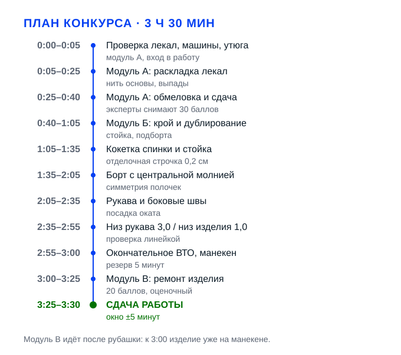
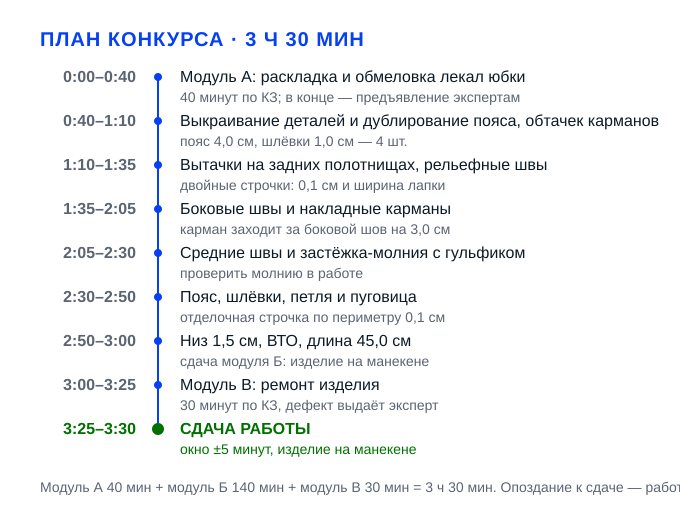
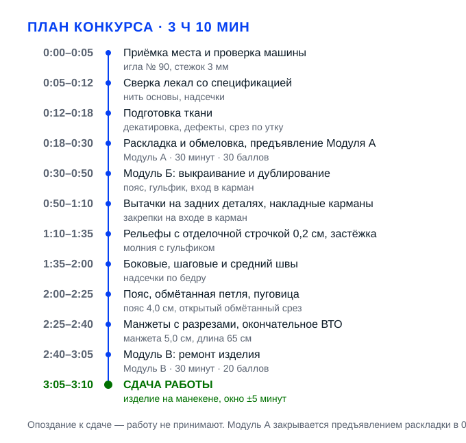

Закройщик (Р)
Задания ниже — официальные файлы «Абилимпикс» (источник: abilympics-russia.ru), разложенные по категориям. Решения написаны по тексту задания, регламенту и критериям оценки; в них указано, что именно проверяет эксперт.
Школьник
14–16 лет, базовый уровень заданияВыдержка из официального конкурсного задания: страницы, относящиеся к категории «Школьник» (стр. 5–8 источника).
Пошаговое решение
Задание категории «Школьники» — мужская летняя рубашка из хлопчатобумажной ткани прямого силуэта: центральная застёжка на молнию, цельнокроенная стойка, притачная кокетка спинки, короткий рукав рубашечного покроя. Работа идёт в трёх модулях общей длительностью 3 часа 30 минут: 40 минут на раскладку и обмеловку лекал (30 баллов), 140 минут на изготовление рубашки (50 баллов) и 30 минут на ремонт изделия по региональному заданию (20 баллов), всего 100 баллов. Три размера, которые на оценке проверяют линейкой: низ рукава — шов в подгибку с закрытым срезом шириной 3,0 см, низ изделия — шов в подгибку с открытым срезом шириной 1,0 см, отделочная строчка по стойке, краю борта и кокеткам — 0,2 см. Допускается изменять способ обработки узла и ширину отделочных швов, но нельзя увеличивать количество деталей кроя из основной ткани и менять состав ткани для пошива.

Задача 1. Подготовить рабочее место, машину и утюгМодуль А · подготовка внутри 40 минут
Подготовка не оплачивается отдельной строкой, но съедает первые минуты модуля А, на который отведено 40 минут и 30 баллов. Всё, что не сделано сейчас, придётся делать внутри раскладки, а раскладка — самый плотный по времени этап: булавки, мел и обмеловка не терпят спешки. Поэтому первым делом участник надевает передник, раскладывает инструмент по зонам и убеждается, что машина строчит ровно и утюг вышел на режим хлопка. Отдельно проверяются ножницы, мел и булавки — без них раскрой просто не начнётся.
Действие 1.1. Надеть спецодежду и разложить инструмент
Шаг 1.1.1
Надеваем передник из хлопчатобумажной ткани: по перечню конкурсного задания это единственная обязательная спецодежда участника, и привезти её нужно с собой, одну штуку. Завязываем так, чтобы передник закрывал грудь и колени и не свисал на стол, потому что свисающий край цепляется за раскройную линейку и тянет ткань во время обмеловки. Волосы убираем под резинку или заколки полностью, рукава подворачиваем выше локтя, часы и кольца снимаем. Обувь только закрытая: на площадке под столом лежат булавки и обрезки, а упавшие ножницы летят остриём вниз.
Передник в конкурсном задании вынесен в раздел обязательной спецодежды, и его отсутствие фиксируется на входе, когда исправить уже нечем. Кроме того, хлопковая пыль, мел и ворс от прокладки остаются на одежде, а не на изделии: рубашка из светлой бязи или поплина собирает грязь мгновенно, и за неопрятный вид деталей баллы снимают уже в модуле Б. Аккуратный внешний вид работает и на организационные критерии.
Проверьте себя по трём признакам: передник завязан и держится без завязок на спине, волос не видно ни спереди, ни сзади, на руках нет украшений и часов. Рукава не спускаются ниже локтя — иначе при работе у утюга они окажутся на ткани. Если передник длинный, подогните и подколите нижний край булавкой, но не оставляйте его волочиться.
Самая частая ошибка — надеть передник не сразу, а «когда начнётся раскрой»: мел и клеевой слой прокладки остаются на форме, а потом переносятся на ткань. Вторая ошибка — работать с распущенными волосами: они попадают под лапку, и на лицевой стороне получается стяжка, которую невозможно убрать без перешивания детали.
Эксперт смотрит участника на входе и в первые минуты модуля А: наличие передника, убранные волосы, закрытая обувь. Дальше он изредка проверяет, остаётся ли рабочее место и одежда в порядке к моменту сдачи раскладки.
Шаг 1.1.2
Раскладываем инструмент по постоянным зонам, чтобы не искать его на ощупь. Справа от раскройного стола — ножницы, портновские булавки в подушечке, сантиметровая лента, линейка-угольник и комплект лекал, сложенный по номерам. Слева — мел или мыло, тонко заточенный карандаш, колёсико и смываемый маркер. В отдельной коробочке — нитки в цвет ткани, шпульки, машинные иглы и вспарыватель: к ним обращаются реже, но искать их посреди стачивания нельзя.
Каждая минута поиска инструмента вычитается из модулей, а модуль А идёт всего 40 минут и заканчивается обязательной сдачей работы экспертам. Когда мел лежит на своём месте, обмеловка идёт непрерывно, линии получаются ровными, а вторая линия припуска не съезжает. Разложенный инструмент — это ещё и часть организационных критериев: эксперт видит, умеет ли участник организовать пространство, а не только шить.
Проверьте, что мел оставляет линию толщиной 1–2 мм и не крошится, булавки не тупые и не ржавые, ножницы режут кончик ткани без зажёвывания, а лекала разложены по порядку номеров. Убедитесь, что стол свободен от посторонних предметов и протёрт: пыль и мел под тканью дают грязные разводы на светлом хлопке.
Типичная ошибка — сложить всё в одну кучу рядом с машиной и потом искать булавки, перебирая иглы. Вторая — оставить на столе обрезки от предыдущей работы и крошки мела: они прилипают к изнанке ткани и остаются внутри шва, а такой дефект виден на вывернутом изделии.
Эксперт оценивает организацию рабочего места в начале модуля А и отдельно отмечает порядок на столе перед сдачей раскладки: разбросанные обрезки и открытые ножницы считаются нарушением.
Шаг 1.1.3
Проверяем безопасность до первого движения: ножницы кладём сомкнутыми, кольцами к себе, булавки держим только в подушечке и не берём в рот, утюг ставим на термостойкую подставку справа, шнур укладываем так, чтобы он не пересекал проход. Если на площадке стоит оверлок, проверяем, закрыт ли защитный кожух, а руки при работе держим не ближе пяти сантиметров от иглы. Стул регулируем по высоте так, чтобы локти лежали на столе, а спина оставалась прямой.
Правила безопасного труда — часть требований к квалификации участника: они прямо перечислены в конкурсном задании вместе с умением пользоваться оборудованием. На практике нарушение стоит дороже баллов: порезанная рука останавливает работу на десять минут, а это четверть модуля А. Открытые ножницы и горячий утюг без подставки на площадке, где рядом ходят другие участники, — прямой риск и для них.
Проверьте три вещи: ножницы закрыты, утюг на подставке и не касается ткани, шнуры лежат вдоль стола. Сядьте за машину и убедитесь, что вам удобно дотянуться до педали и до рычага подъёма лапки, не вставая. Освещение должно падать слева или сверху, но не давать тени на иглу — при боковом свете справа линия шва уходит.
Частая ошибка — оставить утюг подошвой на проутюжильнике «чтобы не остывал»: проутюжильник подгорает, а на следующей детали появляется жёлтый след. Вторая — работать без подставки под ноги и с высоко поднятыми плечами: через час спина начинает болеть, и скорость падает ровно там, где нужна точность.
Эксперт фиксирует нарушения безопасности сразу и может остановить работу. Отдельно смотрит, как участник обращается с утюгом и ножницами в течение всего конкурса.
Действие 1.2. Проверить машину, строчку и режим утюга
Шаг 1.2.1
Заправляем машину по полной схеме: нить с катушки через нитенаправители, регулятор натяжения, рычаг подъёма нити, ушко иглы; шпульку вставляем в челнок так, чтобы нить выходила против часовой стрелки и попадала под пружину. Для хлопковой рубашки берём иглу № 90 и армированные нитки 45ЛЛ в цвет ткани: тонкая игла на плотной бязи гнётся и пропускает стежки, толстая оставляет проколы, которые на светлом хлопке видны после стирки.
Правильная заправка и подобранная игла — условие ровной строчки, а ровная строчка оценивается во всех узлах модуля Б, где отделочная строчка идёт по стойке, по краю борта и по кокеткам шириной 0,2 см. Пропуск стежка или петляние на такой строчке видно сразу и стоит баллов в каждом узле отдельно. Кроме того, на разборку неудачной строчки уходит время, которого в 140 минутах модуля Б нет.
Проверяем просто: медленно прокручиваем маховик на себя и смотрим, проходит ли нить все точки без зацепов, затем тянем нить из челнока — она должна выходить с лёгким сопротивлением. Убедитесь, что шпулька вставлена до щелчка и не болтается, а на катушке хватает нити на весь модуль.
Ошибка новичка — заправить верхнюю нить, пропустив рычаг подъёма: строчка идёт, но натяжение не регулируется, и снизу появляются петли. Вторая — взять шпульку с ниткой другого номера: верх и низ тянутся по-разному, шов стягивается.
Эксперт смотрит на качество строчки в готовом изделии, а не на процесс заправки, но при явных пропусках стежков может обратить внимание участника до начала работы.
Шаг 1.2.2
Делаем пробную строчку на двойном лоскуте той же ткани: складываем два куска, прокладываем шов длиной 10–15 см и разворачиваем. Длина стежка для стачивания — 2,5–3 мм, для отделочной строчки оставляем ту же величину, для обмётывания срезов на оверлоке — 3–4 мм. Регулятором натяжения добиваемся, чтобы узелок переплетения нитей прятался внутри ткани и не выглядывал ни сверху, ни снизу.
Пробная строчка — единственный способ поймать дефект до того, как он попадёт на изделие. Узелок, вышедший на лицо, на отделочной строчке 0,2 см по борту виден как цепочка точек, а это прямой минус по критерию качества обработки. Слишком мелкий стежок на хлопке рвёт волокна по линии шва, и при ВТО шов начинает расходиться.
Разверните лоскут и посмотрите на свет: переплетение внутри, ткань по шву не собрана в мелкие сборки, строчка не стягивает слой. Проведите ногтем поперёк шва — он должен лежать плоско. Порвите лоскут по шву: нитки рвутся, а ткань по линии прокола остаётся целой.
Частая ошибка — шить пробу на другой ткани, например на лоскутке от подкладки: на основной ткани натяжение уходит, и на изделии появляются петли. Вторая — подкрутить натяжение «на глаз», не проверив результат на развороте шва.
Эксперт оценивает ровность и плотность строчки на изнаночной стороне изделия — её он смотрит при оценке каждого шва, особенно боковых и отделочных. Отдельно он смотрит на изнанку шва: пропуски стежков там заметнее, чем с лица.
Шаг 1.2.3
Ставим утюг на режим «хлопок», это примерно 150–180 °C, и ждём выхода на температуру по индикатору. Готовим проутюжильник из хлопковой ткани, подушку для ВТО плечевых швов и маленькую подложку под мелкие детали. Пар включаем для разутюживания швов, а для дублирования прокладки — по инструкции к клеевому материалу, обычно через влажную ткань и с выдержкой 10–15 секунд.
Хлопок требует высокой температуры, но именно поэтому легко прожечь: на режиме «шёлк» клеевой слой не схватится, а на максимуме без проутюжильника на светлой ткани остаётся лас. ВТО в конкурсном задании выделено отдельной операцией — окончательная влажно-тепловая обработка стоит последним пунктом модуля Б, и недоглаженное изделие теряет баллы даже при аккуратных швах.
Проверьте режим на ненужном лоскуте: приложите утюг на 3–4 секунды — лоскут не должен желтеть и блестеть. Убедитесь, что в резервуаре есть вода, а подошва чистая: нагар от клеевой прокладки переносится на ткань тёмными полосами. Проутюжильник должен быть чистым и сухим.
Ошибка — дублировать детали горячим утюгом без проутюжильника: клей выступает на лицо пятнами, и стойка получает жёсткие блестящие участки. Вторая — начинать ВТО, не дождавшись нагрева: утюг «недогревает» первые секунды, и прокладка приклеивается только по краям.
Эксперт осматривает изделие на манекене при боковом свете: ласы, замины и неразутюженные швы видны сразу, а критерий окончательной отделки входит в модуль Б.
Задача 2. Модуль А: проверить лекала, разложить и обмелитьМодуль А · 30 баллов · 40 минут
Модуль А — это раскладка и обмеловка лекал рубашки на ткани, 40 минут и 30 баллов. Последовательность в конкурсном задании задана жёстко: сверить спецификацию с деталями на бумаге, проверить нить основы на каждом лекале, разложить детали с учётом долевой, закрепить булавками, обмелить и сдать работу экспертам. Ошибка на этом этапе не исправляется: неверная долевая в готовом изделии видна как перекошенный бок, а недостающий припуск по борту не даст втачать молнию. Поэтому раскладку проверяют дважды — до булавок и после обмеловки.
Действие 2.1. Сверить комплект лекал со спецификацией
Шаг 2.1.1
Раскладываем лекала на свободной части стола и пересчитываем по спецификации: полочка — две детали, спинка и кокетка спинки — по одной со сгибом, стойка, два рукава, два подборта, а также лекала прокладки на стойку и подборты. Каждую деталь отмечаем в списке карандашом, чтобы не считать дважды одну и ту же. Заодно сверяем обозначения на лекалах: наименование детали, размер и количество деталей кроя, которое из него получается.
Первый пункт последовательности модуля А — именно сверка спецификации с деталями на бумаге, и на нём теряют баллы чаще всего: недостающую деталь обнаруживают, когда ткань уже обмелена. Восстановить лекало на площадке нечем, а кроить «по памяти» — значит получить перекос и нехватку ткани. Сверка занимает две минуты из сорока и страхует весь раскрой.
Все позиции списка отмечены, ни одна деталь не осталась непарной, номера на лекалах совпадают с номерами в спецификации. Отдельно проверьте лекало стойки: в задании стойка цельнокроенная, то есть одна деталь без отрезной части, и если в комплекте лежит два разных лекала, уточняйте у эксперта до раскладки.
Типичная ошибка — считать лекала «на глаз», перебирая стопку: парные детали складываются изнанка к изнанке, и одна из них теряется из виду. Вторая — обнаружить некомплект после обмеловки и начать кроить спинку из двух частей: фасон изделия менять нельзя, это прямо запрещено в разделе допустимых изменений.
Эксперт подходит к столу в начале модуля и смотрит, сверялся ли участник со спецификацией. Комплектность кроя он проверяет позже, при оценке модуля Б.
Шаг 2.1.2
На каждом лекале находим обозначение нити основы — обычно это стрелка с надписью «Н.О.» или долевая, проведённая по всей длине детали. Проверяем, что направление стрелки у парных деталей одинаковое, а у деталей со сгибом надпись «сгиб» стоит на той стороне, которую прикладывают к сгибу ткани. Лекала без обозначения долевой откладываем в сторону и показываем эксперту: раскладывать их наугад нельзя.
Долевая нить задаёт, как изделие будет носиться и садиться: по основе ткань почти не тянется, и деталь, уложенная поперёк, вытянется в носке и перекосится после первой стирки. В критериях модуля А отдельно оценивается соблюдение направления нити основы, причём перекос считается дефектом раскладки, а не «мелкой неточностью».
Стрелки на всех лекалах направлены в одну сторону, параллельно кромке. Положите лекало на стол и приложите к стрелке угольник: линия долевой должна идти перпендикулярно срезу, который вы потом совместите с кромкой. Ткань при проверке держим натянутой, но не растянутой.
Частая ошибка — разложить лекала по красоте, забыв про долевую: рубашка потом «закручивается» по боковым швам. Вторая — перевернуть парную деталь и получить две правые полочки вместо правой и левой: исправляется только перекроем, а ткани на второй комплект не хватит.
Эксперт проверяет направление долевой на обмеленных деталях линейкой и угольником, а также смотрит на симметричность раскладки парных деталей. Ещё он отмечает, разложены ли парные детали зеркально: одинаковое направление долевой читается как ошибка.
Шаг 2.1.3
Проверяем сами лекала: контур должен быть целым, без надрывов и подклеек, линии припусков — если они нанесены — ровными. Смотрим, есть ли на лекалах контрольные надсечки: по горловине, по пройме, по линии втачивания стойки и по низу рукава. Если лекало из плотного картона повело от влаги, кладём его под пресс на несколько минут, а не прижимаем рукой во время обмеловки.
Покоробленное или надорванное лекало даёт ошибку в 3–5 мм, а на таком изделии, как рубашка с центральной застёжкой на молнию, полмиллиметра по борту — уже разная длина полочек. Контрольные надсечки экономят время в модуле Б: по ним детали совмещаются без промера, и посадка рукава не уезжает вперёд или назад.
Контур замкнут, линии плавные, надсечки читаются. Приложите парные лекала друг к другу лицевой стороной наружу: контуры должны совпасть, расхождение больше 2 мм — признак дефекта лекала, о нём говорим эксперту сразу.
Ошибка — обмелять лекало, у которого загнут угол: на ткани линия уходит внутрь, и припуск по этому срезу оказывается меньше нормы. Вторая — не заметить отсутствие надсечки и потом искать линию втачивания стойки на глаз.
Эксперт при оценке раскладки смотрит, совпадают ли обмеленные контуры с лекалами и нанесены ли контрольные точки на ткани. Если лекало повреждено, эксперт подтверждает замену, и до её получения обмеловку начинать нельзя.
Действие 2.2. Подготовить ткань и разложить лекала
Шаг 2.2.1
Определяем лицевую и изнаночную сторону: у хлопковой бязи и поплина лицевая гладкая, с ровным переплетением, изнанка более рыхлая и с узелками. Долевую проверяем по кромке: она идёт вдоль кромки, а при отрыве среза ткань рвётся ровно по основе. Затем просматриваем полотно на свет с двух сторон и отмечаем мелом или ниткой все пороки: утолщения, недосеки, пятна, заломы.
Пороки, оставленные без внимания, попадают в готовое изделие и стоят баллов сразу в двух модулях: в раскладке — за качество, в изделии — как дефект внешнего вида. Кроме того, ткань в конкурсном задании одна и запасной нет, поэтому пороки нужно не выбросить, а обойти при раскладке. Определение долевой по кромке занимает секунды и снимает главный риск перекоса.
Полотно просмотрено по всей длине, пороки обведены мелком с изнанки, кромка целая и не стянута. Убедитесь, что ширина ткани одинакова по всей длине: если один край шире на 2–3 см, раскладку строим от узкой стороны.
Ошибка — начать раскладку, не проверив изнанку: пятно от масла оказывается ровно на полочке по центру. Вторая — считать, что долевая всегда идёт «вдоль длинной стороны отреза», и разложить детали поперёк ширины.
Эксперт проверяет, отмечены ли пороки и обойдены ли они в раскладке, — это входит в критерий качества раскладки. Кроме того, он проверяет, что обойдённые пороки не попали на видимые детали — полочку, стойку, кокетку.
Шаг 2.2.2
Начинаем с крупных деталей: полочки и спинку с кокеткой укладываем первыми, отступая от кромки 1,0–1,5 см, чтобы припуск по боковому шву не срезался. Детали со сгибом прикладываем к сгибу ткани, не доходя до него 1–2 мм, иначе на сгибе образуется утолщение и после раскроя останется ступенька. Стрелка долевой должна идти параллельно кромке, расстояние от кромки до лекала по всей длине одинаковое.
Раскладка строится от крупного к мелкому, потому что мелкие детали можно вписать в выпады между лекалами, а крупные — нет. Ровный отступ от кромки нужен не для красоты: по нему потом проверяют долевую, и любой клин сразу виден. В модуле А за рациональность раскладки и соблюдение направления нити основы даётся основная часть из 30 баллов.
Проверьте параллельность: измерьте сантиметровой лентой расстояние от кромки до лекала в начале и в конце детали — расхождение не должно превышать 2–3 мм на длине полочки. Между лекалами оставляйте 1,0–1,5 см на припуски, а по срезам, где припуск 4,0 см под низ рукава, — не меньше 4,5 см.
Классическая ошибка — уложить полочки «валетом», не учтя, что у них разные направления борта: одна деталь кроится зеркально. Вторая — прижать лекала вплотную друг к другу и потерять припуск на шов, а потом выкроить деталь уже на 1 см.
Эксперт смотрит раскладку сверху: читается ли она, есть ли между деталями припуски, не срезаны ли срезы у кромки. Отдельно он отмечает, не срезан ли припуск у кромки: этот дефект исправить уже нельзя.
Шаг 2.2.3
Вписываем мелкие детали в свободные места: стойку, подборта, прокладку. Стойку и подборта располагаем так, чтобы их долевая тоже шла вдоль кромки — по стойке это принципиально, иначе воротник после ВТО поведёт волной. Закрепляем каждое лекало булавками: две-три булавки на крупную деталь, вкалываем под углом к линии обмеловки, а не вдоль неё, чтобы лекало не сдвинулось под мелком.
Булавки — единственное, что удерживает лекало при обмеловке: сдвиг на 3 мм приводит к тому, что деталь выходит короче, и в модуле Б не хватает длины по борту. Вкалывание под углом — приём, который экономит время: булавку потом легко вынуть одной рукой, не поднимая лекало. Мелкие детали в выпадах — это и есть рациональность раскладки, которую оценивают отдельно.
Лекало не сдвигается, если нажать на него ладонью и отпустить — оно должно остаться на месте. Между булавками не больше 10–15 см, все углы лекал закреплены. Проверьте, что булавки не выходят на линию обмеловки: мел обводит булавку по кругу и линия получается с изломом.
Ошибка — приколоть лекало одной булавкой по центру: углы заворачиваются, и обмеловка уходит. Вторая — вкалывать булавки горизонтально, вдоль среза: они расщепляют нити ткани и оставляют затяжки на лицевой стороне.
Эксперт проверяет плотность прикалывания и то, не осталось ли на ткани лишних проколов от перекалывания. Если лекала сдвигаются от прикосновения, он предупреждает участника до начала обмеловки.
Действие 2.3. Обмелить лекала, проверить и сдать работу
Шаг 2.3.1
Обмеляем контур лекала тонким мелом или заточенным мылом, держа инструмент наклонно к ткани, а не вертикально: вертикальный мел оставляет широкую линию и крошится. Линия должна быть толщиной 1–2 мм и идти вплотную к краю лекала, не заходя под него и не отступая. Ведём одной непрерывной линией, поворачивая ткань или обходя деталь вокруг стола, а не отрывая руку на каждом повороте.
Линия обмеловки — это линия шва, и весь дальнейший крой строится от неё. Широкая или дрожащая линия даёт припуск «плюс-минус сантиметр», и в модуле Б швы получаются разной ширины, а отделочная строчка 0,2 см по борту ложится криво. Ровная обмеловка — прямой путь к ровным швам и к баллам за качество раскладки.
Проведите по линии ногтем: она должна быть видимой, но не размазанной. Проверьте, что линия обмеловки не пересекает булавки и не прерывается на углах — именно на углах чаще всего остаётся разрыв в 5–10 мм, и потом непонятно, где вершина детали.
Ошибка — обмелять «по памяти», отступая от лекала: линия уходит внутрь, и деталь получается меньше на 3–5 мм. Вторая — использовать толстый мел: линия в 4 мм съедает половину припуска, и после раскроя шов не сходится.
Эксперт при оценке раскладки смотрит на непрерывность и толщину линии обмеловки, а также на то, совпадают ли контуры с лекалами. Толщину линии он тоже оценивает: размазанный мел читается как небрежность.
Шаг 2.3.2
Второй линией наносим припуски: по боковым и плечевым срезам — 1,0 см, по срезу борта — 0,7 см, по горловине и пройме — 1,0 см, по низу рукава — 4,0 см (это 3,0 см подгибки плюс 1,0 см на обработку), по низу изделия — 1,0 см. Откладываем припуск сантиметровой лентой в нескольких точках и соединяем метки непрерывной линией, а не «на глаз» параллельно первой.
Ширина припуска прямо задана конкурсным заданием: низ рукава обрабатывается швом в подгибку с закрытым срезом шириной 3,0 см, низ изделия — с открытым срезом шириной 1,0 см. Если выкроить низ рукава с припуском 1,0 см, подгибку 3,0 см сделать не из чего, и узел придётся переделывать из обрезков. Припуск по борту 0,7 см нужен, чтобы молния встала без утолщения.
Измерьте лентой ширину припуска в трёх местах каждой детали: у начала, в середине и в конце среза. Расхождение больше 2 мм — линия проведена криво. Проверьте, что вторая линия нигде не выходит за край ткани и не пересекает соседнюю деталь.
Ошибка — нанести одинаковый припуск 1,0 см по всем срезам, включая низ рукава: подгибка 3,0 см не получится. Вторая — забыть припуск по борту и выкроить борт в ноль: тесьму молнии притачивать некуда, и деталь уходит в брак.
Эксперт измеряет припуски линейкой на выкроенных деталях: 4,0 см по низу рукава и 1,0 см по низу изделия — точки, которые проверяют в первую очередь. Особое внимание — припуску по борту: при 0,5 см молнию не посадить без натяжения.
Шаг 2.3.3
Перед сдачей проходим раскладку глазами эксперта: долевая параллельна кромке, парные детали симметричны, припуски нанесены, пороки обойдены, между деталями нет наложений. Считаем детали ещё раз по спецификации. Затем убираем булавки из зоны обмеловки, оставляя лекала на ткани, и приглашаем эксперта — работа сдаётся в пределах 40 минут модуля А. Раскладку не накрываем тканью и не сворачиваем: эксперту нужен доступ к любому срезу.
Сдача раскладки — отдельный пункт последовательности модуля А, и он стоит 30 баллов целиком: после того как эксперт зафиксировал результат, добавить или исправить что-то уже нельзя. Проверка «глазами эксперта» ловит те ошибки, которые участник перестаёт видеть, потому что смотрит на свою работу час. Заодно снимается риск, что эксперт увидит наложение лекал, о котором участник забыл.
Эксперт подошёл и зафиксировал раскладку, вы получили замечания или подтверждение. Все детали на месте, припуски читаются, следов перекалывания минимум. Время сдачи должно быть раньше 40-й минуты, а не «в последнюю секунду».
Ошибка — сдавать раскладку с булавками, воткнутыми в каждое лекало: эксперт не может приподнять деталь и проверить припуск, и осмотр затягивается. Вторая — дотянуть до конца модуля и сдать в спешке, не пересчитав детали.
Эксперт осматривает раскладку целиком, затем измеряет припуски на двух-трёх деталях и сверяет количество деталей со спецификацией. Он также смотрит, не осталось ли под лекалами булавок, о которые можно уколоться.
Задача 3. Модуль Б: раскрой деталей и дублированиеМодуль Б · 50 баллов · 140 минут
Модуль Б — изготовление мужской рубашки, 140 минут и 50 баллов, самая весомая часть конкурса. Начинается он с двух операций, которые задают качество всего изделия: вырезать детали из основной и прокладочной ткани и продублировать стойку и подборта. Крой, сделанный по линии обмеловки, а не по припуску, обрекает все последующие швы на перекос, а плохо приклеенная прокладка проявляется пузырями уже после первой влажно-тепловой обработки — и убрать их без следов невозможно. Поэтому на крой и дублирование уходит примерно 25 минут из 140.
Действие 3.1. Выкроить детали из основной и прокладочной ткани
Шаг 3.1.1
Режем строго по второй линии, той, что проведена с припуском, а не по контуру лекала. Ножницы держим так, чтобы нижнее лезвие шло по столу и не поднимало ткань: приподнятая ткань уходит в сторону, и срез получается волной. Длинные срезы режем длинными движениями от себя, не отрывая ножницы от полотна, короткие и фигурные участки — кончиками лезвий, не смыкая их до конца.
Ровный срез — это ровный шов: если край вырезан «лесенкой», при стачивании детали совмещаются по срезам, и перекос уходит внутрь шва. В модуле Б оценивается качество обработки каждого узла, а неровный срез по борту не даст посадить молнию без заминов. Кроме того, припуск, срезанный у кромки, уже не восстановить: ткани впритык.
Разложите выкроенные детали и проверьте срез на просвет: линия края непрерывная, без зубцов и «ступенек» глубже 1–2 мм. Приложите деталь к лекалу — контур повторяет его форму, припуск по всем срезам одинаковый.
Ошибка — резать по линии обмеловки, то есть в ноль: припуска нет, и первый же шов приходится делать шириной 0,5 см. Вторая — резать, не отрывая нижнее лезвие от стола, но поднимая ножницы вверх: срез получается волнистым, и потом его приходится подравнивать, теряя припуск.
Эксперт оценивает крой по ровности срезов и по соответствию лекалам; грубые зубцы и перекос он отмечает уже при проверке готового изделия. Кроме ровности он оценивает направление среза относительно нити основы: косой срез по борту выдаёт ошибку раскладки.
Шаг 3.1.2
Ставим контрольные надсечки по горловине, по пройме, по линии втачивания стойки и по окату рукава, совмещая их с надсечками на лекале. Глубина надсечки — 0,3–0,5 см, и она не должна доходить до линии шва: надсекаем поперёк среза, а не под углом. На срезах, которые будут обмётываться, надсечки ставим после обмётывания, чтобы оверлок не срезал их вместе с припуском.
Надсечки — это разметка сборки: по ним совмещают середину спинки, боковые швы и посадку рукава, не перемеряя детали. Без них рукав втачивают со сдвигом, и он тянет полочку вперёд — дефект, который видно на манекене сразу. Глубина 0,3–0,5 см выбрана не случайно: более глубокая надсечка попадает в шов и превращается в разрыв.
Надсечки видны на обоих слоях ткани, симметричны на парных деталях, не доходят до линии шва. Проверьте, что надсечка по окату рукава совпадает с плечевым швом полочки, а по стойке — с серединой горловины спинки.
Частая ошибка — надсечь слишком глубоко «чтобы видно было»: при стачивании ткань рвётся по надсечке, и в шве появляется разрыв. Вторая — поставить надсечки только на одной детали пары: совмещать не с чем, и симметрия теряется.
Эксперт проверяет наличие и симметричность надсечек при оценке соединения деталей, отдельно — по рукаву и стойке. Он проверяет надсечки по окату и по горловине: по ним видно, совмещались ли детали при сборке.
Шаг 3.1.3
Выкраиваем прокладку: на стойку и на подборта. Прокладку кроим без припусков на швы или на 0,2–0,3 см меньше детали, чтобы клеевой слой не выходил за срез и не пачкал подошву утюга и иглу. Для стойки выкраиваем две детали по числу слоёв, для подбортов — две зеркальные. Раскладываем прокладку так же, как основную ткань, по долевой: клеевая основа тянется поперёк и без учёта долевой даёт усадку.
Прокладка в стойке держит форму воротника, а в подбортах — край борта, в который встаёт молния. Дублированные детали прямо названы во второй операции модуля Б, и если стойка останется без прокладки, она обвиснет после ВТО, а борт пойдёт волной вокруг тесьмы. Кроить прокладку с припусками нельзя: клей, выступивший за срез, приклеивается к проутюжильнику и оставляет на изделии жёсткие блестящие полосы.
Прокладка на 2–3 мм меньше детали по всему контуру, долевая совпадает с деталью, парные детали зеркальны. Проверьте на ощупь: клеевая сторона шершавая, на блестящей стороне клея нет. Прокладка не выходит за контур детали, а клеевой слой нигде не загнут на лицевую сторону.
Ошибка — выкроить прокладку на глаз, крупнее детали: клей выходит за срез, утюг приходится чистить, а по краю стойки появляется жёсткая кромка. Вторая — перепутать стороны и приклеить прокладку клеевой стороной к проутюжильнику.
Эксперт смотрит на жёсткость и упругость стойки и борта в готовом изделии, а также на отсутствие следов клея на лицевой стороне. Он смотрит, обрезана ли прокладка по контуру: лишний слой виден по толщине среза.
Действие 3.2. Продублировать стойку и подборта
Шаг 3.2.1
Кладём деталь изнанкой вверх, сверху — прокладку клеевой стороной вниз, совмещая срезы и долевую. Накрываем влажным проутюжильником и прижимаем утюгом от середины к краям, участками по 10–15 см, с выдержкой 10–15 секунд на каждом. Утюг не ведём, а именно прижимаем: движение сдвигает прокладку, и она приклеивается со смещением или складкой. Прокладку укладываем от среза, оставляя 2–3 мм до края, чтобы клей не попал на иглу.
Дублирование — операция, которую нельзя исправить: оторванная прокладка оставляет на ткани след клея и рыхлую поверхность, а повторное приклеивание уже не даёт ровной поверхности. От качества этого шага зависит, будет ли стойка держать форму и не пойдёт ли борт волной вокруг молнии. В модуле Б за обработку стойки и борта начисляется заметная часть из 50 баллов.
Прокладка лежит без пузырей и складок, срезы совпадают, ткань не повело. Приподнимите угол детали: прокладка должна держаться за тканью, а не отходить пластом. Если угол отходит — утюг был холодным, повторите с выдержкой.
Ошибка — гладить утюгом по прокладке, как по ткани: она сдвигается и приклеивается гармошкой, которую видно на лице. Вторая — клеить без проутюжильника: клей прилипает к подошве, и на следующей детали остаётся тёмный след.
Эксперт проверяет стойку на ощупь и на просвет: пузыри и отслоения видны и при осмотре, и после ВТО. Он проводит пальцем по поверхности стойки: пузыри и отслоения чувствуются под рукой.
Шаг 3.2.2
Ведём дублирование в два приёма: сначала приклеиваем прокладку по всей площади с изнанки, затем переворачиваем деталь и проглаживаем с лицевой стороны через проутюжильник, чтобы снять напряжение ткани. Температуру держим на режиме «хлопок», пар выключаем или оставляем минимальным: обильный пар размягчает клей и не даёт схватиться. Особое внимание — концам стойки и уголкам подбортов, там прокладка чаще всего отходит.
Двойной проход нужен потому, что клей схватывается только при равномерном прогреве всей площади, а концы деталей прогреваются хуже середины. Проглаживание с лица снимает внутреннее напряжение и предотвращает «пузырение» после первой стирки. Именно на этих участках эксперт проверяет дублирование, когда смотрит уголки борта и концы стойки.
Поверхность детали ровная с обеих сторон, на лице нет волн и отпечатков проутюжильника. Проведите ногтем по краю: прокладка не должна шелестеть отдельно от ткани. Уголки подбортов плотные, не расслоенные.
Ошибка — дублировать с паром «чтобы лучше приклеилось»: клей размягчается, прокладка плывёт, и после остывания поверхность идёт волной. Вторая — не проглаживать с лица: на тонком хлопке остаются отпечатки шва прокладки.
Эксперт осматривает стойку и подборта при боковом свете: волнистая поверхность читается как дефект дублирования. Особое внимание — концам стойки и уголкам подбортов, где прокладка отходит чаще всего.
Шаг 3.2.3
Даём деталям полностью остыть — 20–30 минут, не меньше: горячую прокладку легко сдвинуть, и она приклеится с перекосом. Пока детали остывают, занимаемся остальным кроем или начинаем кокетку спинки. После остывания проверяем адгезию по всей площади, обрезаем лишнюю прокладку по контуру ножницами вплотную к срезу и убираем нитки. Если прокладка где-то отходит, приклеиваем участок повторно, а не оставляем как есть.
Остывание — не формальность: клей набирает окончательную прочность только после охлаждения, и любое движение горячей детали ломает соединение. Пока детали остывают, терять время нельзя, поэтому проверку ставят после любой параллельной операции. Обрезка лишней прокладки по контуру нужна, чтобы припуск на шов оставался однослойным: иначе шов втачивания стойки получается толстым и не разутюживается.
Прокладка держится по всей площади, лишнее срезано, срезы чистые. Попробуйте отогнуть край — прокладка должна тянуть ткань за собой, а не отходить. На изнанке не осталось клеевых крошек, которые потом прилипнут к игле.
Ошибка — начать стачивать горячую деталь: прокладка сдвигается под лапкой, и получается залом, который не разглаживается. Вторая — оставить прокладку с припуском: шов втачивания стойки становится толщиной в четыре слоя и при ВТО даёт рубец.
Эксперт проверяет толщину шва втачивания стойки и чистоту изнанки — необрезанная прокладка видна как лишний слой. Он смотрит на срез детали: необрезанная прокладка даёт утолщение, заметное и на манекене.
Задача 4. Кокетка спинки, стойка и борт с молниейМодуль Б · узлы с отделочной строчкой 0,2 см
Три узла, которые видно на изделии с первого взгляда: кокетка спинки, воротник-стойка и борт с центральной застёжкой на молнию. Все три заданы в конкурсном задании жёстко: кокетка притачная, стойка цельнокроенная, застёжка центральная на молнию, а по стойке, по краю борта и по кокеткам проложена отделочная строчка шириной 0,2 см. Именно эти строчки эксперт измеряет линейкой, и именно на них видно всё: ровность, натяжение нити, симметрию. На три узла уходит около часа из 140 минут модуля Б.
Действие 4.1. Притачать кокетку к спинке
Шаг 4.1.1
Складываем кокетку и спинку лицевыми сторонами внутрь, совмещая срезы и контрольные надсечки по середине и по пройме. Стачиваем швом шириной 1,0 см со стороны кокетки, чтобы посадка распределялась по спинке, а не по кокетке. Срезы обмётываем вместе на оверлоке или зигзагом, шов заутюживаем в сторону кокетки, а не разутюживаем: по заданию отделочная строчка идёт по кокетке, и припуск должен лежать под ней.
Кокетка в конкурсном задании притачная, значит шов соединения открыт взгляду с изнанки и оценивается вместе с посадкой. Заутюженный в сторону кокетки припуск — это не привычка, а требование узла: если разутюжить, отделочная строчка 0,2 см пройдёт по тонкому месту и ткань вокруг неё соберётся в морщины. Обмётывание вместе даёт один плотный срез вместо двух сыпучих.
Шов ровный, ширина 1,0 см по всей длине, срезы обмётаны, припуск лежит в сторону кокетки и не топорщится. Проверьте посадку: длина кокетки и спинки по линии шва должна совпасть без сборок и растяжения.
Ошибка — стачать кокетку без совмещения надсечек: середина уезжает в сторону на 1–2 см, и кокетка на изделии видна перекошенной. Вторая — разутюжить шов «как обычно»: отделочная строчка потом ложится не по кокетке, а по спинке, и узел перестаёт соответствовать заданию.
Эксперт проверяет ширину шва и направление припуска при осмотре изнанки, а посадку кокетки — по симметрии относительно середины спинки. Отдельно он проверяет, не пошла ли кокетка винтом относительно середины спинки.
Шаг 4.1.2
Прокладываем отделочную строчку на 0,2 см от шва притачивания, по стороне кокетки. Ориентир — край лапки или наклеенная на платформу полоска малярного скотча на нужном расстоянии: вести строчку «на глаз» на длине спинки невозможно. Начинаем и заканчиваем закрепкой, нить в цвет ткани, длина стежка 2,5–3 мм. Строчку ведём одной непрерывной линией, не останавливаясь на поворотах.
Отделочная строчка 0,2 см по кокетке — прямое требование задания, и её ширину измеряют линейкой. Именно по ней видно качество посадки изделия: строчка, которая «гуляет» от 1 до 4 мм, читается как небрежность, даже если всё остальное сделано хорошо. Ровная строчка заодно фиксирует припуск и не даёт ему сдвинуться при стирке.
Измерьте расстояние от шва до строчки в трёх точках: у пройм и по середине спинки — везде 2 мм, допускается отклонение 1 мм. Строчка не пересекает шов и не уходит на спинку. Нитки не стягивают ткань, поверхность между швом и строчкой плоская.
Ошибка — прокладывать строчку без ориентира: на длине 50 см она уходит до 5 мм и местами заходит на шов. Вторая — тянуть ткань руками перед лапкой и сзади: строчка получается короче детали, и кокетка собирается в мелкие морщины.
Эксперт измеряет ширину отделочной строчки линейкой в двух-трёх местах — это одна из измеримых точек модуля Б. Если строчка уходит с кокетки на спинку, узел считается выполненным не по заданию.
Шаг 4.1.3
Приутюживаем узел через проутюжильник: сначала с изнанки по припуску, затем с лица по кокетке, не растягивая ткань. Если по лекалам кокетка есть и на полочке, отделочную строчку 0,2 см прокладываем по размеченной линии кокетки переда той же ниткой и с тем же шагом. Проверяем, что строчки на переде и спинке начинаются и заканчиваются на одном уровне у пройм и у борта.
ВТО закрепляет результат: после приутюживания шов ложится плоско, строчка садится в ткань и перестаёт быть выпуклой. Симметрия отделочных строчек переда и спинки — то, что эксперт видит на манекене в первую очередь, потому что линии кокеток читаются как рисунок изделия. Неприутюженный узел выглядит толстым и на манекене даёт тень.
Строчка плоская, ткань вокруг неё не собрана, линии кокеток переда и спинки на одном уровне. Проведите ладонью по узлу: он должен быть ровным, без валика по шву. На изнанке припуск лежит без заломов. Строчки на переде и на спинке одинаковой длины и начинаются на одном уровне у пройм.
Ошибка — утюжить с сильным давлением и паром по только что проложенной строчке: она уходит в ткань неравномерно и местами «проваливается». Вторая — не приутюжить узел вовсе: на манекене кокетка стоит горбом, и это читается как дефект ВТО.
Эксперт осматривает кокетки на манекене с расстояния и вблизи, сравнивая уровни строчек на переде и спинке. Он сравнивает кокетки переда и спинки между собой, а не каждую по отдельности.
Действие 4.2. Втачать воротник-стойку
Шаг 4.2.1
Обрабатываем стойку: складываем деталь лицевыми сторонами внутрь, обтачиваем верхний срез швом 1,0 см, оставляя незашитым низ. В углах припуск высекаем до 2–3 мм, не доходя до строчки, срезаем припуск ступенькой, чтобы после выворачивания не было утолщения. Выворачиваем, выправляем углы спицей, вымётываем кант 0,1–0,2 см в сторону нижней части стойки и приутюживаем.
Стойка цельнокроенная — то есть одна деталь без отрезной части, и её верхний срез обрабатывается обтачиванием, а не притачиванием отдельной детали. Высечка углов и ступенчатый срез припуска — единственный способ получить плоский острый угол: без этого концы стойки получаются круглыми и толстыми. Кант 0,1–0,2 см гарантирует, что верхний край не будет виден с лицевой стороны.
Концы стойки симметричны, углы острые, кант ровный по всей длине, ширина стойки одинаковая по всей длине. Проверьте, что с изнанки не видно строчки обтачивания и что припуск не высыпается на срезах. Ширина стойки одинаковая по всей длине, концы обработаны одинаково.
Ошибка — не высечь углы: после выворачивания они собираются в комок, и стойка на концах стоит колом. Вторая — вывернуть без вымётывания: кант получается неровным, и по верхнему краю стойки идёт волна, которую видно на манекене.
Эксперт проверяет концы стойки и ровность канта по верхнему краю — это видимый узел, его осматривают и на манекене, и в развёрнутом виде. Он осматривает концы стойки вблизи: именно там видно, высечены ли углы.
Шаг 4.2.2
Втачиваем стойку в горловину нижним срезом: складываем стойку с горловиной лицевыми сторонами, совмещая надсечки середины спинки, плечевых швов и середины переда. Стачиваем швом 1,0 см со стороны стойки, распределяя посадку горловины равномерно. На участках скругления горловину надсекаем на 0,3–0,5 см, не доходя до строчки, срезы обмётываем и заутюживаем в сторону стойки.
Стойка втачивается в горловину одной операцией, и именно здесь чаще всего появляется перекос: если не совместить надсечки, стойка смещается, и один конец оказывается длиннее другого. Надсечки по скруглению снимают натяжение и не дают горловине собраться в сборку. Обмётанный и заутюженный вверх припуск потом закроется второй половиной стойки — это и есть чистая обработка без видимого шва с изнанки.
Шов втачивания ровный, посадка распределена без сборок и защипов, концы стойки на одном уровне относительно борта. Проверьте симметрию: расстояние от плечевого шва до конца стойки слева и справа должно совпадать. Срез горловины полностью закрыт припуском.
Ошибка — втачать стойку без надсечек и получить затяжки у плечевых швов: на изделии это выглядит как мелкие складки по горловине. Вторая — не обметать срез: при носке горловина осыпается, и изделие теряет вид уже после первой стирки.
Эксперт проверяет посадку стойки по горловине и симметрию концов, а также чистоту изнанки узла. Он измеряет расстояние от плечевого шва до конца стойки слева и справа.
Шаг 4.2.3
Закрываем шов втачивания второй половиной стойки: подгибаем нижний срез внутренней части стойки на 0,7–1,0 см, настрачиваем по линии шва втачивания или в шов, прокладывая строчку в 0,1 см от сгиба. Затем прокладываем отделочную строчку 0,2 см по стойке с лицевой стороны, по обеим сторонам от шва, как задано в конкурсном задании. Заканчиваем ВТО через проутюжильник и проверяем симметрию.
Отделочная строчка 0,2 см по стойке прямо предусмотрена заданием, и она закрывает шов соединения, превращая узел в чистый с двух сторон. Если настрочить внутреннюю часть без разметки, строчка уйдёт с линии шва, и на лице появится двойная волна. Симметрия проверяется потому, что стойка — деталь, которую видно анфас, и любое отклонение на 2–3 мм читается как перекос воротника.
Строчка идёт на 0,2 см от шва по обеим сторонам стойки, ширина одинаковая по всей длине, ткань не стянута. Концы стойки на одном уровне, узел плоский, изнанка закрыта. Проверьте линейкой: отклонение от 2 мм — не больше 1 мм.
Ошибка — настрочить вторую часть стойки, не совместив её с линией шва: с изнанки видна ступенька, а с лица строчка уходит на 4–5 мм. Вторая — прострочить стойку насквозь через все слои, не расправив припуск: в шов попадает лишний слой, и стойка становится жёсткой.
Эксперт измеряет ширину отделочной строчки по стойке и проверяет, закрыт ли шов втачивания с изнанки. Отдельно он смотрит, закрыт ли шов втачивания с изнанки, — это признак чистой обработки.
Действие 4.3. Обработать борт центральной застёжкой на молнию
Шаг 4.3.1
Притачиваем подборта к полочкам по линии борта швом 1,0 см, складывая детали лицевыми сторонами. В углах уступа борта припуск высекаем, шов разутюживаем и отстрачиваем подборт на 0,1 см от шва, чтобы он не выворачивался наружу. Затем размечаем линию борта мелом или смываемым маркером: она должна проходить точно по середине переда, а на парной полочке — зеркально.
Борт — самая заметная линия изделия, и она задана как центральная застёжка на молнию. Если подборт притачан с перекосом, полочки перестают совпадать по длине, и молнию потом приходится притачивать с посадкой одной из сторон. Отстрочка подборта на 0,1 см — приём, который держит кант и не даёт подборту выходить на лицо при носке.
Шов притачивания подборта ровный, углы высечены и не топорщатся, кант по борту одинаковый по всей длине. Проверьте, что линия середины переда намечена и совпадает с надсечкой на стойке. Кант по борту одинаковый по всей длине, угол уступа высечен и не топорщится.
Ошибка — притачать подборт с натяжением: полочка укорачивается, и низ борта не сходится с низом изделия. Вторая — не высечь угол уступа: он выворачивается внутрь, и на лице появляется вмятина. Третья — не разметить линию борта и вести молнию по краю: полочки разойдутся по длине.
Эксперт проверяет ровность края борта и одинаковую длину полочек — это измеримая точка модуля Б. Он измеряет длину полочек от плечевого шва до низа: расхождение больше 5 мм считается перекосом.
Шаг 4.3.2
Притачиваем тесьму молнии: укладываем её на припуск борта так, чтобы звенья легли точно по размеченной линии, и притачиваем швом 0,5–0,7 см, используя лапку для молнии. Вторую половину притачиваем симметрично, предварительно сколов булавками и проверив, что поперечные полоски рисунка ткани совпадают. Верхние концы тесьмы подгибаем под стойку, нижние подрезаем на 1,0–1,5 см и оплавляем или подгибаем.
Молния — центральная застёжка, и она должна держать линию борта без волны: если тесьма притачана не по разметке, полочки разойдутся по длине и низ изделия перекосится. Симметричное притачивание проверяют по поперечным полоскам ткани: при застёгнутой молнии они должны совпадать, иначе дефект виден сразу. Подогнутые концы тесьмы не дают молнии «выстрелить» из шва и не царапают кожу.
Звенья лежат на линии борта, обе половины притачаны на одинаковом расстоянии от среза, поперечные полоски ткани совпадают. Молния застёгивается и расстёгивается свободно, без заеданий, бегунок не задевает ткань.
Ошибка — притачать молнию, не проверив симметрию: при застёгивании одна полочка оказывается выше другой на 5–10 мм. Вторая — оставить концы тесьмы необработанными: они осыпаются, а бегунок цепляется за нитки.
Эксперт застёгивает молнию на изделии и проверяет совпадение полочек по линии низа и по кокетке. Он застёгивает молнию и смотрит, совпадают ли поперечные полоски ткани на полочках.
Шаг 4.3.3
Прокладываем отделочную строчку 0,2 см по краю борта с лицевой стороны, отступив от сгиба, и одновременно закрепляем подборт. Строчку ведём от горловины до низа одной непрерывной линией, нить в цвет ткани, закрепки в начале и в конце. После этого приутюживаем борт через проутюжильник, не растягивая край, и проверяем, что молния не попала под иглу. Лапку ведём так, чтобы край борта шёл по направляющей, а не на глаз.
Отделочная строчка по краю борта шириной 0,2 см названа в задании вместе со строчкой по стойке и кокеткам, и её измеряют линейкой. Она же фиксирует подборт и придаёт борту жёсткость, без которой край молнии закручивается после стирки. Один непрерывный проход важен потому, что остановки дают смещение на 1–2 мм, а на борте это видно как ступенька.
Строчка идёт на 0,2 см от края по всей длине, ширина одинаковая сверху и снизу, край борта плоский, без волны. Застёгнутая молния не топорщится, подборт не выглядывает. Проверьте с изнанки: тесьма не прихвачена строчкой по звеньям.
Ошибка — вести строчку, не поправляя ткань: у молнии под лапкой образуется складка, и её пришивает к борту. Вторая — сильно натягивать край при ВТО: борт растягивается, и после остывания идёт волной. Третья — не поставить закрепку: строчка распускается от низа борта.
Эксперт измеряет ширину строчки по борту, проверяет, не прихвачена ли тесьма молнии, и осматривает борт на манекене в застёгнутом виде. Он проверяет, не прихвачена ли тесьма молнии отделочной строчкой по звеньям.
Задача 5. Рукава, боковые швы и низы изделияМодуль Б · 50 баллов · оставшиеся операции
Дальше идёт сборка объёма: втачать короткие рукава рубашечного покроя, стачать боковые швы вместе с нижними швами рукавов, обработать низ рукава швом в подгибку с закрытым срезом шириной 3,0 см и низ изделия швом в подгибку с открытым срезом шириной 1,0 см. Это самая протяжённая часть модуля Б: каждый шов длиной больше метра, и любая ошибка в посадке видна на манекене как перекос изделия. На эти операции уходит примерно полтора часа из 140 минут, включая влажно-тепловую обработку после каждого шва.
Действие 5.1. Втачать рукава рубашечного покроя
Шаг 5.1.1
Готовим окат к посадке: по окату рукава между надсечками прокладываем две машинные строчки длиной стежка 4 мм на расстоянии 0,5 и 0,8 см от среза, не закрепляя концы ниток. Стягиваем нижнюю нить так, чтобы длина оката уменьшилась до длины проймы, распределяя посадку равномерно и больше всего в верхней части оката. Затем складываем рукав с полочкой лицевыми сторонами и скалываем булавками, совмещая надсечки.
Рукав в задании короткий, рубашечного покроя, то есть с небольшой посадкой по окату, которую нужно посадить, а не втачать в натяг. Посадка, распределённая неравномерно, даёт защипы в одном месте и морщины в другом — это видно на манекене сбоку. Две параллельные строчки держат посадку надёжнее одной и не дают нитке оборваться при стягивании.
Длина оката после стягивания равна длине проймы, посадка распределена без складок, булавки стоят через 3–4 см. Проверьте рукав на весу: он должен лежать без перекоса, а надсечка оката совпадать с плечевым швом.
Ошибка — стянуть посадку в одном месте у надсечки: на рукаве появляется валик, который не разутюживается. Вторая — собрать окат сильнее, чем нужно для проймы: рукав получается узким в верхней части, и изделие тянет в плечах.
Эксперт проверяет посадку рукава на манекене: равномерность, отсутствие защипов и совпадение надсечек. Он сравнивает посадку правого и левого рукава и смотрит на окат сбоку.
Шаг 5.1.2
Втачиваем рукав швом 1,0 см со стороны рукава, чтобы видеть посадку и поправлять её под лапкой. Строчку ведём от надсечки к надсечке, не начиная с бокового шва. Срезы обмётываем вместе на оверлоке, шов заутюживаем в сторону рукава — так принято в рубашечном покрое, и так меньше утолщение в пройме. Перед втачиванием ещё раз проверяем совпадение надсечек по пройме и по окату.
Втачивание со стороны рукава даёт контроль над посадкой: видно, где ткань идёт с запасом, а где натянута. Заутюженный в сторону рукава шов повторяет принцип рубашечного кроя и не создаёт лишней толщины в пройме, которая потом мешает при ВТО. Обмётывание вместе — единственный способ получить чистый срез без осыпания на тонком хлопке.
Шов втачивания ровный, посадка не собрана в складки, пройма лежит плоско. Проверьте с лица: у плечевого шва нет защипов, а окат не «стоит» углом. С изнанки припуск лежит в одну сторону, срез обмётан полностью.
Ошибка — втачать рукав в натяг, без посадки: у плеча появляется морщина, а рукав поднимается при движении. Вторая — начать шов с бокового шва и получить сдвиг: надсечки в конце не совпадают на 5–10 мм.
Эксперт осматривает пройму в развёрнутом виде и на манекене, отдельно отмечает симметрию правого и левого рукава. Он проверяет, не тянет ли рукав полочку вперёд: этот дефект виден в профиль.
Шаг 5.1.3
Приутюживаем шов втачивания: сначала разутюживаем припуск на подушке для ВТО, затем заутюживаем в сторону рукава. Подушка нужна потому, что пройма имеет кривизну, и на плоской поверхности шов не разглаживается, а растягивается. Проверяем рукав на симметрию с парным: длина по окату, посадка, положение надсечек. Приутюживаем через проутюжильник, не заходя утюгом на посаженный окат.
ВТО проймы на подушке — профессиональный приём, который отличает аккуратное изделие: без него шов втачивания остаётся выпуклым, и на манекене виден рубец по окату. Симметрия рукавов оценивается отдельно, потому что при осмотре анфас разница в посадке на 3–4 мм уже заметна. Кроме того, неразутюженный шов мешает дальнейшей обработке боковых швов.
Шов плоский, ткань вокруг него не собрана, рукава одинаковые по посадке. Проверьте, что при сложении изделия пополам рукава совпадают по длине и по линии низа. Рукава одинаковой длины по низу и одинаковой посадки по окату.
Ошибка — утюжить пройму на плоском столе с сильным давлением: ткань растягивается, и окат выходит из формы. Вторая — не приутюжить шов вовсе: при стачивании бокового шва этот рубец попадёт в шов и даст утолщение.
Эксперт сравнивает рукава между собой и смотрит, лежит ли окат ровно на манекене. Он осматривает пройму и с лица, и с изнанки, сравнивая оба рукава между собой.
Действие 5.2. Стачать боковые швы и нижние швы рукавов
Шаг 5.2.1
Складываем полочку и спинку лицевыми сторонами, совмещаем срезы проймы и шов втачивания рукава, скалываем булавками поперёк шва. Стачиваем одной непрерывной строчкой от низа рукава до низа изделия швом 1,0 см: движение идёт сверху вниз, через пройму, без остановки. На пересечении с швом втачивания припуски расправляем так, чтобы они не попали в строчку.
Боковой и нижний шов рукава в рубашечном покрое стачиваются одним швом — так задано технологией и так требует конкурсное задание, где эта операция стоит одной строкой. Непрерывный проход даёт шов без ступенек на стыке с проймой. Если припуски шва втачивания попадут в строчку, на лице появится утолщение и перекос ткани.
Шов идёт ровно, ширина 1,0 см по всей длине, на пересечении с проймой нет сборки. Сложите изделие пополам и проверьте: боковые швы полочек и спинки совпадают по длине, низ рукавов на одном уровне. Ширина шва 1,0 см сохраняется на всём протяжении, включая участок под проймой.
Ошибка — стачать боковой шов до втачивания рукава, а потом пытаться соединить пройму: получается две строчки в одном месте и утолщение. Вторая — не расправить припуски на пересечении: на лице видна «шишка», которая не разглаживается.
Эксперт проверяет боковые швы на манекене: ровность линии, отсутствие перекоса и совпадение по длине. Он проверяет, нет ли на пересечении с проймой утолщения, которое видно как шишка.
Шаг 5.2.2
Обмётываем срезы боковых швов вместе на оверлоке, следя за тем, чтобы обмётка не срезала припуск: край ножа должен идти точно по срезу. Заутюживаем припуски в сторону спинки, а внизу, у подгибки, оставляем их свободными. Проверяем, что в местах пересечения швов обмётка не образовала комок, и подрезаем торчащие нитки. Нож оверлока ставим так, чтобы срезать только неровный край, а не припуск.
Заутюженные в одну сторону припуски дают плоский боковой шов и не создают утолщения под подгибкой низа, где и без того четыре слоя ткани. Обмётка без срезанного припуска — условие прочности: если нож срезал 2–3 мм, шов становится шириной 0,7 см вместо 1,0 и при носке расходится. Ровная обмётка входит в оценку качества обработки швов.
Срез обмётан полностью, ширина шва не уменьшилась, нитки подрезаны. Проведите пальцем по шву с изнанки: он должен быть плоским, без валика. Убедитесь, что обмётка не видна с лицевой стороны у проймы. Ширина шва после обмётки осталась 1,0 см, а не уменьшилась.
Ошибка — обмётывать, не поправив припуск: нож срезает лишнее, и шов становится узким. Вторая — заутюжить припуски в разные стороны: боковой шов «встаёт» ребром, и на манекене видна выпуклая линия. Третья — не подрезать нитки: они вылезают на лицо после первой стирки.
Эксперт смотрит изнанку изделия: обмётка должна быть ровной, без пропусков и срезанных припусков. Он смотрит изнанку целиком, а не отдельные участки: обмётка должна быть одинаковой по всей длине.
Действие 5.3. Обработать низ рукава швом в подгибку 3,0 см
Шаг 5.3.1
Размечаем низ рукава: от среза откладываем 1,0 см и проводим линию первого подгиба, затем от этой линии ещё 2,0 см — это линия второго подгиба, итого ширина подгибки 3,0 см, как задано в конкурсном задании. Заметываем первый подгиб на 1,0 см на изнаночную сторону, приутюживаем, затем заметываем второй на 2,0 см так, чтобы срез первого подгиба оказался внутри, и снова приутюживаем.
Шов в подгибку с закрытым срезом шириной 3,0 см — обязательная обработка низа рукава по заданию, и ширину проверяют линейкой. Именно закрытый срез даёт чистый край без обмётки: срез прячется между слоями ткани и не осыпается при стирке. Двухступенчатый подгиб с промежуточной ВТО нужен потому, что сразу загнуть 3,0 см ровно по окружности рукава невозможно — ткань пойдёт косыми заломами.
Ширина подгибки ровно 3,0 см по всему кругу, первый подгиб закрыт внутри, срез не выглядывает. Проверьте линейкой в четырёх точках — по боковому шву, по низу, по окату и напротив. Заметанный край лежит плоско, без натяжения.
Ошибка — загнуть сразу 3,0 см одним движением: край получается волной, а внутри остаётся открытый срез. Вторая — сделать подгибку 2,0 или 4,0 см «как удобнее»: задание фиксирует 3,0 см, и отклонение снимает баллы по измеримому критерию.
Эксперт измеряет ширину подгибки низа рукава линейкой — это одна из измеримых точек модуля Б. Он измеряет подгибку после ВТО: ткань даёт усадку, и ширина может уйти на 2–3 мм.
Шаг 5.3.2
Застрачиваем подгибку на машине, прокладывая строчку на 0,1–0,2 см от подогнутого края, то есть по внутреннему сгибу. Строчку ведём по кругу одним проходом, начиная от бокового шва, нить в цвет ткани, длина стежка 2,5–3 мм. Перед строчкой убираем намётку только на участке, который идёт под лапку, — остальная держит подгиб. Перед строчкой проверяем, что игла не заденет боковой шов на переходе.
Строчка на 0,1–0,2 см от подогнутого края — то, что делает подгибку незаметной и одновременно прочной: она проходит по двум слоям и фиксирует закрытый срез. Если вести строчку ближе к срезу, край подгибки будет выворачиваться; если дальше, внутри останется незакреплённый слой, который при ВТО даст отпечаток. Один непрерывный проход по кругу исключает наложение строчек у бокового шва.
Строчка ровная, на одинаковом расстоянии от края, без пропусков и затяжек. Ширина подгибки не изменилась — снова 3,0 см. Проверьте с лица: строчка не видна, край рукава плоский, ткань не собрана. Строчка не пересекает боковой шов и не прерывается на нём.
Ошибка — строчить, не поправляя ткань: на подгибке образуются мелкие складки, которые после ВТО превращаются в замины. Вторая — вести строчку по самому краю: подгибка выворачивается, и срез оказывается снаружи.
Эксперт проверяет строчку с лица и с изнанки, а также измеряет ширину подгибки после ВТО, когда ткань дала усадку. Он проверяет, не собрана ли ткань у строчки: мелкие складки читаются как небрежность.
Шаг 5.3.3
Приутюживаем низ рукава через проутюжильник с изнанки, затем с лица, не растягивая край: рукав надеваем на специальную подушку или на край гладильной доски, чтобы не заложить складку на другом участке. Убираем намётку, выдёргиваем нитки посадки оката, если они ещё остались. Проверяем ширину подгибки и ровность строчки по всему кругу. Если подушки нет, подкладываем под низ рукава сложенное полотенце.
ВТО после подгибки обязательна: без неё край рукава стоит волной, а строчка выглядит выпуклой. Подушка нужна потому, что рукав — это труба, и на плоской доске припуск сминается в складку, которая потом отпечатывается на лице. Удаление ниток посадки — не косметика: если их выдернуть после окончательного ВТО, останутся следы проколов.
Край рукава плоский, ширина 3,0 см одинаковая по кругу, строчка не выпуклая. На лице нет следов проколов и заминов. Проверьте, что оба рукава обработаны одинаково и их низ находится на одном уровне. Строчка не отпечаталась на лицевой стороне рукава.
Ошибка — утюжить рукав на плоской поверхности: на одном участке закладывается складка. Вторая — выдёргивать нитки посадки после ВТО: по окату остаются точечные проколы, которые видны на светлом хлопке.
Эксперт осматривает низ рукава в развёрнутом виде и на манекене, сравнивая оба рукава. Он сравнивает оба рукава и проверяет, нет ли следов проколов от ниток посадки.
Действие 5.4. Обработать низ изделия швом в подгибку 1,0 см
Шаг 5.4.1
Обмётываем срез низа изделия на оверлоке или зигзагом, не срезая припуск: по заданию низ обработан швом в подгибку с открытым срезом, значит срез остаётся открытым, но обмётанным. Затем откладываем от среза 1,0 см, проводим линию мелом и заметываем подгибку на изнаночную сторону, приутюживаем по всей длине. Припуск по низу не подрезаем: он уже выкроен с учётом подгибки 1,0 см.
Открытый срез в этом узле — не ошибка, а требование задания: подгибка шириной 1,0 см с открытым обмётанным срезом. Обмётка обязательна, потому что хлопок осыпается, и без неё внутри подгибки через несколько носок образуется бахрома. Ширина 1,0 см фиксируется линейкой, а заметывание нужно для того, чтобы строчка шла ровно по всей длине низа — более метра.
Срез обмётан полностью, ширина подгибки 1,0 см по всей длине, заметанный край лежит без натяжения. Проверьте в четырёх точках по низу и на участках у боковых швов, где слоёв больше всего. Срез обмётан по всей длине, без пропусков и срезанных участков.
Ошибка — подогнуть 2,0–3,0 см «для надёжности»: задание задаёт 1,0 см, и отклонение видно и по линейке, и по внешнему виду. Вторая — подгибать без обмётки: срез осыпается, и внутри подгибки появляется бахрома.
Эксперт измеряет ширину подгибки по низу изделия и проверяет, обмётан ли срез. Он измеряет ширину подгибки в нескольких точках по низу изделия, в том числе у боковых швов.
Шаг 5.4.2
Застрачиваем подгибку строчкой на 0,7–0,8 см от сгиба, то есть на 0,2 см от обмётанного среза. Идём от одного бокового шва до другого одним проходом, нить в цвет ткани, закрепки в начале и в конце. На участках, где к низу подходят боковые швы, припуски подгибки расправляем и не прихватываем их строчкой — иначе на лице появится утолщение. Начинаем строчку от бокового шва, а не от середины переда.
Расстояние 0,7–0,8 см от сгиба выбрано так, чтобы строчка шла по обмётанному срезу и держала его: ближе к краю — подгибка выворачивается, ближе к сгибу — срез остаётся свободным и осыпается внутрь. Один проход через весь низ нужен для ровности: остановки дают смещение строчки на 1–2 мм, а на длине низа это заметно. Расправленные припуски боковых швов не создают «шишки» в готовом изделии.
Строчка идёт на 0,2 см от обмётанного края, ширина подгибки осталась 1,0 см. Проверьте с лица: по низу нет утолщений в местах боковых швов, ткань не собрана. С изнанки обмётка закрыта строчкой или идёт рядом с ней.
Ошибка — прихватить строчкой припуски боковых швов: на лице появляется бугорок, который не разглаживается. Вторая — прострочить на 1,0 см от сгиба, то есть точно по срезу: обмётка остаётся снаружи, и край выглядит необработанным.
Эксперт проверяет строчку низа с лица и с изнанки, а также ровность линии низа относительно боковых швов. Он проверяет низ с изнанки: обмётка не должна оставаться свободной рядом со строчкой.
Шаг 5.4.3
Приутюживаем низ изделия через проутюжильник, сначала по изнанке, затем по линии сгиба с лица, не растягивая край. Проверяем длину изделия по боковым швам и по середине, совпадение полочек по низу при застёгнутой молнии. Если низ получился волной, приутюживаем повторно с небольшим припосаживанием ткани, а не растяжением. Утюг ведём по линии сгиба, не заходя за край, чтобы не растянуть ткань.
ВТО низа задаёт окончательную форму изделия: после неё видно, ровная ли линия низа и совпадают ли полочки. Волна по низу обычно означает, что подгибка была растянута при заметывании, и убрать её можно только повторной ВТО с припосаживанием. Совпадение полочек — прямой признак качества борта и симметрии кроя, его проверяют на манекене в застёгнутом виде.
Линия низа ровная, без волны, полочки совпадают по низу при застёгнутой молнии, длина изделия одинаковая слева и справа. Проверьте сантиметровой лентой от плечевого шва до низа по обеим сторонам — расхождение больше 5 мм считается перекосом.
Ошибка — растягивать низ утюгом «чтобы разгладить»: волна уходит на время, а после остывания возвращается сильнее. Вторая — не проверять совпадение полочек: перекошенный низ виден на манекене сразу и стоит баллов по нескольким критериям.
Эксперт осматривает линию низа на манекене при застёгнутой молнии и измеряет длину изделия по боковым швам. Он измеряет длину изделия по боковым швам и сравнивает полочки по низу.
Задача 6. Модуль В: ремонт изделияМодуль В · 20 баллов · 30 минут
Модуль В — региональное задание, ремонт изделия: 30 минут и 20 баллов, тип критерия оценочный, то есть эксперт смотрит на технологию и результат, а не только на измерения. В конкурсном задании этот модуль описан без детализации: конкретное изделие и характер повреждения выдаются на площадке вместе с карточкой задания, поэтому тренировать нужно три типовых случая — разошедшийся шов, разрыв ткани и неисправную фурнитуру. Логика работы одна: быстро и точно определить дефект, выбрать способ ремонта, который не испортит вещь, выполнить его за двадцать минут и оставить пять на проверку.
Действие 6.1. Разобраться в дефекте и выбрать способ ремонта
Шаг 6.1.1
Первым делом читаем карточку задания целиком, дважды: там указано, какое изделие выдано, что именно повреждено и что требуется получить в результате. Затем раскладываем изделие на столе, расправляем участок повреждения и определяем вид дефекта: разошедшийся шов, разрыв ткани с осыпавшимися краями, сломанная молния, оторванная пуговица или петля. Смотрим, не затронуты ли соседние швы, и нет ли вокруг повреждения потёртостей.
Модуль В идёт последним и длится 30 минут, а на ремонт приходится 20 баллов — это пятая часть итоговой оценки. Ошибка в определении дефекта стоит дороже всего: если принять разрыв за разошедшийся шов и просто стачать края, ткань лопнет рядом со строчкой, и работа не будет зачтена. Осмотр занимает 3–5 минут и экономит остальные двадцать пять.
Дефект назван точно и записан: что повреждено, на каком участке, какого размера. Проверьте, держится ли ткань вокруг — потяните участок в разные стороны: если волокна расползаются дальше, ремонт нужен с заплатой, а не только со швом.
Ошибка — начать ремонт, едва увидев повреждение: половина времени уходит на переделку. Вторая — отремонтировать только видимую часть, не проверив, держатся ли соседние швы: после сдачи дефект обнаруживается рядом.
Эксперт наблюдает, как участник осматривает изделие, и оценивает, насколько верно определён характер повреждения. Он отмечает, задал ли участник уточняющий вопрос, если карточка допускает толкование.
Шаг 6.1.2
Подбираем материалы под изделие: нитки по номеру и цвету, лоскут ткани для заплаты изнутри, клеевую прокладку, при необходимости новую молнию или пуговицу. Следим, чтобы лоскут совпадал с изделием по плотности и составу, — на тонкой ткани плотная заплата проступит рельефом. Затем планируем время: 5 минут на подготовку, 20 на сам ремонт, 5 на ВТО и проверку.
Ремонт оценивается по тому, насколько незаметно и прочно он выполнен, поэтому материалы подбираются под изделие, а не «что есть на столе». Распределение времени — часть организационной оценки: участник, который за 25 минут сделал идеальный шов и не успел отутюжить, теряет баллы за незавершённость. Пять минут резерва нужны на проверку и на возможную мелкую правку.
Нитки совпадают по цвету при дневном свете, лоскут подходит по плотности, план по времени записан и понятен. Убедитесь, что выбранный способ ремонта не требует оборудования, которого нет на площадке. Материалы разложены на столе, а не брошены в кучу: это часть организации работы.
Ошибка — взять первые попавшиеся нитки: на светлой ткани тёмная нитка выдаёт ремонт, а слишком толстая стягивает шов. Вторая — планировать ремонт без резерва времени и сдавать неотутюженную вещь. Третья — не проверить, есть ли на площадке нужная фурнитура, и узнать об этом в конце.
Эксперт отмечает, подобраны ли материалы по цвету и плотности, и уложился ли участник в 30 минут. Он смотрит, совпадают ли нитки при дневном свете, а не под лампой с тёплым оттенком.
Действие 6.2. Выполнить ремонт
Шаг 6.2.1
Если дефект — разошедшийся или распоротый шов, расправляем детали по линии старого шва, срезаем торчащие нитки и стачиваем точно по прежним проколам иглы, швом той же ширины, что был изначально: обычно 1,0 см. Концы строчки закрепляем обратной строчкой на 1,0–1,5 см, а не узелком. Срезы, если они осыпались, обмётываем на участке ремонта. Перед стачиванием скалываем участок булавками поперёк шва, чтобы слои не сдвинулись.
Стачивание по старым проколам — единственный способ сделать ремонт незаметным: новая строчка ложится в готовые отверстия, ткань не садится и не морщит. Закрепка обратной строчкой держит концы надёжнее узла, который при стирке развязывается. Если срез уже осыпался, без обмётки участок разойдётся снова через несколько носок.
Шов совпадает со старым, ширина та же, концы закреплены, ткань по шву не собрана. Потяните участок в разные стороны: строчка не расходится, срез не сыплется. С лица не видно двойной линии проколов. С лица видны одни проколы, а не двойная линия строчек.
Ошибка — стачать рядом со старым швом: на лице остаётся след от прежних проколов, и ремонт заметен. Вторая — завязать концы узелком и обрезать коротко: узел выскальзывает, и шов расходится при первой же носке.
Эксперт смотрит на лицевую сторону участка ремонта: совпадение строчек и отсутствие следов прежних проколов — главный признак качества. Он проверяет, не осталось ли рядом со швом следов распоротых ниток.
Шаг 6.2.2
Если дефект — разрыв ткани, выравниваем края, подрезая осыпавшиеся волокна до прочной ткани, и придаём разрыву форму овала или прямоугольника со скруглёнными углами. С изнанки подкладываем лоскут того же состава или клеевую прокладку, приутюживаем и настрачиваем по контуру швом 0,1–0,2 см, а на изделиях с рисунком дополнительно прокладываем зигзаг по всей площади заплаты.
Скруглённые углы — приём, без которого заплата быстро отрывается: острый угол концентрирует нагрузку, и ткань рвётся именно от него. Подкладка изнутри восстанавливает прочность на разрыв, а не только закрывает дыру снаружи. Настрачивание по контуру 0,1–0,2 см фиксирует края и не даёт им снова осыпаться, а зигзаг по площади скрепляет волокна.
Заплата держится по всей площади, края не осыпаются, с лица ремонт читается как аккуратная вставка, а не как наклеенный лоскут. Проверьте на просвет: под заплатой нет просветов и торчащих ниток. Потяните участок вдоль и поперёк — ткань не расходится.
Ошибка — наложить заплату поверх разрыва, не подрезав осыпавшиеся края: через несколько носок бахрома вылезает из-под строчки. Вторая — оставить острые углы: заплата отрывается именно по ним. Третья — подложить лоскут с другим направлением нитей: заплата стянет изделие.
Эксперт проверяет прочность участка и аккуратность: ровность контура заплаты, совпадение направления нитей с основным изделием. Он смотрит на направление нитей заплаты: они должны совпадать с нитями изделия.
Шаг 6.2.3
Если дефект связан с фурнитурой, работаем по обстановке: при неисправной молнии сначала пробуем переставить бегунок и поджать его плоскогубцами, а при разошедшихся звеньях меняем тесьму целиком, притачивая новую по старым проколам; при оторванной пуговице ставим её на ножку из ниток в четыре сложения, при порванной петле обмётываем петлю заново или переставляем пуговицу на 0,5 см.
Фурнитура — самая частая причина обращения в ремонт, и здесь важно не усложнять: замена тесьмы занимает 10–12 минут, а перестановка бегунка — две, и если бегунок исправен, менять всю молнию бессмысленно. Ножка из ниток нужна, чтобы пуговица не отрывалась снова и чтобы под ней проходила ткань борта. Обмётанная петля без закрепления краёв распускается после нескольких застёгиваний.
Молния застёгивается и расстёгивается от начала до конца без заеданий, бегунок не расходится. Пуговица держится, но не прижата наглухо и не болтается. Петля обмётана ровно, по размеру пуговицы, без пропусков строчки.
Ошибка — менять молнию, когда достаточно переставить бегунок: теряется десять минут, а новая тесьма может не совпасть по цвету. Вторая — пришить пуговицу вплотную к ткани: борт морщит, и застёгивать неудобно.
Эксперт проверяет работу фурнитуры в действии — застёгивает и расстёгивает изделие, смотрит посадку пуговицы. Он проверяет фурнитуру в действии: застёгивает и расстёгивает изделие несколько раз.
Действие 6.3. Проверить ремонт и сдать работу
Шаг 6.3.1
Приутюживаем отремонтированный участок с изнанки через проутюжильник, а затем с лица, если ткань позволяет. Проверяем три вещи: прочность — потянем участок в разные стороны; внешний вид — нет торчащих ниток, бахромы и следов мела; симметрию — если ремонт парный, обе стороны выглядят одинаково. Подрезаем все нитки и убираем обрезки со стола. Проверяем и изнанку: строчка не должна захватывать лишние слои ткани.
ВТО после ремонта нужна не меньше, чем после пошива: без неё заплата стоит горбом, а шов выглядит выпуклым, и работа сдаётся как незавершённая. Проверка на прочность — единственный способ убедиться, что шов не разойдётся: визуально дефект может быть не виден. Убранные нитки и чистый стол входят в оценочный критерий, потому что эксперт смотрит изделие целиком.
Участок плоский, шов или заплата не выделяются рельефом, нитки подрезаны. Изделие держит форму, при растяжении не расходится. На столе не осталось обрезков и булавок. На изнанке нет узлов и обрезанных под корень ниток.
Ошибка — сдать работу без ВТО: даже аккуратный шов выглядит как черновая обработка. Вторая — не проверить прочность: разошедшийся при осмотре шов обнуляет результат всего модуля. Третья — оставить на столе обрезки, которые прилипают к изделию при складывании.
Эксперт осматривает и ощупывает участок ремонта, проверяет его на просвет и на растяжение. Он может попросить показать участок с изнанки, и к этому нужно быть готовым.
Шаг 6.3.2
Сдаём изделие экспертам и коротко объясняем, что сделано: какой дефект был, какой способ ремонта выбран и почему, какие материалы использованы. Говорим по делу, в двух-трёх фразах, без оправданий. Если ремонт занял больше времени, чем планировалось, называем причину прямо. Изделие при этом лежит на столе расправленным, участок ремонта — сверху, а инструмент убран в сторону.
Критерий модуля В — оценочный, и объяснение входит в оценку: эксперт видит, понимает ли участник, что он сделал, или просто выполнил движение. Точный и короткий ответ показывает знание технологии, а сбивчивый рассказ читается как случайный результат. Заодно это возможность показать, что дефект определён верно, — эксперт может не знать, с чего начиналось изделие.
Вы назвали дефект, способ ремонта и материалы, эксперт кивнул и зафиксировал результат. Изделие лежит на столе расправленным, участок ремонта виден и доступен для осмотра. Время сдачи зафиксировано в пределах 30 минут модуля В.
Ошибка — сдать изделие молча, свернув его в комок: эксперт не увидит работу, а оценка будет ниже. Вторая — начать объяснять, почему не успел: время и так фиксируется, а оправдания занимают минуты, которых нет.
Эксперт задаёт один-два уточняющих вопроса по технологии ремонта и фиксирует ответ в оценочном листе. Он задаёт вопрос по выбору способа ремонта и слушает, насколько ответ осознанный.
Задача 7. Окончательное ВТО и сдача рубашки на манекенМодуль Б · окончательная отделка · 10 минут
Последние две операции модуля Б — окончательная влажно-тепловая обработка изделия и подача готовой рубашки на манекен. В конкурсном задании они стоят отдельными пунктами последовательности, и это не формальность: на манекене эксперт видит изделие целиком, и неразутюженный шов, след мела или косо висящий рукав читаются как незавершённая работа. На это уходит около 10 минут из 140, и они должны быть заложены заранее — иначе ВТО делается в спешке, а спешка на утюге оставляет ласы, которые уже не убрать.
Действие 7.1. Выполнить окончательное ВТО изделия
Шаг 7.1.1
Утюжим в определённом порядке: сначала мелкие узлы и труднодоступные места — стойку на подушке, борт через проутюжильник, кокетки; затем рукава, надевая их на узкую часть доски; в последнюю очередь полочки и спинку. Каждый участок приутюживаем с выдержкой 10–15 секунд, не водя утюгом по ткани, а прижимая и поднимая его. Пар включаем умеренно, деталь перед переходом к следующему участку даём остыть.
Порядок ВТО задан технологией: если начать с полочек, уже приутюженные участки мнутся при обработке рукавов и борта. Прижим с выдержкой вместо скольжения — приём для хлопка: ткань не растягивается, и шов не «разъезжается». Окончательное ВТО прямо названо в задании отдельной операцией, и от него зависит внешний вид изделия на манекене, а значит и значительная часть баллов модуля Б.
Изделие ровное на ощупь, швы плоские, на ткани нет заминов и блеска. Проверьте на просвет и при боковом свете: ласы видны как светлые полосы, а замины — как тени по швам. Стойка держит форму, борт не закручивается.
Ошибка — утюжить, водя утюгом по ткани с нажимом: хлопок растягивается, и борт идёт волной. Вторая — не утюжить стойку на подушке: она заминается по сгибу, и воротник на манекене стоит неправильно. Третья — утюжить изделие с застёгнутой молнией: тесьма деформируется, и борт идёт волной.
Эксперт осматривает изделие на манекене при боковом свете: ласы и замины видны сразу, а критерий окончательной отделки входит в модуль Б. Он смотрит изделие целиком, а не отдельные узлы: именно так его увидят на защите.
Шаг 7.1.2
Убираем следы работы: смахиваем мел щёткой, снимаем нитки посадки и намётки, подрезаем концы строчек до 0,5 см, вычищаем клеевые крошки с изнанки. Проверяем, не осталось ли внутри булавок — прощупываем изделие по швам и по низу. Затем смотрим изделие целиком: симметрия полочек, ровность низа, посадка стойки, совпадение отделочных строчек. Стол перед раскладкой изделия протираем: пыль с подошвы утюга переносится на ткань.
Следы мела на светлом хлопке после ВТО въедаются и не отстирываются, а забытая внутри булавка — это и травма, и дефект, который обнаружится при примерке. Подрезанные концы строчек не вылезают после стирки и не портят вид изнанки, которую эксперт тоже осматривает. Общий осмотр перед сдачей ловит те несоответствия, которые по отдельности незаметны.
На изделии нет мела, ниток и крошек, булавок нет ни в одном шве. Полочки симметричны, низ ровный, стойка стоит прямо, отделочные строчки на одном уровне. Изнанка чистая, без обрезков. Проверьте, что под молнией и в углах кокетки нет клеевых крошек.
Ошибка — смахнуть мел рукой: он втирается в ткань и остаётся серым пятном. Вторая — не проверить изделие на булавки: забытая булавка в воротнике обнаруживается только на примерке или на оценке. Третья — не проверить низ: под подгибкой часто остаются обрезки ниток.
Эксперт при осмотре проверяет изнанку и наличие посторонних предметов; следы мела он отмечает как дефект отделки. Он ощупывает швы: под пальцами не должно быть утолщений и посторонних предметов.
Действие 7.2. Повесить рубашку на манекен и сдать работу
Шаг 7.2.1
Надеваем рубашку на манекен так, чтобы плечевые швы легли точно на линию плеча манекена: сначала продеваем руки в рукава, затем расправляем по спинке и полочкам. Застёгиваем молнию до конца, расправляем кокетку и стойку, рукава укладываем симметрично, чуть отведя их от корпуса. Нижнюю часть изделия расправляем по линии низа, чтобы не было диагональных заломов от манекена.
Манекен — это стенд, на котором изделие оценивают: посаженная косо рубашка искажает всё, что сделано правильно, а ровно надетое изделие показывает и симметрию кроя, и качество ВТО. Молния должна быть застёгнута, потому что центральная застёжка — главная линия изделия, и её совпадение проверяют именно в застёгнутом виде. Симметрично уложенные рукава нужны, чтобы эксперт увидел одинаковую посадку обоих рукавов.
Плечевые швы на линии плеча манекена, молния застёгнута до конца, кокетка и стойка расправлены, рукава на одном уровне. Проверьте с расстояния двух метров: изделие должно выглядеть ровным, без перекоса в одну сторону.
Ошибка — надеть рубашку, не расправив спинку: на манекене образуется диагональная складка, которую эксперт читает как дефект посадки. Вторая — оставить молнию расстёгнутой: не видно, совпадают ли полочки по низу.
Эксперт оценивает изделие на манекене анфас, в профиль и со спины; неправильно надетое изделие он поправит или отметит в листе. Он оценивает посадку изделия на манекене целиком, поэтому манекен — часть работы.
Шаг 7.2.2
Делаем последний проход по чек-листу конкурсного задания: раскладка и обмеловка сданы в модуле А, детали выкроены из основной и прокладочной ткани, стойка и подборта продублированы, кокетка притачана, воротник втачан, борт обработан молнией, рукава втачаны, боковые и нижние швы рукавов стачаны, низ рукава 3,0 см и низ изделия 1,0 см обработаны, отделочные строчки 0,2 см проложены, ВТО выполнена. Рубашка на манекене — работа сдана.
Чек-лист — это ровно те одиннадцать операций, которые перечислены в последовательности модуля Б, и каждая из них входит в 50 баллов. Проход по списку занимает две минуты и показывает пропущенную операцию, которую ещё можно доделать, — например, не проложенную отделочную строчку по кокетке. Сдача работы до окончания времени модуля Б оставляет запас на модуль В, где счёт идёт на минуты.
Все пункты списка выполнены, изделие на манекене, рабочее место в порядке, время сдачи зафиксировано до конца модуля Б. Вы можете назвать, какая операция сколько времени заняла, — это признак того, что работа велась по плану.
Ошибка — сдавать, не пройдя по списку: пропущенная отделочная строчка по стойке обнаруживается на оценке, когда исправлять уже нельзя. Вторая — тянуть до последней минуты и сдавать изделие, не повесив его на манекен.
Эксперт сверяет наличие всех операций по оценочному листу и фиксирует время сдачи изделия. Он сверяет операции по оценочному листу и фиксирует время сдачи изделия.
Студент
учащиеся колледжей и техникумовВыдержка из официального конкурсного задания: страницы, относящиеся к категории «Студент» (стр. 5–9 источника).
Пошаговое решение
Решение разобрано по официальному конкурсному заданию регионального чемпионата «Абилимпикс» 2026 для категории «Студенты» по компетенции «Закройщик (Р)». Задание состоит из трёх модулей и длится 3 часа 30 минут: модуль А — 40 минут на раскладку и обмеловку лекал юбки, модуль Б — 140 минут на изготовление изделия, модуль В — 30 минут на ремонт изделия по региональному заданию. Шьётся женская юбка с небольшим расширением по низу: переднее полотнище из центральных и боковых частей, заднее — из двух частей, накладные карманы с прямым наклонным входом, застёжка на тесьму-молнию с гульфиком, пояс с закрытым срезом 4,0 см и четырьмя шлёвками по 1,0 см, низ в подгибку 1,5 см, длина в готовом виде 45,0 см, отделочные строчки на 0,1 см от шва и на ширину лапки. Почти все требования задания выражены числами: их проверяют лентой, а не на глаз.

Задача 1. Выполнить раскладку и обмеловку лекал юбки (модуль А)Модуль А · 40 минут · раскладка и обмеловка
Первый модуль конкурсного задания — самый короткий и самый дорогой по последствиям: 40 минут на приёмку ткани, сверку лекал со спецификацией, проверку нити основы, укладку деталей с минимальными выпадами, закрепление булавками, обмеловку и нанесение контрольных линий. Ничего не сшивается — но именно здесь закладывается вся дальнейшая геометрия изделия: юбка с передним полотнищем из центральных и боковых частей, задним из двух частей, карманами с наклонным входом, четырьмя шлёвками и поясом 4,0 см. Перекос долевой не исправить ни утюгом, ни посадкой: боковой шов уйдёт вперёд.
Действие 1.1. Принять бокс, инструмент и ткань
Шаг 1.1.1
Входим в бокс, включаем машину и сразу проверяем её на пробном лоскуте: строчка ровная, длина стежка около 3 мм, нижняя нить не петляет, игла не погнута и подобрана под ткань — для плотной костюмной ткани это № 90–100, нитки 45ЛЛ или 50ЛЛ. Инструмент раскладываем по правую руку в порядке работы: портновские ножницы, маленькие ножницы для обрезки ниток, мел или заточенное мыло, булавки в подушечке, сантиметровая лента, масштабная линейка, угольник, комплект лекал, колышек для выправления углов. Утюжильный стол ставим так, чтобы до него было два шага, а не десять.
На модуль А по конкурсному заданию отведено 40 минут, и любая минута, потраченная на поиск мела или на перезаправку машины в середине обмеловки, вычитается прямо из раскладки. Проверка машины до старта — не формальность: если строчка петляет на пробнике, вы узнаете об этом за десять секунд, а не после того, как испортите первую рельефную строчку в модуле Б. Порядок инструмента справа экономит движение и не сдвигает уложенные лекала.
Пробный лоскут прошит: строчка ровная, стежок одинаковый по всей длине, снизу нет петель и стягивания. Все перечисленные инструменты лежат на столе и не мешают раскладывать ткань — то есть на освобождённой половине стола. Булавки собраны в подушечку, а не рассыпаны: потерянная булавка потом обязательно окажется под тканью и оставит затяжку.
Типичная ошибка — начать сразу с раскладки, не проверив машину: неисправная строчка обнаружится в модуле Б, когда перешивать рельефный шов уже некогда, и вы потеряете и время, и внешний вид изделия. Вторая ошибка — разложить инструмент в беспорядке по всему столу, а потом искать мел под лекалами и сдвигать уже выверенную раскладку.
Эксперт обходит боксы в первые минуты и отмечает, готово ли место к работе: чистая поверхность стола, инструмент на месте, машина заправлена. Это первый признак того, что участник владеет технологией, а не импровизирует.
Шаг 1.1.2
Берём выданный отрез, разворачиваем его на столе и промеряем: ширину от кромки до кромки, длину, ровность срезов. Определяем лицевую сторону — по кромке с надписями, по чистоте поверхности, по направлению ворса, если ткань с ворсом. Проверяем долевую: она идёт параллельно кромке, а не по сгибу, если срез косой. Просматриваем полотно на просвет и с лица: узелки, дыры, полосы от сгиба, разнооттеночность — всё это помечаем мелом и выводим в выпады или в припуски.
Направление нити основы определяет, как изделие поведёт себя в носке: деталь, выкроенная по косой, вытянется по длине и юбка перекосится на один бок. Дефекты ткани, попавшие в середину детали, на готовом изделии выглядят как брак кроя, и снимут оценку сразу по двум критериям — качеству кроя и внешнему виду. Промер нужен и потому, что от него зависит, сколько деталей влезет: раскладку, начатую без учёта ширины ткани, придётся переделывать на ходу.
Ткань промерена, лицевая сторона определена и помечена булавкой с изнанки, дефекты обведены мелом. Кромка ровная, срезы не осыпаются настолько, чтобы мешать обмеловке. Если ткань помята — продублируйте её утюгом до раскладки, иначе мел ляжет с перекосом, а контур получится волнистым.
Раскладывать лекала, не проверив лицевую сторону: парные детали окажутся выкроены в разных направлениях ворса или рисунка, и на готовой юбке это видно как разный оттенок половинок. Вторая ошибка — не заметить дефект ткани и обмелить его в середине переднего полотнища: перекроить уже нельзя, ткань одна.
Эксперт смотрит, как участник обращается с тканью: разложил ли ровно, определил ли лицевую сторону осознанно, а не наугад. Отдельно фиксируется, отмечены ли дефекты — это часть внутрипроцессного контроля качества, который прямо прописан в задании.
Шаг 1.1.3
Раскладываем комплект лекал на свободной половине стола и сверяем со спецификацией: центральная часть переднего полотнища, боковая часть переднего полотнища (две, левая и правая), две части заднего полотнища, пояс, четыре шлёвки, цельнокроеные обтачки карманов, сами накладные карманы. Каждое лекало переворачиваем и смотрим номер, размер и количество деталей кроя — одна или две из одной лекальной единицы. Недостачу сразу показываем эксперту, а не ищем выход сами.
Сверка со спецификацией — первый пункт официальной последовательности модуля А, и он не для отчётности: не хватает одной боковой части — и начатая раскладка окажется неполной, а времени на переделку в бюджете 40 минут нет. В комплекте бывают лекала соседнего размера: разница в обхвате бедра — пара сантиметров, на глаз её не поймать, а на примерке она превратится в расходящийся средний шов.
Все позиции спецификации найдены и пересчитаны, номера и размеры совпадают, парные детали присутствуют в нужном количестве. Разложите лекала в том порядке, в каком будете укладывать: крупные слева, мелкие справа. Тогда раскладка пойдёт без метаний.
Сверить только количество, не глядя на размер: комплект полный, но одна деталь из другого размера — и юбка не сойдётся по боковым швам. Или наоборот: обнаружить недостачу в середине раскладки, когда лекала уже обмелены и ткань размечена.
Эксперт подходит в начале модуля и смотрит, проведена ли сверка до раскладки. Участник, который может назвать состав комплекта по памяти, выглядит уверенно; тот, кто ищет деталь по всему столу, теряет время на глазах у эксперта.
Действие 1.2. Проверить лекала и направление нити основы
Шаг 1.2.1
На каждом лекале находим обозначение направления нити основы: линию со стрелкой, надпись «долевая» или «Н.О.». Проверяем, что эта линия действительно параллельна длинной стороне детали, а не нанесена косо: прикладываем угольник к кромке ткани и к линии на лекале и смотрим, совпадает ли прямой угол. У деталей, кроящихся со сгибом, на лекале должна быть надпись «сгиб» и соответствующая кромка без припуска.
Нить основы — это тот «скелет», который держит форму: по долевой ткань почти не растягивается, по утку тянется умеренно, по косой — сильно. Если лекало положить с перекосом даже в 2–3 градуса, деталь вытянется по косому направлению, боковой шов уйдёт вперёд, а низ юбки встанет винтом. На юбке это видно сразу: линия низа перестаёт быть горизонтальной, и оценка за качество кроя падает.
Линия долевой на лекале параллельна кромке ткани — проверено угольником в двух точках, у начала и у конца детали. У деталей со сгибом кромка лекала совпадает со сгибом ткани без зазора и без наплыва. Стрелка на всех лекалах смотрит в одну сторону — так и строится правильная раскладка «в одном направлении».
Доверять линии, нанесённой на лекало, не проверяя её угольником: на старых или самодельных лекалах разметка бывает сбита, а последствия те же, что и при перекосе на 3 градуса. Вторая ошибка — положить одну деталь стрелкой вверх, а другую вниз: на ткани с ворсом или с направленным рисунком половинки юбки будут разного оттенка.
Эксперт смотрит именно на проверку, а не на результат: взял ли участник угольник, приложил ли его к кромке. Это прямое попадание в критерий владения инструкционно-технологической картой, который указан в требованиях к знаниям и умениям.
Шаг 1.2.2
Проверяем на лекалах контрольные знаки: надсечки по линии талии, по линии бёдер, по боковым срезам, метки входа в карман, метки притачивания пояса и шлёвок. Смотрим, что надсечки на парных деталях расположены симметрично, а на лекалах карманов обозначено направление входа — по заданию вход прямой и наклонный, и перепутать верх с низом кармана легко. Отдельно проверяем лекало пояса: на нём должна быть видна линия сгиба и метка петли.
Надсечки — это единственный способ совместить детали без перекоса, когда ткань уже раскроена и вся геометрия задана. Если метки сбиты, вы будете стачивать боковой шов «по глазку», и на юбке из нескольких частей переднего полотнища ошибка накапливается: сначала смещается рельеф, потом карман, потом пояс. Пояс шириной 4,0 см в готовом виде требует точной разметки сгиба, иначе одна сторона получится шире другой.
Все надсечки найдены, парные детали симметричны, на лекалах карманов и пояса есть метки входа и сгиба. Если метка стёрлась — восстановите её сразу, пока лекало лежит на столе и можно приложить линейку, а не после раскладки.
Взять лекала, не глядя на надсечки, и обнаружить их отсутствие при стачивании боковых швов: детали сместятся на 5–10 мм, и исправить это можно только перекроем, а ткани в обрез. Вторая ошибка — положить лекало кармана зеркально, и вход в карман получится направленным в другую сторону.
Эксперт проверяет, умеет ли участник читать лекало: находит надсечки, понимает, что означает каждая метка. На соревнованиях по компетенции это одна из базовых проверок, которую проводят до начала раскладки.
Шаг 1.2.3
Сверяем размеры, заложенные в лекалах, с требованиями задания: ширина пояса в готовом виде 4,0 см, значит лекало пояса по ширине даёт 8,0 см плюс припуски; шлёвки должны получиться шириной 1,0 см, то есть заготовка около 2,6–2,8 см с припусками на подгибку; длина юбки в готовом виде 45,0 см, и от линии талии до линии низа на лекале должно набираться ровно столько с учётом подгибки 1,5 см. Промеряем сантиметровой лентой по лекалам и записываем цифры на листке.
Все размеры в конкурсном задании заданы в готовом виде, а не в крое: 45,0 см длины, 4,0 см пояса, 1,0 см шлёвки, 3,0 см выхода кармана за боковой шов, 1,5 см подгибки. Если не проверить лекала на эти цифры до раскладки, ошибка выяснится на примерке или, что хуже, на оценивании, когда исправлять уже нечего. Промер с лентой занимает две минуты и закрывает сразу несколько пунктов карты оценки — соблюдение размеров и точность кроя.
Пояс по лекалу даёт ровно 8,0 см плюс припуски, шлёвка — около 2,6–2,8 см, длина от талии до низа — 45,0 см плюс 1,5 см подгибки. Цифры записаны, чтобы потом не сверять их по памяти. Разница больше 2–3 мм — повод показать лекало эксперту.
Считать, что лекала уже соответствуют заданию, потому что они выданы организаторами: в комплекте бывают лекала под другую модель, и тогда длина изделия окажется 50 см вместо 45,0. Вторая ошибка — промерять лекало по краю, а не по линии шва, и получить расхождение, которого на самом деле нет.
Эксперт может подойти и спросить, какая длина изделия должна быть в готовом виде. Точный ответ — 45,0 см — показывает, что участник читал задание, а не только раскладывал лекала.
Действие 1.3. Уложить лекала на ткань с учётом долевой
Шаг 1.3.1
Начинаем с самых крупных деталей. Центральную часть переда кладём к сгибу ткани, если лекало для кроя со сгибом, и совмещаем кромку «сгиб» с самим сгибом — без зазора и наплыва на 3–5 мм. Если лекало дано в полном развороте, отступаем от кромки на ширину припуска и размечаем эту линию мелом по всей длине. Дальше укладываем боковые части переднего полотнища, ориентируя стрелку долевой строго параллельно кромке.
Крупные детали задают всю раскладку: именно они определяют, останется ли ткань на мелкие детали и сколько будет выпадов. Если начать с мелочи, она займёт удобные места, и крупную деталь придётся класть с перекосом ради экономии — а перекос долевой стоит дороже любого выпада. Совмещение со сгибом без зазора принципиально для среднего шва: зазор в 3 мм даёт на готовой детали двойной припуск в 6 мм, и переднее полотнище окажется шире расчётного.
Крупные детали легли без натяжения, стрелки долевой параллельны кромке, сгиб совпадает с кромкой лекала. Проверьте сантиметром расстояние от кромки до линии долевой в начале и в конце детали — оно должно быть одинаковым, расхождение не больше 2 мм. Ткань под лекалом лежит ровно, без складок и волн.
Приложить деталь «примерно» и пригладить рукой, растягивая ткань: контур получится волнистым, а деталь — с перекосом. Вторая ошибка — уложить центральную часть переда не к сгибу, а со смещением, потому что «так влезает лучше»: переднее полотнище станет уже, и застежка-молния с гульфиком не совпадёт с линией середины.
Эксперт обходит боксы и смотрит на раскладку в целом: видно ли, что крупные детали уложены первыми, нет ли натяжения ткани и перекоса. Это оценивается до обмеловки, потому что после мела исправить уже ничего нельзя.
Шаг 1.3.2
Укладываем задние полотнища и боковые части переда. Заднее полотнище состоит из двух частей, и его детали кладём в том же направлении долевой, что и передние, не переворачивая ни одну из них стрелкой вниз. Кладём так, чтобы между контурами оставался зазор 10–15 мм: он нужен и для линии мела, и для ножниц при выкраивании. Если ткань с односторонним рисунком или ворсом — все детали идут в одну сторону, и это проверяется по стрелкам, а не по памяти.
Раскладка «в одном направлении» — обязательное условие для тканей с ворсом, начесом и направленным рисунком. На юбке разница в оттенке между половинками читать как дефект: левая часть выглядит темнее правой, хотя выкроена из одного отреза. Зазор между контурами — не про экономию, а про качество обмеловки: если мел упрётся в соседнюю деталь, линия выйдет смазанной, а припуск — неровным по всей длине.
Все детали смотрят в одну сторону по долевой, зазоры между контурами не меньше 10 мм и одинаковые по всей раскладке. Проверьте пальцем: под лекалом нет ни одного бугра ткани, все слои разглажены. Если отрез двухслойный — второй слой отвёрнут и не участвует в раскладке.
Уложить одну деталь «перевёрнутой», чтобы сэкономить ткань: на ворсовой ткани половинки будут разного оттенка, а на любой — разное направление долевой в зеркальных деталях. Вторая ошибка — оставить зазор 3–4 мм: мел не помещается, и вы обмеляете деталь по соседнему контуру.
Эксперт проверяет раскладку на симметрию: парные детали должны лежать зеркально, но с одинаковым направлением долевой. Перевёрнутая деталь видна сразу — это одна из первых вещей, которую ищут при оценке кроя.
Шаг 1.3.3
Заполняем выпады мелкими деталями: пояс, четыре шлёвки, цельнокроеные обтачки карманов, накладные карманы. Пояс кладём целиком или двумя частями, если длины отреза не хватает, — но тогда шов стачивания пояса ставим в боковой шов, а не на середину переда. Шлёвки шириной 1,0 см в готовом виде выкраиваются полосками по долевой: поперёк они растянутся и провиснут. Обтачки карманов и карманы укладываем так, чтобы направление входа в карман, заданное лекалом, совпало с разметкой на изделии.
Мелкие детали решают две задачи сразу: закрывают выпады и обеспечивают правильное поведение изделия в носке. Шлёвка, выкроенная по утку или по косой, через месяц растянется, и пояс на ней повиснет волной — а на конкурсе это видно уже на манекене. Пояс из двух частей допустим технологически, но шов должен уйти в боковой шов, иначе он окажется на самом видном месте переднего полотнища.
Пояс выкроен целым или со швом, который попадает точно в боковой шов; четыре шлёвки лежат по долевой и имеют одинаковую ширину; обтачки и карманы уложены без перекоса входа. Проверьте, что мелкие детали не «залезли» в припуски крупных: расстояние до соседнего контура — не меньше 10 мм, а выпадов крупнее ладони в раскладке не осталось.
Выкроить шлёвки по утку, потому что так экономнее: готовая шлёвка растянется под весом пояса. Вторая ошибка — уложить пояс поперёк ткани: он не будет держать форму, а на талии начнёт отходить. Третья — забыть про обтачки и выкроить их потом, из остатков, уже после раскладки, когда остатков нет.
Эксперт считает детали: четыре шлёвки, пояс, обтачки, карманы — всё должно быть уложено на ткани до обмеловки. Именно по мелким деталям чаще всего видно, продумана раскладка или делалась наугад.
Действие 1.4. Закрепить, обмелить и предъявить работу
Шаг 1.4.1
Закрепляем каждое лекало булавками, вкалывая их вдоль контура, а не в середину детали: две булавки по длинной стороне, по одной у каждого угла и у надсечек. Вкалываем под углом к поверхности ткани, захватывая оба слоя и не приподнимая лекало: булавка входит с наклоном, выходит с изнанки и застёгивается. Мелкие детали — пояс, шлёвки, обтачки — крепим по одной-две булавки, но обязательно так, чтобы они не сдвинулись при обмеловке.
Сдвиг лекала на 2 мм при обмеловке — это 4 мм разницы по контуру, а на парных деталях такая ошибка складывается и даёт перекос бокового шва. Булавки, вколотые в середину детали, приподнимают лекало над тканью, и мел «ныряет» под край — линия получается прерывистой. Крепление по контуру держит кромку плотно прижатой, и линия идёт ровно.
Лекало не сдвигается, если слегка потянуть ткань в сторону, — проверьте каждую деталь. Булавки не топорщат лекало, его кромка прилегает к ткани по всей длине. Если какая-то булавка мешает вести мел, её перекалывают, а не обходят.
Приколоть лекало одной булавкой по центру и обмелять: оно поворачивается вокруг булавки, и контур выходит дугой. Вторая ошибка — вкалывать булавки вертикально, пробивая лекало и оба слоя насквозь: лекало приподнимается, и мел уходит под край.
Эксперт смотрит на аккуратность работы с булавками: не рвёт ли участник ткань, не оставляет ли булавки в уже обмеленных деталях. Мелочь, но она входит в общую оценку культуры производства.
Шаг 1.4.2
Обмеляем контур тонко заточенным мелом или мылом, ведя линию вплотную к кромке лекала, без зазора и без наплыва. Держим мел наклонно, как карандаш, и ведём линию одним движением на всю длину стороны, а не короткими штрихами. Сначала обмеляем крупные детали, потом мелкие; на парных деталях начинаем с той, что уложена ближе к кромке, чтобы не тянуться через всю ткань и не сдвинуть соседние лекала.
Толстая линия мела — это не «примерно», а потерянный припуск: при выкраивании ножницы идут по середине линии, и точность падает до ±3 мм. На юбке из шести деталей переднего и заднего полотнищ эти миллиметры складываются, и рельефные швы перестают совпадать с разметкой. Обмеловка вплотную к лекалу — прямой показатель точности кроя, одного из главных критериев модуля А.
Линия тонкая (не шире 1 мм), непрерывная, идёт точно по кромке лекала без зазора. Проверьте на просвет или просто отодвинув лекало после обмеловки одной детали: контур должен повторять форму лекала, включая скругления и углы. Ни одна деталь не осталась необмеленной.
Обмелять «широким» мелом, потому что он мягкий и скользит: линия выходит в 3 мм, и припуск на шов съедается. Вторая ошибка — обмелить деталь, не приколов её, и обнаружить, что контур «уехал» на сантиметр в сторону.
Эксперт подходит к моменту обмеловки и смотрит именно на линию: тонкая, непрерывная, по контуру. По обмеловке сразу видно, работал ли участник с мелком раньше или держит его впервые.
Шаг 1.4.3
После обмеловки наносим контрольные линии и знаки: линию направления долевой вдоль каждой крупной детали, линию талии и бёдер, надсечки по срезам в местах, обозначенных на лекалах, метку входа в карман и метку притачивания пояса. На каждой детали пишем номер по спецификации — у изнанки, мягким мелом, чтобы не путаться при сборке. Надсечки по срезам не прорезаем, а ставим мелом или намёткой в виде короткой поперечной линии.
Контрольные знаки — это язык, на котором детали разговаривают друг с другом при сборке: без надсечек вы не совместите рельеф с боковым швом, а без метки входа карман встанет на 1–2 см выше или ниже, чем нужно. Направление долевой на детали нужно и при выкраивании, и при ВТО: по нему видно, в какую сторону оттягивать. Номера деталей экономят время в модуле Б, где каждая минута из 140 уже на счету.
На каждой детали есть линия долевой, метки талии и бёдер, все надсечки и номер. Сверьте количество парных надсечек: на боковых срезах их должно быть одинаково с обеих сторон, иначе детали не совместятся. Метки не размазаны и читаются с изнанки.
Нанести только контур и забыть про надсечки: при сборке придётся совмещать детали «на глаз», и рельефный шов уйдёт относительно бокового на 5–8 мм. Вторая ошибка — прорезать надсечки ножницами сразу на 5 мм: по срезу пойдёт разрыв, и припуск ослабнет.
Эксперт проверяет наличие и правильность контрольных знаков при оценивании модуля А: это отдельный пункт, и он показывает, понимает ли участник, зачем вообще нужна разметка, а не только как её наносят.
Шаг 1.4.4
Предъявляем работу экспертам: аккуратно снимаем лекала, не сдвигая ткань, складываем их в комплект и убираем в сторону. Ткань с обмеленными деталями оставляем разложенной и расправленной, булавки убираем в подушечку. Поднимаем руку и приглашаем эксперта, коротко называя, что сделано: раскладка выполнена, лекала обмелены, контрольные знаки нанесены, все детали по спецификации на месте.
Модуль А по заданию заканчивается предъявлением работы экспертам — это шестой пункт официальной последовательности, и он оценивается как отдельный результат: «используя комплект лекал, выполнить раскладку и обмеловку лекал юбки на ткани». Работа, лежащая в куче или сдвинутая при снятии лекал, не читается: эксперт не может проверить ни долевую, ни зазоры, ни количество деталей, и оценка ставится по тому, что видно, — то есть ниже.
Лекала сняты, ткань лежит ровно, все контуры читаются, булавок в ткани нет. Эксперт может подойти и, не спрашивая, проверить направление долевой и количество деталей — работа должна быть готова к такой проверке в любую секунду.
Уйти в модуль Б, оставив работу непринятой: эксперт оценивает её позже, когда ткань уже скроена, и часть критериев проверить невозможно — баллы теряются безвозвратно. Вторая ошибка — снять лекала, сдвинув ткань, и потерять ровные контуры, которые были единственным доказательством качества раскладки.
Эксперт подходит по приглашению и оценивает раскладку и обмеловку целиком: направление долевой, плотность, точность линии, наличие всех деталей и контрольных знаков. В этот момент модуль А закрыт, и вернуться к нему уже не будет возможности.
Задача 2. Выкроить детали, продублировать и застрочить вытачкиМодуль Б · 140 минут · крой и подготовка
Модуль Б длится 140 минут и начинается с кроя: по обмеленным контурам вырезаем детали с припусками, выкраиваем прокладочные детали, дублируем пояс и цельнокроеные обтачки карманов, затем застрачиваем вытачки на задних полотнищах и сутюживаем их. Здесь ещё не видно силуэта, но именно на этом этапе решается, сядет ли юбка по фигуре: вытачка с «пузырём» на конце даёт бугор на талии, а пояс, продублированный без режима, теряет форму после первой же влажно-тепловой обработки. Порядок работы внутри модуля конкурсант выбирает сам, но крой и дублирование всегда идут первыми.
Действие 2.1. Выкроить детали из основной и прокладочной ткани
Шаг 2.1.1
Снимаем лекала по одной детали и режем портновскими ножницами строго по линии обмеловки, не отступая и не срезая припуск. Ножницы ведём длинными движениями, полотно держим приподнятым над столом: тогда нижний слой ткани не подрезается вторым проходом. Режем в таком порядке: сначала крупные детали, потом мелкие, и каждую сразу подписываем мелом с изнанки номером по спецификации. Надсечки по срезам делаем ножницами на 5–7 мм, не глубже припуска.
Линия обмеловки — это и есть граница детали с припусками, заложенными в лекалах, поэтому любое отклонение в сторону уменьшает припуск на шов. На юбке с шестью деталями полотнищ и рельефами нехватка 5 мм припуска приводит к тому, что шов нельзя разутюжить, и он грубо выделяется на лицевой стороне. Резка на весу — не поза, а технология: так ножницы не тянут нижний слой и не оставляют «лестницы» по срезу.
Все детали вырезаны точно по контуру, кромка среза ровная, без зубцов и «сосенок». Надсечки стоят на местах, не доходят до линии шва. Пересчитайте детали по спецификации: каждая должна быть в нужном количестве, включая парные боковые части переднего полотнища.
Резать по обмеловке «с запасом» в 1 см, чтобы потом подрезать: припуски станут неровными, а на тонкой ткани срез будет осыпаться прямо в процессе сборки. Вторая ошибка — прорезать надсечки глубже припуска, и по линии шва пойдёт разрыв.
Эксперт смотрит на срезы: ровные, без ступенек и без следов повторного подрезания. По качеству кроя сразу видно, работал ли участник ножницами по ткани или привык к раскрою «на глазок».
Шаг 2.1.2
Выкраиваем прокладочные детали: пояс, цельнокроеные обтачки карманов. Клеевую прокладку раскладываем клеевой стороной вниз, детали ставим по долевой так же, как в основной ткани, и вырезаем без припусков на швы: по контуру притачивания прокладка должна заканчиваться на 2–3 мм не доходя до линии шва, иначе она попадёт в шов и утолщит его. Обтачки карманов выкраиваем по форме входа с учётом наклона, а не прямоугольником «на глаз».
Прокладка в поясе держит форму и не даёт ему растягиваться на талии — это особенно важно для пояса шириной 4,0 см, который несёт на себе четыре шлёвки и пуговицу. Прокладка, выкроенная с припусками, попадает в шов притачивания и даёт жёсткий валик, который видно на лицевой стороне пояса. Прокладка по косой, наоборот, растянется вместе с поясом, и он пойдёт волной.
Прокладка выкроена по долевой, по контуру меньше детали на 2–3 мм с каждой стороны шва. Обтачки повторяют форму входа в карман, включая наклон. Срезы прокладки ровные, клеевой слой не осыпается и не крошится в руках.
Выкроить прокладку точно по лекалу, с припусками: она попадёт в шов, и по лицу пояса пройдёт жёсткий рубец. Вторая ошибка — взять прокладку по утку или по косой, и тогда дублирование не даст никакого эффекта: пояс растянется при первой же примерке.
Эксперт проверяет, есть ли прокладка в поясе и обтачках вообще и насколько аккуратно она выкроена. Экономия на дублировании — классическая потеря баллов за формоустойчивость.
Шаг 2.1.3
Раскладываем выкроенные детали по порядку сборки и сверяем с последовательностью модуля: передние центральные и боковые части, две части заднего полотнища, пояс, четыре шлёвки, карманы, обтачки, прокладка. Проверяем зеркальность парных деталей — прикладываем их лицом к лицу: контуры должны совпасть, а надсечки встать друг напротив друга. Проверяем, что на каждой детали перенесены все метки: линия талии, линия бёдер, вход в карман, места шлёвок.
Пересчёт и проверка зеркальности занимают две минуты и ловят самые дорогие ошибки: выкроенные в одну сторону парные детали, забытую деталь, потерянную надсечку. Если ошибку найдут на стачивании, придётся кроить заново из остатков, а их на юбку обычно не остаётся. Кроме того, разложенные по порядку детали сокращают время сборки — а в модуле Б на все операции всего 140 минут.
Парные детали совпадают по контуру при наложении лицом к лицу, надсечки расположены симметрично. Количество деталей соответствует спецификации, прокладочные детали лежат отдельной стопкой и не путаются с основными. Все метки читаются с изнанки.
Проверять зеркальность «на глаз», держа детали на весу: перекос в 1 см не заметен, а боковой шов на готовом изделии уйдёт вперёд. Вторая ошибка — свалить все детали в общую стопку: к моменту сборки уже не понять, какая часть переда центральная, а какая боковая.
Эксперт обходит боксы в середине модуля и смотрит на организацию работы: детали разложены, метки видны, ничего не потеряно. Порядок на столе читается как понимание технологического процесса.
Действие 2.2. Продублировать пояс и обтачки карманов
Шаг 2.2.1
Ставим утюг на режим, соответствующий ткани и прокладке, — обычно это 150–160 °C с паром, но точный режим проверяем на выпаде ткани с кромки. Кладём деталь пояса изнанкой вверх, сверху прокладку клеевой стороной вниз, накрываем утюжильным проутюжильником и прижимаем утюг на 10–15 секунд, не водя им по поверхности. Продвигаемся участками по 15–20 см, каждый следующий накладывая на предыдущий наполовину, и даём детали полностью остыть в разложенном виде.
Дублирование пояса — операция, которую видно на готовом изделии сразу: недоклеенная прокладка отслаивается пузырями после первой влажно-тепловой обработки, а перегретая даёт жёсткую «картонную» кромку и лоснящийся след на лицевой стороне. Пояс шириной 4,0 см в готовом виде — узкая деталь, и любой пузырь на ней заметен. Ведение утюгом, а не прижим, растягивает деталь по косой и не даёт клею схватиться равномерно.
Прокладка приклеена по всей площади, без пузырей и отставаний по краям. Проверьте пальцем и на просвет: не должно быть участков, где слои расходятся. Деталь ровная, не поведённая волной, лицевая сторона без лас и без клеевых пятен. Остывшая деталь держит форму и не гнётся «тряпкой».
Водить утюгом по прокладке, как при обычном утюжении: клей схватывается неравномерно, появятся складки, которые уже не разгладить. Вторая ошибка — не проверить режим на выпаде и поставить слишком горячий утюг: на синтетической прокладке останется лоснящийся след, а на ткани — опалина.
Эксперт проверяет пояс на ощупь и на просвет: равномерность приклеивания, отсутствие пузырей, аккуратность кромки. Дублирование входит в критерий качества обработки и в оценку формоустойчивости изделия.
Шаг 2.2.2
Дублируем цельнокроеные обтачки карманов. Складываем деталь кармана изнанкой вверх, накладываем прокладку точно по форме обтачки — перекрывая линию входа в карман на 10–15 мм, но не выходя за внешний контур. Прижимаем утюгом участками по 10 секунд, следя, чтобы прокладка не сдвинулась в сторону при первом же касании: сдвиг в 3 мм на наклонном входе даёт разную жёсткость по двум сторонам кармана. Перед сборкой прощупайте кромки: слабо приклеенные участки прижгите повторно.
Обтачка кармана испытывает нагрузку при каждом использовании: рука входит и выходит, ткань тянется по линии входа. Прокладка ставится именно на вход, чтобы он не растянулся и не пошёл волной после нескольких дней носки. При этом прокладка не должна заходить на припуск настрачивания: иначе по периметру кармана пройдёт жёсткий рубец, и двойная отделочная строчка ляжет с посадкой.
Прокладка лежит по линии входа без сдвига, внешний контур кармана свободен от клея на 10–15 мм. Проверьте симметрию на двух карманах: вход должен быть продублирован одинаково, иначе карманы будут выглядеть по-разному. После остывания деталь не коробится.
Продублировать весь карман целиком «для плотности»: вход станет жёстким, а по периметру настрачивания появится вал, который не даст строчке лечь на 0,1 см от края. Вторая ошибка — сдвинуть прокладку при прижиме и получить разную жёсткость входа слева и справа.
Эксперт смотрит карман с лица: линия входа ровная, без волнистости, двойная строчка ложится без посадки. Это результат правильного дублирования, и он оценивается вместе с обработкой кармана.
Действие 2.3. Застрочить и сутюжить вытачки
Шаг 2.3.1
На задних полотнищах переносим линии вытачек на лицевую сторону намёткой или мелом: осевая линия, две боковые линии, вершина. Стачиваем от широкого среза к вершине, сводя строчку на нет в последних 10–15 мм: первые стежки ложим по линии, затем плавно уводим строчку к осевой и заканчиваем без закрепки, оставляя концы ниток длиной 10 см. Вытачку завязываем двумя узлами и прячем концы внутрь, а не обрезаем у самого среза.
Направление строчки от среза к вершине — не традиция, а необходимость: ткань при таком движении садится равномерно, и вершина вытачки получается без «пузыря». Закрепка на вершине даёт утолщение и бугор на талии, который на тонкой ткани виден через пояс. Длина ниток на конце нужна, чтобы завязать узел и спрятать его в толще вытачки — иначе конец строчки распустится при первой же примерке.
Вытачка сходится на нет к вершине, без обрыва строчки и без бугра. С лицевой стороны нет следов строчки и утолщений, посадки ткани по боковым линиям нет. Проверьте симметрию двух задних вытачек: они должны быть одинаковой длины и стоять на одном уровне от талии.
Стачать вытачку от вершины к срезу: ткань у вершины соберётся, и получится пузырь, который не убрать никаким утюгом. Вторая ошибка — поставить закрепку поперёк вытачки у вершины, и на талии появится бугор под поясом.
Эксперт смотрит вытачки с лица и с изнанки: чистота вершины, отсутствие посадки, аккуратность обработки концов ниток. По вытачкам судят о владении машинной строчкой в целом.
Шаг 2.3.2
Сутюживаем вытачки: утюжим с изнанки, ставя утюг на вытачку и прижимая, а не растягивая её по длине; вершину слегка оттягиваем в сторону, чтобы снять посадку. Затем разутюживаем припуск вытачки на ребре утюжильной подушки или на специальной колодке, чтобы на лицевой стороне не отпечатался след. Работаем через проутюжильник, ткань предварительно слегка увлажняем, и обязательно даём детали остыть в разложенном виде.
Сутюживание — то, что отличает профессионально обработанную вытачку от ученической: без него у вершины остаётся посадка, и на талии появляется характерная «ямочка». Отпечаток припуска на лицевой стороне — тоже брак, он виден на просвет и на манекене при боковом свете. Остывание в разложенном виде нужно потому, что горячая ткань легко принимает новую форму, и если сложить деталь сразу, складки зафиксируются.
На лицевой стороне вытачка читается только как линия-тень, без отпечатка припуска и без бугра у вершины. Ткань вокруг вытачки не припосажена, деталь лежит плоско. Проверьте, приложив линейку к линии талии: она должна оставаться прямой, без волны над вытачкой.
Гладить вытачку «как обычную деталь», водя утюгом вдоль: ткань растянется по косой, и вытачка потеряет форму. Вторая ошибка — не дать детали остыть и сразу перейти к следующей операции: посадка зафиксируется, и убрать её уже не получится.
Эксперт проверяет ВТО на просвет и на ощупь. Отдельно смотрит, есть ли на рабочем месте подушка или колодка: их использование говорит о знании технологии, а не о случайном результате.
Задача 3. Обработать рельефные швы и проложить двойные отделочные строчкиМодуль Б · 140 минут · рельефы и отделочные строчки
Переднее полотнище юбки состоит из центральных и боковых частей, и соединяются они рельефными швами. По заданию по рельефным швам прокладываются двойные отделочные строчки: первая на 0,1 см от шва, вторая — на ширину лапки от первой. Эти две строчки — самый заметный элемент изделия: они идут вертикально по всей длине юбки, и любая волнистость, любой залом или разная ширина между строчками видны на манекене сразу. Поэтому рельеф обрабатывается в два приёма: сначала качественно стачать и разутюжить, и только потом прокладывать отделочные строчки от чётко размеченной линии.
Действие 3.1. Стачать и разутюжить рельефные швы
Шаг 3.1.1
Складываем центральную и боковую части переднего полотнища лицевыми сторонами внутрь и скалываем по рельефной линии так, чтобы надсечки по талии и по низу совпали. Смётываем или скалываем часто — через каждые 4–5 см, потому что рельеф идёт по косому направлению и при стачивании один слой «уезжает». Стачиваем со стороны центральной части швом 1,0–1,5 см, начиная от талии, с одинаковой скоростью и без натяжения ткани руками.
Рельефный шов на юбке — это линия, которая должна быть непрерывной по всей длине: от пояса до низа. Малейшая посадка одного слоя даёт у вершины или у низа «ступеньку», и двойная отделочная строчка её подчеркнёт, а не скроет. Направление стачивания от талии к низу удобно тем, что вы контролируете совпадение надсечек в самой ответственной зоне — у талии, где рельеф выходит на пояс.
Надсечки совпали, шов ровный по всей длине, без посадки и без натяжения. С лицевой стороны после разутюживания линия шва прямая. Проверьте длину соединённых деталей: срезы талии и низа должны совпасть в пределах 2 мм, иначе одна из деталей будет «тянуть».
Скалывать рельеф через 10–15 см и стачивать быстро: слой по косой подаётся неравномерно, и у низа накапливается посадка 5–8 мм. Вторая ошибка — тянуть ткань руками сзади и спереди, растягивая шов: после ВТО он пойдёт волной, и отделочные строчки лягут криво.
Эксперт смотрит рельефный шов на просвет и с лица: ровный, без посадки, надсечки совмещены. Это одна из ключевых операций модуля Б, и оценивается она по чистоте линии.
Шаг 3.1.2
Обрабатываем срезы рельефного шва: обмётываем на оверлоке или зигзагом с шагом, подобранным под ткань, либо окантовываем косой бейкой, если оверлока нет. Срезы обмётываем до разутюживания, каждый отдельно, ширина обмётки 4–5 мм, нитки в тон ткани. Если ткань сыпучая, обмётываем сразу после стачивания, не откладывая: осыпавшиеся нити потом придётся выбирать пинцетом из шва.
Обмётанный срез — это не только аккуратность изнанки, но и ресурс изделия: юбка носится долго, стирается часто, и необработанный срез за несколько стирок превратится в бахрому, которая вылезет из шва. Оценивается и изнанка: на конкурсе её смотрят так же внимательно, как лицо. Кроме того, разутюжить шов с обмётанными срезами проще — они не осыпаются под утюгом.
Оба среза обмётаны ровно, на одинаковую ширину, без пропусков и без затягивания края. Обмётка не выступает за линию шва и не видна с лицевой стороны. Нитки подобраны в тон, концов ниток не осталось, срез не осыпается.
Обметать оба среза вместе, сложив их: после разутюживания шов станет жёстким валиком, и на лицевой стороне появится рубец. Вторая ошибка — обмётывать после разутюживания и прихватывать припуск к изделию: на лице останутся следы строчки.
Эксперт выворачивает изделие и смотрит изнанку: обмётка ровная, припуски не осыпаются. Изнаночная сторона — традиционно слабое место у участников, и именно там теряются баллы.
Шаг 3.1.3
Разутюживаем рельефные швы: раскладываем деталь на утюжильном столе лицевой стороной вниз, припуски разводим в стороны и прижимаем утюгом сначала с изнанки, потом с лица через проутюжильник. Шов длинный, поэтому ведём утюг от талии к низу, не растягивая срез. Если шов получился с посадкой, оттягиваем его утюгом с паром, припосаживая более длинную сторону, и только потом разутюживаем окончательно.
Разутюженный шов — база для отделочных строчек: строчка, проложенная по неразутюженному шву, ляжет с перекосом и «уведёт» рельеф в сторону на 3–5 мм на длине 45,0 см. Кроме того, разутюженный шов даёт плоскую линию, которая на юбке выглядит как конструктивный элемент, а не как случайная складка. ВТО на этом этапе ещё и окончательно фиксирует форму детали перед сборкой.
Припуски разведены в стороны и плотно прижаты, шов плоский, без заломов и без отпечатка с лица. Линия рельефа прямая на всей длине 45,0 см. Ткань вокруг шва не растянута, деталь лежит ровно и не закручивается по срезам.
Разутюживать шов, не сбрызнув и не припарив: на плотной ткани припуски не лягут плоско, и по обе стороны рельефа останутся валики. Вторая ошибка — водить утюгом вдоль шва с нажимом и растянуть его по косой: рельеф пойдёт волной.
Эксперт проверяет плоскость шва рукой и на просвет. Плоский разутюженный рельеф — условие того, что двойная строчка ляжет точно, и это видно до того, как она проложена.
Действие 3.2. Проложить двойные отделочные строчки
Шаг 3.2.1
Размечаем линию первой строчки на 0,1 см от шва: тонким мелом, мылом или намёткой, но точнее всего — по лапке с выставленной иглой. Прокладываем строчку со стороны центральной части, ведя край лапки по линии шва, на машине с отрегулированной длиной стежка 3 мм. Строчку начинаем у талии с закрепкой в 5–7 мм и заканчиваем у низа тоже закрепкой, обрезая нитки только после того, как обе строчки готовы.
Первая строчка на 0,1 см — самая точная операция всего модуля: 0,1 см это буквально толщина иглы с ниткой, и любое отклонение читается как кривая линия на длине 45,0 см. Именно она «прижимает» припуск и не даёт ему отходить при носке. Точность этой строчки прямо перечислена в задании как требование, и оценивается отдельно от качества самого шва.
Строчка идёт параллельно линии шва на всём протяжении, расстояние не больше 1,5 мм и одинаковое. Стежки ровные, натяжение нити нормальное, ткань не стянута. Проверьте на 2–3 участках линейкой: отклонение не должно превышать половину миллиметра.
Вести строчку по разметке мелком, не глядя на лапку: линия уходит на 2–3 мм, и на длинной юбке это заметно как расходящийся «клин». Вторая ошибка — ставить слишком длинный стежок на тонкой ткани: строчка стягивает шов, и рельеф идёт волной.
Эксперт смотрит на первую строчку с расстояния вытянутой руки: должна читаться как ровная линия. Именно по ней он проверяет соблюдение размера 0,1 см, указанного в задании.
Шаг 3.2.2
Прокладываем вторую строчку на ширину лапки от первой. Ширину лапки измеряем заранее — обычно это 0,7 см, — и ставим на машину ограничитель или наклеиваем полоску пластыря на платформе на нужном расстоянии от иглы. Ведём вторую строчку, ориентируясь на край лапки по первой строчке, с той же длиной стежка и тем же натяжением нити. На участках у талии и у низа следим, чтобы строчка не «срезала» скругления и не вышла за припуск на подгибку.
Вторая строчка — это отделочный элемент, который в задании описан как «на ширину лапки от первой», и оценивается именно постоянство этого расстояния. Если ширина между строчками «плавает» от 0,5 до 1,0 см, рельеф выглядит как брак, даже когда каждая строчка сама по себе ровная. Ограничитель нужен потому, что глазомер на длине 45,0 см не даёт стабильности, а рука устаёт к концу строчки.
Расстояние между строчками одинаковое по всей длине и равно ширине лапки, замеренной на вашей машине. Обе строчки заканчиваются на одном уровне, не пересекаются и не расходятся. Проверьте в трёх точках — у талии, посередине, у низа — линейкой.
Прокладывать вторую строчку «на глаз»: расстояние меняется на 2–3 мм, и рельеф «разъезжается». Вторая ошибка — не учесть, что у низа припуск на подгибку всего 1,5 см: строчка, идущая по припуску, будет видна после обработки низа.
Эксперт замеряет ширину между строчками на двух-трёх участках. Разная ширина — прямое снижение оценки за качество отделочных строчек, даже если сами строчки ровные.
Задача 4. Стачать боковые швы и обработать накладные карманыМодуль Б · 140 минут · боковые швы и карманы
К этому моменту переднее и заднее полотнища собраны из своих частей, и пора соединять их по боковым швам. По заданию на переднем полотнище есть накладные карманы с прямым наклонным входом, верхний срез которых входит в шов притачивания пояса, а по нижнему краю карман переходит за боковой шов на 3,0 см. Отсюда два технологических вывода: карман настрачивается до окончательного стачивания бокового шва, и настрачивание идёт двойной строчкой — первая на 0,1 см от подогнутого края, вторая на ширину лапки. Карман лежит на самом видном месте переда и сразу показывает симметрию посадки.
Действие 4.1. Стачать и отутюжить боковые швы
Шаг 4.1.1
Складываем переднее и заднее полотнища лицевыми сторонами внутрь, совмещаем надсечки по линии талии, бёдер и низа, скалываем через каждые 5 см. Стачиваем боковой шов шириной 1,5 см от талии к низу, следя, чтобы срезы шли ровно по лапке, а нижний слой не собирался. Сразу обмётываем оба среза вместе или по отдельности зигзагом, затем разутюживаем шов на ребре подушки и прижимаем с лица через проутюжильник.
Боковой шов — самый длинный шов юбки, и он определяет, как изделие сядет по фигуре: при посадке одного слоя юбка «поведёт» на бок, и это видно на манекене при первом же взгляде. Разутюженный шов нужен не для красоты: по нему потом проверяют баланс изделия, и только плоский шов даёт возможность точно совместить линию низа. Обмётка до разутюживания экономит время и не даёт срезам осыпаться под утюгом.
Надсечки по талии, бёдрам и низу совпали, шов ровный по всей длине, без посадки. После разутюживания линия шва плоская, припуски не отходят. Сложите юбку пополам по боковым швам: линии низа и талии должны совпасть, расхождение не больше 3 мм.
Стачивать боковой шов, не скалывая надсечки: слой по косой подаётся неравномерно, и к низу накапливается посадка 5–10 мм, которая на готовом изделии читается как перекошенный бок. Вторая ошибка — обмётывать срезы после разутюживания: припуск прихватывается, и на лице появляется рубец.
Эксперт смотрит боковой шов с лица и с изнанки: ровная линия, аккуратная обмётка, плоский припуск. По боковым швам видно общую культуру сборки изделия, и на них приходится заметная часть оценки качества обработки.
Шаг 4.1.2
Проверяем баланс юбки до обработки карманов: надеваем изделие на манекен или складываем пополам, совместив боковые швы, и смотрим, совпадают ли линии талии и низа, одинаково ли длина переда и спинки, не уходит ли боковой шов вперёд или назад. Если расхождение больше 5 мм, оттягиваем или припосаживаем ткань утюгом с паром по косому направлению, но не подрезаем срезы: подрезка уменьшит припуск.
Баланс — то, что невозможно исправить на готовом изделии: если боковой шов уходит вперёд, юбка кажется перекошенной, сколько бы ровных строчек ни было проложено. Проверять баланс нужно именно сейчас, пока боковые швы не закреплены карманами и поясом: после притачивания пояса перекос уже не убрать без переделки узла.
Линии талии и низа совпадают при складывании, длина переда и спинки одинаковая, боковой шов стоит вертикально. На манекене юбка висит ровно, линия низа горизонтальна. Проверьте оба бока — перекос часто бывает односторонним.
Пропустить проверку баланса и заняться карманами: перекос обнаружится на манекене при сдаче, когда исправлять уже нечем. Вторая ошибка — подрезать срез, чтобы «выровнять»: припуск станет 5–7 мм, и шов будет сложно разутюжить.
Эксперт проверяет посадку на манекене в конце модуля Б, и перекошенный боковой шов — первое, что бросается в глаза. Отдельно оценивается симметрия изделия в целом.
Действие 4.2. Обработать и настрочить накладные карманы
Шаг 4.2.1
Размечаем положение карманов на переднем полотнище: наклонную линию входа, боковые и нижний срезы, положение верхнего среза на линии притачивания пояса. Разметку наносим симметрично на обе стороны переда, отмеряя от бокового шва и от линии талии одной и той же сантиметровой лентой, и проверяем зеркальность линейкой. Намеченную линию входа дублируем полоской клеевой прокладки шириной 1,5–2,0 см, чтобы вход не растянулся при настрачивании.
Разметка — единственное, что удерживает симметрию: карманы стоят на самом видном месте, и разница в 5 мм между левым и правым заметна сразу. Дублирование линии входа прямо предусмотрено заданием отдельной операцией — «дублирование прокладкой пояса и цельнокроенных обтачек кармана». Без прокладки наклонный вход растянется под тяжестью руки, и карман пойдёт волной после первой носки.
Разметка нанесена на обе стороны, при складывании переда пополам линии совпадают. Линия входа продублирована, прокладка не выходит за границы припуска настрачивания. Отметка верхнего среза попадает точно на линию притачивания пояса — 4,0 см от линии талии по разметке.
Размечать карманы на глаз, «на манекене прикинул»: при складывании половинки переда линии разойдутся на 5–10 мм, и юбка будет выглядеть асимметричной. Вторая ошибка — не продублировать вход, и карман растянется при настрачивании прямо на глазах.
Эксперт прикладывает линейку к разметке карманов с обеих сторон. Симметрия разметки — часть критерия точности обработки, и её видно без всяких измерений при складывании изделия.
Шаг 4.2.2
Обрабатываем верхний срез кармана цельнокроеной обтачкой: если обтачка выкроена отдельно, притачиваем её по линии входа швом 0,7 см, отгибаем на изнанку, вымётываем кант 1–2 мм и приутюживаем. Если обтачка цельнокроеная, просто отгибаем припуск на изнанку по размеченной линии, заметываем и приутюживаем, следя за шириной канта по всей длине входа. Внутренний срез обтачки обмётываем или подшиваем потайным швом, чтобы он не осыпался.
Верхний срез кармана — тот край, который виден в готовом изделии, и он же уходит в шов притачивания пояса: по заданию верхний срез кармана входит в этот шов. Кант шириной 1–2 мм делает вход чётким, а обтачка не даёт краю растянуться. Если кант «гуляет» по ширине, двойная строчка, проложенная на 0,1 см от подогнутого края, ляжет неровно — а это уже два нарушения сразу.
Кант ровный по всей длине входа, не шире 2 мм, ткань у края не затянута. Внутренний срез обтачки обработан и не осыпается. Проверьте, приложив линейку вдоль входа: линия прямая, углы входа не вытянуты.
Заметать обтачку, не проверяя ширину канта: с одной стороны 1 мм, с другой 4 мм — вход выглядит перекошенным. Вторая ошибка — поставить слишком горячий утюг на подогнутый край: на сгибе останется лас, а он не убирается.
Эксперт смотрит вход в карман с расстояния вытянутой руки. Ровный кант и аккуратный внутренний срез — это тот уровень, по которому отличают готовое изделие от учебного.
Шаг 4.2.3
Заметываем боковые и нижний срезы кармана на изнанку: припуск подгибаем по разметке, начиная от нижних углов, углы оформляем «конвертом» с подрезанием излишка ткани, чтобы в готовом виде угол был прямым и не толстым. Ширина подгибки по всему контуру одинаковая — 1,0 см, потому что от неё отсчитывается первая отделочная строчка. Приутюживаем подогнутые срезы и скалываем карман с изделием по размеченным линиям.
Углы кармана — место, где чаще всего собирается лишняя ткань: если не подрезать излишек, в углу получится комок, который не пропустит машина и вызовет поломку иглы. Равномерная подгибка в 1,0 см нужна для того, чтобы вторая строчка «на ширину лапки» действительно легла внутри подгибки, а не ушла за её край. Сколотый карман не сдвинется при настрачивании и не даст перекоса относительно разметки.
Подгибка одинаковая по всему контуру, углы прямые, без утолщений. Карман приколот точно по размеченным линиям, не смещён ни вверх, ни вбок. Проверьте ширину подгибки линейкой в трёх точках — расхождение не больше 1 мм.
Заметать срезы, не подрезав угол: игла ударится о толщу ткани, нитка оборвётся, а в углу останется залом. Вторая ошибка — сделать подгибку 1,5 см: вторая строчка уйдёт за край, и карман будет настрачиваться одной строчкой вместо двух.
Эксперт разглядывает углы кармана с изнанки и с лица: они должны быть прямыми и плоскими. Угол — визитная карточка накладного кармана, по нему оценивают аккуратность.
Шаг 4.2.4
Настрачиваем карман двойной строчкой: первую прокладываем на 0,1 см от подогнутого края по всему периметру — от верхнего среза по боковой стороне, по низу и вверх по другой стороне, с закрепками в начале и в конце. Вторую прокладываем на ширину лапки от первой, ведя край лапки по первой строчке и используя ограничитель. Углы проходим на медленной скорости с поднятой иглой в повороте, чтобы строчка не «срезала» угол по диагонали.
Двойная строчка по карману прямо прописана в задании: первая на 0,1 см от подогнутого края, вторая на ширину лапки от первой. Она несёт двойную функцию — отделки и прочности: карман воспринимает нагрузку от руки, и одна строчка быстро оторвётся. Углы на медленной скорости проходят потому, что именно там строчка уходит с линии: на скорости ткань проскакивает, и угол получается срезанным.
Обе строчки идут параллельно краю, расстояние от края и между строчками одинаковое по всему периметру. Углы кармана прямые, строчка их не срезает. С лицевой стороны нет пропусков стежков и затяжек, карман не припосажен и лежит плоско.
Настрачивать одной строчкой и считать, что «вторая не видна»: задание требует двойной, и её отсутствие читается как незаконченная операция. Вторая ошибка — гнать на полной скорости через угол: строчка уходит по диагонали, и переделать её уже нельзя — останутся следы прокола.
Эксперт замеряет расстояние между строчками и от края, смотрит углы. Двойная строчка по карману — один из контрольных размеров конкурсного задания, и отклонение фиксируется линейкой.
Шаг 4.2.5
Проверяем положение кармана относительно бокового шва: по заданию по нижнему краю карман переходит на заднее полотнище за боковой шов на 3,0 см. Значит, после окончательного стачивания бокового шва нижний край кармана должен заходить на заднее полотнище ровно на 3,0 см, а верхний срез кармана — уходить в шов притачивания пояса. Замеряем сантиметровой лентой от бокового шва до конца подгибки кармана по низу на обеих сторонах и записываем результат.
Переход кармана за боковой шов на 3,0 см — конкретное требование задания, а не пожелание: именно на этом размере карман держится за боковой шов и не оттопыривается при носке. Если переход меньше, нижний угол кармана окажется в зоне бокового шва и при стачивании попадёт под иглу; если больше — карман перекосит на заднее полотнище. Замер на обеих сторонах обязателен: асимметрия читается сразу.
На обеих сторонах переда от бокового шва до конца кармана по низу ровно 3,0 см, верхний срез кармана совпадает с линией притачивания пояса. Расхождение между сторонами не больше 2 мм. Карман не оттопыривается, лежит плоско при встряхивании изделия.
Настрачить карман, не проверив переход за боковой шов: при стачивании бокового шва нижний угол кармана попадёт в шов, и придётся либо распарывать карман, либо срезать его край. Вторая ошибка — сделать переход разным слева и справа: юбка будет выглядеть перекошенной.
Эксперт замеряет переход кармана за боковой шов на обеих сторонах. Цифра 3,0 см прямо указана в задании, поэтому проверяется сантиметровой лентой, а не на глаз.
Задача 5. Обработать средние швы и застёжку на тесьму-молнию с гульфикомМодуль Б · 140 минут · средние швы и застёжка
В среднем шве переднего полотнища обрабатывается застёжка на тесьму-молнию с гульфиком — самый сложный узел задания. Заднее полотнище состоит из двух частей, поэтому и там есть средний шов, который стачивается, обмётывается и разутюживается. По рельефным швам и среднему шву прокладываются двойные отделочные строчки: первая на 0,1 см от шва, вторая на ширину лапки от первой, — и именно средний шов с молнией проверяет, держите ли вы эту ширину там, где под лапкой лежит несколько слоёв. Ошибки здесь дорогие: распоротый гульфик оставляет следы прокола.
Действие 5.1. Обработать средние швы и застёжку, проверить посадку полотнищ
Шаг 5.1.1
Стачиваем средний шов переднего полотнища от линии низа вверх до метки конца застёжки, оставляя незастроченным участок под молнию — обычно 16–18 см от линии талии. Припуск на участке застёжки закладываем в сторону гульфика, лишнюю ткань под молнией срезаем, оставив 0,7–1,0 см. Размечаем линию середины, линию притачивания молнии и линию наружного края гульфика мелом или намёткой, переносим разметку на изнаночную сторону.
Застёжка с гульфиком — узел, в котором сходятся сразу три линии: середина переда, край молнии и наружный край гульфика. Если разметку не нанести заранее, эти линии разойдутся, и на готовом изделии будет видно, что планка перекошена. Срезать лишний припуск нужно потому, что под молнией не должно быть четырёх слоёв ткани: на плотной ткани молния встанет валом и не застегнётся ровно.
Средний шов стачан до метки, незастроченный участок одинаковый по длине с обеих сторон изделия. Припуск срезан до 0,7–1,0 см, разметка середины и края гульфика нанесена и видна с изнанки. Проверьте, что линии симметричны относительно середины.
Оставить припуск 2,5 см под молнией: молния встанет на четырёх слоях, строчка пойдёт с пропусками, а гульфик будет оттопыриваться. Вторая ошибка — не разметить линию середины и потом «выравнивать» гульфик на глаз, срезая лишнее.
Эксперт смотрит разметку перед обработкой: если линии нанесены, видно, что участник понимает устройство узла. Застёжка — самый оцениваемый узел модуля Б по количеству подкритериев.
Шаг 5.1.2
Притачиваем тесьму молнии: накладываем её на припуск застёжки лицевой стороной вниз так, чтобы звенья легли точно по линии середины, и притачиваем на 0,3–0,5 см от звеньев. Затем отгибаем припуск с молнией на изнанку, выпускаем звенья на 1–2 мм и прокладываем отделочную строчку по переднему полотнищу на 0,7–1,0 см от середины, закрывая тесьму. Гульфик — подзор — настрачиваем сверху, закрывая молнию с изнаночной стороны и обрабатывая нижний угол под углом 45 градусов.
Тесьма молнии, притачанная с отступом от звеньев, свободно ходит и не заедает; если притачать вплотную, бегунок упрётся и молния разойдётся при первой же примерке. Гульфик нужен для того, чтобы изнанка застёжки выглядела закрытой и чтобы молния не соприкасалась с телом: по заданию застёжка обрабатывается именно с гульфиком, и его отсутствие читается как другой узел. Выпуск звеньев на 1–2 мм — то, что делает застёжку аккуратной с лицевой стороны.
Молния закрывается и открывается одним движением, бегунок ходит свободно, звенья видны ровной полоской 1–2 мм и не «ныряют» под ткань. Строчка по переднему полотнищу идёт параллельно середине на всём протяжении застёжки. Гульфик закрывает тесьму с изнанки полностью, нижний угол обработан.
Притачать тесьму вплотную к звеньям: бегунок зажимает ткань, молния расходится, и на примерке застёжка не закрывается. Вторая ошибка — не выпустить звенья, и молния полностью уходит под ткань: с лица её не видно, застёжка не работает.
Эксперт проверяет застёжку в работе: расстегивает и застёгивает несколько раз. Заедание, зажатая ткань и перекошенная линия середины — самые частые замечания именно на этом узле.
Шаг 5.1.3
Прокладываем двойные отделочные строчки по среднему шву переднего полотнища: первую на 0,1 см от шва, вторую на ширину лапки от первой, с ограничителем и на медленной скорости на участке застёжки, где под лапкой лежит молния и гульфик. На подходе к нижнему концу застёжки строчку сводим на нет и закрепляем, чтобы не пробить молнию. Затем обрабатываем средний шов заднего полотнища: стачиваем, обмётываем срезы, разутюживаем и прокладываем по нему такие же две строчки.
Средний шов — вторая вертикаль юбки после рельефов, и двойные строчки на нём заданы тем же требованием: 0,1 см и ширина лапки. На участке застёжки слоёв больше всего, и именно там строчка чаще всего ломается или уходит в сторону; поэтому скорость снижают, а не «проскакивают». Задний средний шов обрабатывается той же схемой, чтобы изделие выглядело единообразно с обеих сторон.
Обе строчки идут параллельно шву на всём протяжении, ширина между ними равна ширине лапки, у застёжки строчка не заходит на молнию. Задний средний шов обработан так же, как передний, с той же шириной между строчками. На изнанке припуски разутюжены.
Прокладывать отделочные строчки через молнию: игла ломается, а на звеньях остаётся залом, который не убрать. Вторая ошибка — сделать строчки разной ширины на переднем и заднем среднем шве: на манекене они читаются как ошибка исполнения.
Эксперт замеряет ширину между строчками на среднем шве и сравнивает её с рельефами. Единообразие отделочных строчек по всему изделию — признак профессиональной работы.
Шаг 5.1.4
Проверяем узел застёжки целиком: закрываем молнию, смотрим, не расходится ли она по линии середины, не видно ли тесьмы, ровно ли лежит гульфик, совпадают ли двойные строчки над застёжкой и под ней. Прощупываем место перехода от застёжки к стачанному шву — там не должно быть ступеньки и утолщения. При необходимости приутюживаем узел через проутюжильник, не растягивая ткань.
Переход от застёжки к шву — самое уязвимое место: если строчка не сведена на нет, остаётся ступенька, которая при носке распарывается. Проверка «в работе» нужна потому, что дефекты молнии не видны в статике: заедание проявляется только при движении бегунка. Обнаружить это сейчас — значит успеть переделать до сдачи модуля.
Молния закрывается без расхождения, тесьма не видна, гульфик лежит ровно, ступеньки на переходе нет. Двойные строчки над и под застёжкой стоят на одной линии. Прощупайте узел пальцем: поверхность должна быть плоской.
Оставить ступеньку на переходе строчки: при носке она распарывается, и молния начинает расходиться. Вторая ошибка — проверить молнию только взглядом, не закрыв её: заедание обнаружится у эксперта на оценивании.
Эксперт обязательно закрывает и открывает молнию. Проверка работоспособности застёжки — отдельный пункт, и он решает не только баллы, но и общее впечатление от изделия.
Шаг 5.1.5
Надеваем юбку на манекен или складываем пополам по средним швам и проверяем симметрию: линии талии и низа совпадают, боковые швы стоят на одной вертикали, переднее полотнище не перекошено относительно заднего. Смотрим длину от талии до низа по середине переда, по боковым швам и по середине спинки: расхождение больше 5 мм говорит о перекосе кроя или посадки. При необходимости оттягиваем ткань утюгом по косому направлению.
Средние швы задают ось всего изделия: если передний средний шов смещён, вся юбка «закручивается» вокруг фигуры, а карманы и рельефы выглядят перекошенными. Проверка посадки до обработки пояса — последняя возможность исправить перекос без переделки узлов: после пояса любая правка означает распарывание и потерю времени, которого в 140 минутах нет.
Линии талии и низа совпадают при складывании, длины по середине и по бокам отличаются не больше чем на 5 мм, боковые швы вертикальны. На манекене юбка висит ровно, без перекоса вперёд или назад. Молния при этом остаётся закрытой и не топорщится.
Не проверять посадку до пояса: перекос обнаружится на финальной примерке, и исправлять его придётся распарыванием среднего шва вместе с застёжкой. Вторая ошибка — «выравнивать» низ подрезкой среза: припуск на подгибку 1,5 см уменьшится, и низ не обработать по заданию.
Эксперт смотрит изделие на манекене в конце модуля Б. Симметрия и баланс — те критерии, по которым сразу видно, работал ли участник с посадкой в процессе или только по факту.
Задача 6. Обработать шлёвки, пояс, петлю с пуговицей и низ юбкиМодуль Б · 140 минут · пояс и низ
Верхний срез юбки обрабатывается притачным поясом с закрытым срезом и четырьмя шлёвками: ширина пояса в готовом виде 4,0 см, шлёвок — 1,0 см, нижний срез шлёвок входит в шов притачивания пояса, верхний настрачивается на пояс швом в подгибку, и весь узел застёгивается на одну петлю и пуговицу. По периметру пояса прокладывается отделочная строчка на 0,1 см. Низ обрабатывается швом в подгибку с открытым срезом шириной 1,5 см, строчка идёт на 1,0 см от сгиба, длина юбки в готовом виде — 45,0 см. Это самый «измеримый» участок задания: все размеры заданы числами.
Действие 6.1. Заготовить и втачать шлёвки
Шаг 6.1.1
Заготавливаем четыре шлёвки: выкроенные по долевой полоски шириной около 2,6–2,8 см складываем пополам лицевой стороной внутрь, стачиваем швом 0,5–0,7 см, выворачиваем на лицевую сторону и приутюживаем так, чтобы шов оказался внутри и по центру. Готовые шлёвки должны получиться шириной 1,0 см, длиной по 7–8 см каждая. Концы подрезаем ровно и обрабатываем, чтобы срез не осыпался в шов.
Ширина шлёвки 1,0 см в готовом виде задана в задании, и получить её можно только точным расчётом заготовки: полоска в 2,6–2,8 см с двумя припусками и толщиной ткани даёт ровно сантиметр. Шлёвка, выкроенная по утку, растянется и провиснет, а шов, оставленный снаружи, будет виден на поясе. Четыре шлёвки нужны потому, что пояс держится на них и не заламывается по верхнему краю.
Готовые шлёвки одинаковой ширины — 1,0 см, шов спрятан внутрь и идёт по центру или по краю, но ровно. Проверьте линейкой все четыре: разница в ширине больше 1 мм уже заметна на поясе. Длина одинаковая, концы ровные.
Стачать полоску с припуском 1,0 см: готовая шлёвка получится 0,6–0,7 см, и она не совпадёт с шириной 1,0 см из задания. Вторая ошибка — вывернуть шлёвку, не подрезав припуск: внутри останется валик, и шлёвка будет толстой и неровной.
Эксперт замеряет ширину шлёвок линейкой прямо на поясе. Размер 1,0 см указан в конкурсном задании, поэтому отклонение в 1–2 мм фиксируется и снижает оценку узла.
Шаг 6.1.2
Размечаем места шлёвок на поясе: две по бокам на уровне боковых швов и две симметрично относительно середины переда и спинки, отступая от среднего шва 7–9 см. Нижний конец каждой шлёвки вкладываем в шов притачивания пояса между полотнищем и поясом, прикалываем и притачиваем вместе с поясом, а верхний конец подгибаем на 0,7–1,0 см и настрачиваем на пояс швом в подгибку с закрытым срезом.
По заданию нижний срез шлёвок входит в шов притачивания пояса, а верхний настрачивается на пояс — это единственный способ закрепить шлёвку так, чтобы она держала ремень и не отрывалась. Симметричное расположение проверяется на манекене: сдвиг одной шлёвки на 1 см виден сразу, потому что пояс читается как единая линия. Подгибка верхнего конца закрытым срезом убирает осыпание и даёт аккуратный край.
Все четыре шлёвки стоят симметрично, нижние концы вошли в шов притачивания пояса, верхние настрочены подгибкой. Ширина настрачивания одинаковая, строчка не выходит за шлёвку. Проверьте расстояния от середины переда и спинки: они должны быть равными попарно.
Притачать шлёвки только к поясу, не вложив их в шов: они оторвутся при первой же нагрузке. Вторая ошибка — настрочить верхний конец без подгибки: срез осыплется, и на поясе появится бахрома. Третья ошибка — втачать шлёвку косо относительно пояса: она перекосит ремень и потянет пояс набок.
Эксперт проверяет шлёвки на прочность — тянет за них и смотрит на симметрию. Четыре шлёвки указаны в задании, их количество и ширина 1,0 см — контрольные параметры.
Действие 6.2. Притачать пояс и обработать петлю с пуговицей
Шаг 6.2.1
Притачиваем пояс: продублированную деталь складываем с верхним срезом юбки лицевыми сторонами, совмещаем надсечки по середине, боковым швам и вытачкам, вкладываем шлёвки и верхние срезы карманов в шов. Стачиваем швом 1,0 см, чтобы все вложенные детали попали в шов на одну глубину. Отгибаем пояс вверх, припуск заутюживаем на пояс, подгибаем внутреннюю часть пояса на 1,0 см и настрачиваем с изнанки, закрывая шов притачивания. Готовая ширина пояса — 4,0 см.
По заданию пояс обрабатывается с закрытым срезом, поэтому внутренняя часть подгибается и настрачивается: открытый срез на поясе недопустим, его видно при носке. Верхние срезы карманов входят в шов притачивания пояса — это прямо указано в задании, и забыть про них значит получить болтающийся верх кармана. Ширина 4,0 см в готовом виде — контрольный размер, который проверяется лентой на манекене.
Пояс притачан ровно, все надсечки совмещены, шлёвки и верхние срезы карманов вошли в шов. Ширина пояса по всей длине — 4,0 см, проверено лентой в трёх точках. Внутренняя часть настрочена, шов притачивания закрыт, с изнанки нет открытых срезов.
Притачать пояс, не вложив верхние срезы карманов: карман оттопырится, и его верхний край будет виден на поясе. Вторая ошибка — сделать пояс 3,5 см вместо 4,0: размер задан, и отклонение читается сразу.
Эксперт замеряет ширину пояса и смотрит шов притачивания с изнанки: закрытый срез, ровная настройка, вложенные детали. Пояс — узел, на который смотрят в первую очередь при оценке верхнего края изделия.
Шаг 6.2.2
Прокладываем отделочную строчку по периметру пояса на 0,1 см от края: по верхнему краю, по нижнему краю и по концам пояса, сворачивая на углах с поднятой иглой. Строчку ведём на медленной скорости, ориентируясь на край лапки, и следим, чтобы она не «сползала» на шов притачивания. На участках, где под лапкой лежат шлёвки, приподнимаем лапку и проходим место вручную, поворачивая маховик.
Отделочная строчка на 0,1 см по периметру пояса прямо прописана в задании и держит край: без неё подогнутая внутренняя часть пояса отходит при носке. На поясе с четырьмя шлёвками и пуговицей нагрузка распределяется неравномерно, и строчка на 0,1 см работает как армирование. Ручной проход через шлёвки нужен потому, что на скорости игла отклоняется и пробивает утолщение с пропуском стежка.
Строчка идёт на 0,1 см от края по всему периметру, на углах не срезана, на шлёвках не имеет пропусков. Расстояние от края одинаковое по всей длине, проверено на трёх участках. С лицевой стороны нет следов строчки на изнанке пояса.
Прокладывать строчку, не поворачивая изделие на углах: угол получится скруглённым по диагонали и с пропуском. Вторая ошибка — гнать через шлёвки на полной скорости: игла ломается или пропускает стежок, а на поясе остаётся дырка.
Эксперт замеряет 0,1 см у края пояса. Эта строчка — один из контрольных параметров задания, и её ровность читается как показатель класса всей работы и аккуратности.
Шаг 6.2.3
Обрабатываем петлю и пришиваем пуговицу: размечаем петлю на поясе со стороны переда, на 1,0 см от конца пояса, по линии середины пояса, длиной под диаметр пуговицы плюс 1–2 мм. Обмётываем петлю на петельной машине или вручную, разрезаем вспарывателем строго по центру, не задевая обмётку. Пуговицу пришиваем на противоположном конце пояса через ножку, чтобы пояс застёгивался без натяжения.
По заданию пояс застёгивается на одну петлю и пуговицу, и положение петли задаёт, насколько ровно сядет пояс на талии. Петля, поставленная на 5 мм ближе к краю, заставит пояс натягиваться и морщить юбку. Разрез точно по центру нужен потому, что перекос разреза рвёт обмётку при первом же застёгивании. Ножка у пуговицы компенсирует толщину пояса в 4,0 см.
Петля обмётана ровно, разрез по центру, нитки не торчат. Пуговица пришита напротив петли, пояс застёгивается без натяжения и без морщин, концы пояса совпадают по длине. Проверьте, что пуговица проходит в петлю свободно.
Разрезать петлю, задев обмётку: край осыпается, и петля расползается при первом застёгивании. Вторая ошибка — пришить пуговицу без ножки, и пояс в 4,0 см не застегнётся или пойдёт волной. Третья — обметать петлю на рыхлой ткани без прокладки: обмётка расползётся при первом застёгивании.
Эксперт застёгивает пояс и смотрит посадку. Петля и пуговица — мелкий узел, но именно на нём видно, доведено ли изделие до состояния готовой вещи, а не учебного образца.
Действие 6.3. Обработать нижний срез и проверить длину
Шаг 6.3.1
Обрабатываем низ юбки швом в подгибку с открытым срезом: по линии низа прокладываем намётку на 1,5 см от среза, заметываем подгибку, приутюживаем и застрачиваем на 1,0 см от сгиба. Открытый срез предварительно обмётываем зигзагом или оверлоком, если ткань сыпучая. Строчку ведём по кругу с небольшим натяжением, юбку держим так, чтобы она не провисала с края стола.
По заданию низ обработан швом в подгибку с открытым срезом, ширина подгибки 1,5 см, а строчка застрачивания идёт на 1,0 см от сгиба — это три числа, которые эксперт проверит лентой. Припуск 1,5 см даёт достаточную толщину края, чтобы юбка держала форму и не закручивалась. Строчка на 1,0 см от сгиба, а не по краю, распределяет нагрузку и не даёт подгибке оторваться при носке.
Подгибка одинаковая по всему периметру и равна 1,5 см, строчка идёт на 1,0 см от сгиба. С лицевой стороны не видно следов подгибки, край ровный, без волн. Проверьте ширину подгибки в четырёх точках — по серединам и по боковым швам.
Заметать подгибку на 2,0–2,5 см, «чтобы потолще»: уйдёт лишняя длина, и готовая юбка окажется короче 45,0 см. Вторая ошибка — тянуть ткань при застрачивании: край пойдёт волной, и это уже не исправить утюгом.
Эксперт замеряет ширину подгибки и расстояние от сгиба до строчки, сравнивая с 1,5 см и 1,0 см из задания. Оба размера проверяются инструментом, а не на глаз.
Шаг 6.3.2
Приутюживаем низ через проутюжильник, не растягивая срез, и замеряем длину юбки в готовом виде: от линии талии до линии низа по середине переда, по боковым швам и по середине спинки должно получиться 45,0 см. Замер ведём сантиметровой лентой, поставив юбку на манекен или разложив на столе без натяжения. Если длина больше — углубляем подгибку, но не больше чем до 2,0 см, иначе нарушим заданную ширину шва.
Длина 45,0 см в готовом виде — контрольный размер, который эксперт замеряет на манекене. Она зависит от того, как обработан низ: каждая лишняя полоска подгибки укорачивает изделие, а растянутый при ВТО край даёт перекос линии низа. Замер в трёх точках нужен потому, что перекос выявляется именно сравнением: если по бокам 45,0, а по середине 44,0, значит, ткань повело.
Длина по середине переда, по боковым швам и по середине спинки — 45,0 см с допуском 0,5 см. Линия низа горизонтальна, край не волнится. Проверьте также, что подгибка не отпечаталась на лицевой стороне.
Замерить длину до ВТО и не перепроверить после: под утюгом ткань садится или растягивается, и размер уходит на 1,0–1,5 см. Вторая ошибка — подрезать низ, чтобы «подогнать» длину: срез осыплется, а подгибка станет неровной.
Эксперт замеряет длину изделия на манекене. Размер 45,0 см из задания — один из самых простых для проверки и один из самых частых источников потери баллов.
Задача 7. Выполнить окончательное ВТО и сдать изделие на манекенеМодуль Б · 140 минут · финиш и сдача
Последние два пункта модуля Б — окончательная влажно-тепловая обработка и предъявление готового изделия на манекене. На ВТО уходит не так много времени, но именно оно определяет, как юбка выглядит на оценивании: разутюженные швы, плоский пояс, ровная линия низа и отсутствие лас на ткани. Сдача на манекене — это ещё и проверка того, что изделие держится само: пояс не перекашивается, карманы не оттопыриваются, молния закрыта, шлёвки стоят ровно. Всё, что было сделано за 140 минут, читается в эти пять минут финального осмотра.
Действие 7.1. Отутюжить, очистить и посадить изделие на манекен
Шаг 7.1.1
Обрезаем концы ниток с лица и изнанки, убираем намёточные строчки, выдёргиваем булавки, снимаем мел. Выполняем окончательное ВТО: утюжим с изнанки через проутюжильник, проходя боковые швы, рельефы, средние швы, пояс и низ; каждый шов прижимаем, а не растягиваем. Затем отпариваем изделие на весу, держа утюг в 1–2 см от ткани, чтобы убрать заломы и не примять объём. Пояс отпариваем на колодке или на весу, чтобы он не потерял форму.
Окончательное ВТО — отдельный пункт модуля Б в задании, и оценивается оно по внешнему виду изделия: плоские швы, отсутствие лас, ровная линия низа. Утюжка с изнанки через проутюжильник не даёт лас на лицевой стороне — а лас на плотной ткани не убирается вообще. Отпаривание на весу нужно потому, что юбка с объёмом по низу не должна быть приплюснута утюгом.
Швы плоские, лас и заломов нет, ткань не примята, линия низа ровная. Пояс держит форму, не закручивается по верхнему краю. Изделие остыло в разложенном виде и не имеет новых складок от хранения. Проверьте также, что в швах не осталось обрезанных ниток.
Утюжить по лицевой стороне без проутюжильника: на ткани остаются лоснящиеся следы, которые невозможно убрать. Вторая ошибка — отпаривать пояс, растягивая его руками: пояс вытянется и перестанет держать талию.
Эксперт осматривает изделие на манекене при боковом свете — именно так видны ласы и заломы. Окончательное ВТО оценивается как отдельная операция модуля Б, и смотрят его именно в косом свете.
Шаг 7.1.2
Сажаем юбку на манекен: застёгиваем молнию, расправляем пояс, проверяем, что шлёвки стоят ровно, карманы лежат плоско, а боковые швы вертикальны. Складываем оставшиеся детали и инструмент, убираем рабочее место, относим отходы в отведённое место. Поднимаем руку и предъявляем изделие экспертам, называя, что модуль Б закончен, — до истечения 140 минут, а не в последнюю секунду.
Сдача изделия на манекене — завершающий пункт модуля Б, и от того, как изделие посажено, зависит первое впечатление эксперта: перекошенный пояс или оттопыренный карман заметны раньше, чем ровные строчки. Уборка рабочего места после сдачи входит в общую оценку культуры производства. Предъявление заранее даёт запас времени на случай, если эксперт попросит что-то поправить.
Юбка на манекене сидит ровно, молния закрыта, пояс на своём месте, карманы плоские, шлёвки симметричны. Рабочее место убрано, инструмент сложен, отходы убраны. Изделие предъявлено до окончания модуля.
Оставить сдачу на последнюю минуту: любая заминка с посадкой на манекен превращается в опоздание, а работу могут не принять. Вторая ошибка — сдать изделие, не закрыв молнию и не расправив пояс: эксперту придётся оценивать мятое изделие.
Эксперт фиксирует время сдачи и осматривает изделие на манекене. В этот момент закрывается модуль Б, и любые замечания уже не исправить, а посадку он проверяет прямо на манекене.
Задача 8. Выполнить ремонт изделия (модуль В, региональное задание)Модуль В · 30 минут · ремонт изделия
Третий модуль — региональное задание: ремонт изделия, на него отведено 30 минут. Участник получает изделие с дефектом, определяет характер повреждения, подбирает нитки и режим обработки, устраняет дефект и предъявляет изделие. Конкретный дефект объявляет эксперт — это может быть распоротый шов, разрыв ткани, отпоровшаяся подгибка низа или повреждённая шлёвка, — поэтому универсальный навык здесь важнее заученной последовательности: нужно уметь быстро оценить, какой способ ремонта уместен, и выполнить его так, чтобы место ремонта не бросалось в глаза.
Действие 8.1. Определить дефект и подготовить ремонт
Шаг 8.1.1
Принимаем изделие, раскладываем на столе и внимательно осматриваем указанную зону: определяем вид повреждения, его размеры, направление нитей в месте дефекта, целостность соседних швов. Если это распоротый шов — проверяем, сохранились ли припуски и следы прокола; если разрыв ткани — измеряем длину и смотрим, идёт ли он по долевой, по утку или по косой. Результат осмотра проговариваем вслух или записываем: вид дефекта, длина в сантиметрах, направление нитей.
От вида дефекта зависит вся дальнейшая технология: распоротый шов стачивают по старым следам прокола, разрыв по долевой штопают, а разрыв по косой требует постановки заплаты или укрепляющей прокладки. Ошибка в диагнозе стоит всех 30 минут модуля: вы начнёте один ремонт, поймёте, что он не работает, и времени на второй уже не останется. Направление нитей важно потому, что ремонт поперёк долевой даёт грубый рубец и стягивает ткань.
Дефект описан точно: вид, размер, направление нитей, состояние соседних участков. Решение о способе ремонта принято и может быть объяснено одним предложением. Изделие разложено ровно, место ремонта доступно без натяжения ткани.
Начать штопать, не определив направление нитей: ремонт ляжет поперёк долевой, ткань стянет, и на изделии появится морщина. Вторая ошибка — взяться за первое, что бросилось в глаза, не проверив, нет ли рядом второго повреждения.
Эксперт подходит в начале модуля В и слушает, как участник описывает дефект. Точность диагноза — первый оцениваемый пункт: он показывает, владеет ли участник методами контроля качества и понимает ли свойства ткани.
Шаг 8.1.2
Подбираем нитки в тон ткани по цвету, толщине и составу, проверяем их на прочность растяжением, заправляем машину и ставим длину стежка под ткань — для плотной 3 мм, для тонкой 2 мм. Если нужна прокладка, выкраиваем её по форме повреждения с припуском 10–15 мм по периметру. Распоротый шов распарываем полностью до целых стежков, убираем старые нитки пинцетом, отутюживаем припуски и восстанавливаем разметку по следам прокола.
Нитки не в тон — самый заметный дефект ремонта: даже идеально выполненная строчка чужого цвета читается как заплатка. Толстые нитки на тонкой ткани стягивают шов, тонкие на плотной рвутся при первой нагрузке. Старые нитки в шве нужно убрать полностью, потому что они уже потеряли прочность и не дадут новой строчке лечь ровно. Следы прокола служат готовой разметкой, и это экономит время в 30-минутном модуле.
Нитки совпадают с тканью по цвету и толщине, строчка на пробнике ровная, без стягивания. Место ремонта очищено от старых ниток, припуски разутюжены, следы прокола видны и используются как разметка. Прокладка, если нужна, выкроена по форме дефекта.
Взять первые попавшиеся нитки «похожего цвета»: на изделии это видно сразу, и оценка за качество ремонта падает. Вторая ошибка — стачивать поверх старых ниток: шов получится толстым и неровным, а игла будет пропускать стежки.
Эксперт смотрит подготовку: подобранные нитки, разметка, чистота рабочего места. Подготовка занимает треть времени модуля, и её видно, даже если готовый ремонт ещё не выполнен.
Действие 8.2. Выполнить ремонт и сдать изделие
Шаг 8.2.1
Выполняем ремонт по выбранной технологии. Распоротый шов стачиваем по следам прокола, совмещая надсечки, и обмётываем срез; разрыв по долевой штопаем частыми стежками зигзагом или на штопальной машине с подложенной под место ремонта полоской тонкой ткани; отпоровшуюся подгибку восстанавливаем швом в подгибку с тем же припуском, что был задан. Каждую строчку закрепляем и обрезаем нитки только после того, как убедились в прочности.
Задача ремонта — вернуть изделию не только целостность, но и незаметность вмешательства: место ремонта не должно бросаться в глаза и не должно стягивать ткань. Стачивание по следам прокола даёт ровную линию без посадки, а подложенная полоска ткани под штопку держит края разрыва и не даёт им разойтись снова. Закрепки обязательны: без них строчка распустится при первой же стирке, и ремонт придётся делать заново.
Шов стачан ровно по прежней линии, без посадки и перекоса, срез обмётан. Место штопки не стянуто, ткань вокруг не собрана в морщины, разрыв закрыт полностью. Проверьте прочность, потянув ткань в стороны: края не должны расходиться.
Стачать шов, не совместив надсечки: одна сторона окажется длиннее, и на изделии появится складка, которую не убрать. Вторая ошибка — штопать без подложки: края разрыва расходятся под стежками, и дырка остаётся.
Эксперт осматривает место ремонта с лица и с изнанки, проверяет прочность рукой. Незаметность и аккуратность ремонта — главные критерии модуля В, и смотрят их при дневном свете.
Шаг 8.2.2
Приутюживаем место ремонта с изнанки через проутюжильник, не растягивая ткань: сначала прижимаем шов, затем отпариваем участок на весу, чтобы убрать следы строчки с лицевой стороны. Проверяем результат на просвет и под углом к свету: не осталось ли заломов, стяжек, отпечатка припуска. Убираем рабочее место, складываем инструмент, относим отходы и предъявляем изделие экспертам, называя выполненный ремонт и время окончания.
ВТО после ремонта обязательно: строчка оставляет след, а припуск — отпечаток, и без отпаривания место ремонта видно как полоса. Прижим, а не растяжение, нужен потому, что ткань вокруг шва уже испытывала нагрузку и легко деформируется. Предъявление с коротким отчётом экономит время эксперта и показывает, что участник владеет собственной работой — а в модуле В всего 30 минут.
Место ремонта плоское, без заломов и отпечатков припуска, с лицевой стороны не видно следов строчки. Изделие предъявлено в пределах 30 минут, рабочее место убрано, инструмент на месте. Ремонт можно назвать словами: что было и что сделано.
Не отутюжить ремонт: место вмешательства видно полосой, и работа теряет баллы за качество. Вторая ошибка — затянуть с предъявлением до последней минуты модуля, когда эксперт уже переходит к следующему участнику.
Эксперт принимает изделие и оценивает ремонт вместе с соблюдением времени. Модуль В закрывает конкурсное задание: общее время всех модулей — 3 часа 30 минут.
Специалист
работающие профессионалыВыдержка из официального конкурсного задания: страницы, относящиеся к категории «Специалист» (стр. 5–11 источника).
Пошаговое решение
Категория «Специалисты» — три модуля на 3 часа 10 минут и 100 баллов. Модуль А (30 минут, 30 баллов) — раскладка и обмеловка лекал мужских бермуд, Модуль Б (130 минут, 50 баллов) — изготовление изделия, Модуль В (30 минут, 20 баллов) — ремонт по региональному заданию, которое объявляют на месте. Бермуды прямого силуэта из смесовой хлопчатобумажной ткани, длина по боковому шву в готовом виде 65 см: притачной пояс с открытым обмётанным срезом внутри, застёжка на тесьму-молнию и одну обмётанную петлю с пуговицей, рельефный шов на передних деталях, накладные карманы на боковой части переда, тальевые вытачки на задних деталях и низ на притачной манжете 5,0 см с разрезами по боковому шву. Отделочная строчка 0,2 см проходит по рельефу, поясу, карманам и швам притачивания манжет. На раскладку — ровно треть часа. Разбираем работу по порядку — от приёмки места до сдачи на манекен.

Задача 1. Принять рабочее место, проверить лекала и подготовить тканьМодуль А · 30 баллов
Первые минуты Модуля А решают, уложитесь ли вы в тридцать минут раскладки. Оборудование проверяют до старта, потому что замена иглы и поиск линейки в чужом ящике съедают время из модуля. Комплект лекал сверяют со спецификацией, иначе недостающая деталь обнаружится на обмеловке, когда ткань уже размечена. Ткань отпаривают и проверяют на дефекты заранее — усадка после первой строчки сдвигает все размеры, а узел или залом, попавший в деталь, стоит баллов за качество кроя.
Действие 1.1. Проверить оборудование и организовать место
Шаг 1.1.1
Ставим машину в рабочее состояние до старта. Проверяем заправку: нить идёт от катушки через нитенаправитель, регулятор натяжения, компенсационную пружину, нитепритягиватель, затем в ушко иглы с длинной стороны. Ставим иглу № 90 или № 100 для смесовой хлопчатобумажной ткани, длина стежка 3 мм, лапка опущена. Прошиваем пробный лоскут по косой и поперёк — так видно и петляние, и стягивание.
Натяжение и длина стежка входят в критерий качества строчек, а неправильно заправленная нить даёт петли снизу на первой же отделочной строчке 0,2 см, которую по КЗ прокладывают по рельефу, поясу и манжетам. Переделка такой строчки на готовом узле — это распарывание, следы от проколов и потеря времени модуля Б.
На пробном лоскуте строчка ровная, узлы переплетения внутри ткани, петляния снизу нет, стежки не стягивают материал. Игла острая, без заусенца и без тёмного нагара, иначе на смесовой ткани появятся затяжки.
Работать «как заправлено с прошлого раза»: забытая в машине игла № 70 на плотной смесовой ткани гнётся, строчка уходит в сторону, а остриё пробивает волокна и оставляет дорожку проколов на лицевой стороне.
Эксперт смотрит на пробную строчку в первые минуты модуля и отдельно отмечает петляние и стягивание как дефект владения оборудованием. Он же смотрит на изнанку: рыхлое переплетение нитей — дефект строчки.
Шаг 1.1.2
Раскладываем инструмент по зонам, не отходя от стола: справа от машины ножницы для ткани 25 см и маленькие для обрезки нитей, слева — булавки в подушечке, тонко заточенный мел или мыло, сантиметровая лента, линейка-угольник, портновское лекало, копировальные колёсико и стежки, колышек для вывёртывания углов. Утюжильный стол ставим рядом, чтобы не бегать через бокс: ВТО в бермудах выполняется не меньше восьми раз.
Организация рабочего места — часть измеримого критерия по Модулю А: эксперты оценивают, готов ли участник к раскладке и не тратит ли время модуля на поиск инструмента. Разложенный по зонам инструмент экономит в среднем пять-семь минут из тридцати, а это ровно тот резерв, который нужен на проверку припусков.
На столе остаётся свободная зона под ткань не меньше метра на полтора, ничего не лежит на пути ножниц, булавки не рассыпаны. Проверьте, что мел заточен: толстый край даёт линию в два миллиметра и точность обмеловки сразу падает.
Свалить инструмент в общую кучу у машины: сантиметровая лента путается с нитками, ножницы уходят под ткань, а на поиск булавки в середине обмеловки уходят минуты, которых в тридцатиминутном модуле нет.
Эксперт проходит по боксу в начале модуля А и фиксирует готовность места: наличие инструмента, порядок на столе, отсутствие лишних вещей в рабочей зоне.
Шаг 1.1.3
Проверяем условия работы и свою посадку: свет падает слева или сверху, лампа местного освещения включена, стул отрегулирован по высоте так, чтобы локти лежали на столе без наклона корпуса. Оверлок заправляем трёхниточным швом и регулируем на пробном срезе, утюг ставим на 150–160 °C в режим пара, проверяем на белой хлопковой проутюжильнике — не должно быть жёлтых следов.
Смесовая ткань с полиэстером при перегреве даёт ласы и оплавленные кромки, а они не убираются ничем; на изделии это сразу снижает оценку по качеству ВТО и внешнему виду. Трёхниточный обмёточный шов нужен на всех срезах, включая открытый срез внутренней части пояса, — КЗ прямо требует обмётанный срез.
Оверлочная строчка на пробном лоскуте обвивает срез полностью, не стягивает его и не рвётся при растяжении в поперечном направлении. Утюг не оставляет блеска на проутюжильнике, пар идёт ровной струёй.
Гладить смесовую ткань без проутюжильника на полной температуре: полиэстер плавится у поверхности, появляется лас, и на манжетах с отделочной строчкой он виден особенно сильно — вплоть до снятия баллов за ВТО.
Эксперт проверяет обмётанные срезы на готовом изделии и отсутствие лас на деталях, осматривая манжеты и пояс на свет под углом. Проверяется и обмётка: стянутый срез виден по волне на поясе.
Действие 1.2. Сверить комплект лекал со спецификацией
Шаг 1.2.1
Берём спецификацию деталей кроя и раскладываем лекала в том же порядке, что в списке. Для бермуд комплект такой: передняя часть переда (центральная) и боковая часть переда с линией входа в карман, задняя половинка — две детали, пояс, манжеты — две детали, гульфик и откосок, обтачка или подзор кармана, клеевая прокладка. Считаем каждую позицию вслух и отмечаем галочкой в спецификации.
Сверка со спецификацией — первый пункт последовательности выполнения Модуля А, и он оценивается отдельно. Если деталь потеряна, дальше работа идёт с ошибкой: раскладка без задней половинки выглядит экономичной, но после обмеловки выясняется, что деталь не помещается, и тридцать минут модуля потрачены зря.
Все позиции спецификации отмечены, число деталей совпадает с записанным, парные детали лежат парой. Если чего-то нет — фиксируем это до раскладки, а не после обмеловки, и сразу зовём эксперта. Если парной детали нет, дальше работать нельзя, пока вторая не найдена.
Разложить лекала «на глаз», не сверяясь со списком: не хватает гульфика или боковой части переда, и обнаруживается это на этапе стачивания рельефа, когда времени на выкраивание заново уже нет. На перекраивание одной детали из остатков уходит не меньше семи минут модуля.
Эксперт подходит к столу в первые пять минут и сверяет разложенный комплект со спецификацией — это заявленный пункт оценки Модуля А. Сверка занимает у него не больше минуты.
Шаг 1.2.2
Проверяем каждое лекало по четырём признакам. Первое — направление нити основы: на лекале должна быть стрелка с надписью «Н.О.» или «долевая». Второе — размер и номер детали, надписи не стёрты. Третье — контрольные надсечки по линии бедра, по входу в карман, по линии притачивания пояса и манжеты. Четвёртое — припуски: по боковым и шаговым швам 1,0–1,5 см, по срезам притачивания пояса и манжеты 1,0 см, по рельефу 1,0 см.
Наличие нити основы на лекалах — второй пункт последовательности Модуля А, оценивается измеримо: без стрелки раскладку невозможно проверить, и эксперт снимает баллы за нарушение направления долевой. Отсутствие надсечек приводит к перекосу рельефа и к несовпадению боковых швов по длине.
На каждом лекале читается стрелка направления основы, номер, размер и надсечки. Приложите парные детали друг к другу: левое и правое лекало должны быть зеркальны, а не совпадать один в один. Надсечки должны стоять на одинаковом расстоянии от срезов у обеих половинок.
Использовать лекала без надсечек «по памяти»: рельеф на переде встаёт с перекосом до сантиметра, а на прямом силуэте это видно по линии низа и по посадке манжеты. Надсечка по линии пояса — единственный ориентир при притачивании.
Эксперт проверяет лекала на этапе раскладки и потом сопоставляет надсечки на готовом изделии — совпадение входит в измеримый критерий. Он также сверяет номер лекала с размером, указанным в задании на рабочем месте.
Шаг 1.2.3
Осматриваем сами лекала на дефекты: продавленные и разлохмаченные срезы, стёртые участки линий, оторванные уголки, следы влаги, из-за которых бумага повело. Мелкие замины расправляем утюгом через бумагу, надорванные срезы подклеиваем полоской малярного скотча с изнанки. Если лекало повреждено так, что контур не читается, — сразу к эксперту, а не «дорисовываем на глаз».
Повреждённое лекало переносит ошибку на всю раскладку: подклеенный скотчем край даёт смещение контура на 2–3 мм, а в готовом виде это несимметричные манжеты и разная длина боковых швов. По КЗ изделие проверяют по длине 65 см с двух сторон, и разница бросается в глаза первой.
Края лекал ровные, контур читается по всей длине, линии не размазаны. Проведите пальцем по срезу: он не должен осыпаться и крошиться под рукой. Если лекало повело от влаги, его сушат под прессом, а не разглаживают утюгом: от утюга бумага садится и контур уменьшается.
Обвести лекало с задранным уголком: на ткани получается скругление вместо прямого угла, и при стачивании пояса в этом месте образуется слабина или, наоборот, посадка ткани. Подклеенный скотчем срез даёт утолщение, и мел по нему идёт с пропуском — линия обмеловки получается прерывистой.
Эксперт осматривает лекала при приёмке работы Модуля А и отмечает дефекты обмеловки, возникшие из-за состояния лекал. Повреждённые лекала он сверяет со спецификацией до начала раскладки.
Действие 1.3. Подготовить ткань к раскладке
Шаг 1.3.1
Определяем лицевую сторону: у смесовой хлопчатобумажной ткани лицевая глаже, мельче проколы от берда, кромка с лицевой стороны выглядит чище. Если ткань с рисунком в полоску или клетку — запоминаем раппорт и шаг полосы, потому что дальше придётся совмещать рисунок на передних и задних деталях. Направление ворса проверяем рукой: у ворсовых тканей он ложится в одну сторону, и лекала в этом случае кладут только в одном направлении.
Раскладка с учётом нити основы — третий пункт последовательности Модуля А и главный измеримый критерий этого этапа: перекос долевой относительно кромки виден на готовом изделии по боковому шву, который уходит вперёд или назад. Ошибка на раскладке не исправляется на сборке — деталь уже выкроена.
Лицевая сторона определена уверенно, рисунок и направление полосы понятны, ворс лежит в одну сторону. Отметьте направление на кромке булавкой, чтобы не путаться при повторном складывании. Полосу на кромке отмечайте булавкой: при повторном складывании это единственный ориентир.
Начать раскладку на изнаночной стороне, приняв её за лицевую: детали кроя выходят с рисунком в зеркале, а на готовом изделии перед и зад отличаются по оттенку полосы. Если ткань в полоску, зеркальная деталь выдаёт себя направлением полосы на манжете: она идёт под другим углом к срезу.
Эксперт проверяет лицевую сторону и направление рисунка при осмотре изделия на манекене, сопоставляя полосы на передних и задних деталях. Полосы на манжетах и боковых швах он сопоставляет между собой.
Шаг 1.3.2
Выполняем декатировку, то есть влажно-тепловую обработку ткани до раскроя. Складываем отрез по длине, увлажняем через влажный проутюжильник или пропариваем утюгом с расстояния, не прижимая подошву, и даём полностью остыть и высохнуть — не меньше десяти минут, не разворачивая. Только после этого определяем фактическую длину и ширину отреза. Пропаривать лучше в два приёма, переворачивая отрез, чтобы обе стороны получили одинаковую обработку.
Смесовая ткань даёт усадку по основе до 3–5 %, и если пропустить декатировку, первое же ВТО после стачивания утянет изделие: длина 65 см по боковому шву станет 62–63 см, а манжета шириной 5,0 см «съест» ещё несколько миллиметров. Проверять размеры будут по КЗ, и усадка читается как несоответствие заданию.
Ткань остыла и высохла, на ощупь не тянет влагой. Сравните длину до и после обработки сантиметровой лентой: если разница больше двух сантиметров на метр, раскладку считайте по новой длине, а не по старой.
Пропарить ткань и сразу начать кроить, не дав остыть: горячая ткань при раскладке растягивается под лекалом, а после остывания садится, и деталь выходит короче на полтора-два сантиметра. Второе ВТО после сборки добавляет ещё 1–2 % усадки, и суммарно изделие уходит от задания на три сантиметра.
Эксперт смотрит на соответствие длины изделия заданным 65 см и на то, не пошло ли изделие волной по низу от неравномерной усадки. Он сверяет длину бокового шва с заданными 65 см.
Шаг 1.3.3
Проверяем ткань на дефекты и выравниваем срез. Разворачиваем отрез на столе и просматриваем против света: узлы, утолщения, проколы, пятна, полосы от сгиба, затяжки. Найденное обводим мелом с изнанки и выводим за пределы контуров лекал. Затем выравниваем поперечный срез: подрезаем по утку так, чтобы срез был строго перпендикулярен кромке, и отмеряем нужную длину по кромке.
Дефекты ткани, попавшие в деталь, — прямой минус по качеству кроя и внешнему виду: узел на передней детали бермуд виден сразу, а полоса от сгиба на брюках не убирается никаким ВТО. Выровненный по утку срез нужен для того, чтобы долевая на раскладке шла параллельно кромке, а не под углом.
Срез после подрезки не «уходит» дугой: приложите угольник к кромке — угол прямой. Все дефекты обведены и лежат вне будущих контуров, длина отреза пересчитана с учётом припусков и усадки. Обведённые мелом пятна не должны попадать даже в припуск — они просвечивают после ВТО.
Обойтись без подрезки среза «и так ровно»: перекошенный уток тянет за собой всю раскладку, долевая встаёт под углом, и после стирки боковой шов уходит винтом — типичная потеря баллов за качество. Перпендикуляр среза проверяйте угольником: иначе раскладка уходит клином.
Эксперт осматривает ткань перед раскладкой вместе с участником и фиксирует, учтены ли дефекты при размещении лекал. Если дефект ткани крупный, эксперт разрешает сдвинуть раскладку, но не уменьшать припуски и не менять направление долевой.
Задача 2. Выполнить раскладку, закрепить и обмелить лекалаМодуль А · 30 баллов
Основные тридцать минут Модуля А. Раскладка должна быть и правильной, и экономной: направление нити основы у всех деталей одинаковое, парные детали зеркальны, припуски заложены по всему контуру. Обмеловка идёт тонкой линией вплотную к лекалу, а контрольные знаки — долевая, надсечки, места карманов и вытачек — наносят до снятия лекал, иначе после выкраивания их не восстановить. Заканчивается модуль тем, что работа предъявляется экспертам: раскладку не режут и не двигают до их подхода.
Действие 2.1. Разложить лекала с учётом нити основы
Шаг 2.1.1
Складываем ткань по длине лицевой стороной внутрь, совмещая кромки, и выравниваем срез. Кладём на стол так, чтобы сгиб был от вас, а кромки — к себе: так удобнее контролировать долевую. Проверяем, что ткань лежит без перекоса слоёв — при совмещённых кромках поперечные срезы должны совпадать, а не расходиться веером. Проверку слоёв делайте от сгиба: если кромки разошлись веером на 2–3 см, ткань перекладывают заново, а не вытягивают.
Совмещённые кромки — единственная гарантия того, что долевая на верхнем и нижнем слое идёт одинаково. Если слои сдвинуты, деталь, выкроенная из нижнего слоя, получает перекос, и после стачивания боковой шов на передней и задней половинке идёт в разные стороны — изделие «крутит».
Кромки совпадают по всей длине, поперечные срезы лежат ровно, ткань не пузырится и не тянет. Проведите рукой от сгиба к кромке: складок под ладонью быть не должно. Если под ладонью чувствуется складка, значит, слои легли с перекосом, и раскладку начинать нельзя.
Сложить ткань, не выровняв кромки: разница в полсантиметра по слоям даёт перекос долевой около двух градусов, и на длине 65 см это смещение почти два сантиметра по линии низа. На длине 65 см такой перекос даёт разницу по низу до 1,5 см, и манжеты оказываются на разной высоте.
Эксперт проверяет, как сложена ткань, в момент начала раскладки и потом смотрит на симметрию готового изделия. Натянутая при раскладке ткань после снятия лекал стягивается, и деталь выходит уже на 3–4 мм.
Шаг 2.1.2
Начинаем с крупных деталей. Заднюю половинку кладём так, чтобы её долевая шла параллельно кромке, отступив от кромки на 1,0–1,5 см под припуск. Затем переднюю и боковую части переда, следом пояс и манжеты. Мелкие детали — гульфик, откосок, подзор — укладываем в остатках между крупными, разворачивая их на 180 градусов, если позволяет направление основы. Между контурами оставляем 1,0–1,5 см на припуски, у сгиба детали кладём строго к сгибу.
Порядок «от крупного к мелкому» — единственный способ уложить комплект в отмер длины: если начать с манжет, для задней половинки может не хватить места. Раскладка оценивается по Модулю А вместе с обмеловкой, и экономичность здесь входит в критерий наравне с направлением долевой.
Все детали размещены без наложений, зазоры между контурами не меньше сантиметра, ни одна деталь не выходит за срез ткани. Долевая каждого лекала параллельна кромке — проверяется линейкой или угольником.
Класть лекала «как ляжет», разворачивая ради экономии: долевая встаёт под углом, и задняя половинка после стачивания садится в шаговом шве, а манжета перекашивается относительно низа. Проверка долевой занимает минуту и делается угольником по каждой детали.
Эксперт обходит столы на этапе раскладки и проверяет именно направление долевой — это заявленный измеримый критерий Модуля А. Проверяет он и зазоры: наложение контуров на 0,5 см означает, что деталь выйдет без припуска на шов.
Шаг 2.1.3
Проверяем парность и направление рисунка. Парные детали кладём так, чтобы они были зеркальны: левая и правая манжеты, левая и правая задние половинки. Если ткань в полоску или клетку, добиваемся совпадения рисунка по линии бокового шва и по линии притачивания манжеты: полоса на передней детали должна продолжиться на задней. Допуск — не больше половины ширины полосы.
Несовпадение рисунка видно на изделии сразу и относится к критерию внешнего вида. Кроме того, парность проверяют на готовом изделии: если одна манжета выкроена с перекосом, ширина 5,0 см по ней «пляшет» на несколько миллиметров, а по КЗ ширину манжеты измеряют.
Детали лежат зеркальными парами, рисунок по боковым срезам совпадает, направление полосы на передних и задних деталях одинаковое. Посмотрите на раскладку сверху, отойдя на шаг: несовпадение полосы видно именно с расстояния.
Выкроить две манжеты из одного направления: на изделии они окажутся зеркальны только визуально, а рисунок полосы пойдёт в разные стороны — типичная ошибка на тканях в полоску. Проверяйте парность по лекалам, а не по готовым деталям.
Эксперт проверяет парность деталей и совпадение рисунка на манекене, разглядывая боковые швы и манжеты. Он прикладывает линейку к полосе на передней и задней детали и смотрит, продолжается ли линия через боковой шов.
Действие 2.2. Закрепить лекала и выполнить обмеловку
Шаг 2.2.1
Закрепляем лекала булавками, не сдвигая их с места. Булавку вкалываем под углом примерно 45 градусов к контуру, входя в ткань рядом с краем лекала и выходя за контуром, чтобы не сделать прокол по линии обмеловки. На заднюю половинку достаточно шести-восьми булавок, на манжету и гульфик — двух-трёх. Сначала прикалываем по долевой, затем по поперечной, и только потом по косым срезам.
Закрепление булавками — четвёртый пункт последовательности Модуля А. Плохо закреплённое лекало сдвигается при обводке на 2–3 мм, и на ткани остаётся двойная линия, по которой невозможно кроить точно. Проколы от булавок по линии шва — это дефект кроя, их видно на просвет.
Лекало не двигается при нажатии ладонью, булавки не выходят на лицевую сторону, проколов внутри контура нет. Проверьте пальцем край: он лежит плотно, без отрыва от ткани. Булавки вкалывайте по краю лекала, а не в его середину: в середине прокол попадает в тело детали.
Приколоть лекало одной булавкой по центру: при обводке оно проворачивается, контур выходит двойным, и участник обводит «среднее» — деталь получается шире с одной стороны и уже с другой. Вторая ошибка — приколоть лекало, не расправив ткань под ним: под бумагой остаётся складка, и деталь выходит с заломом.
Эксперт проверяет, закреплены ли лекала, во время обхода столов: это прямая часть оценки последовательности Модуля А. Если лекало приколото слабо, эксперт видит двойную линию на ткани и снижает балл за точность обмеловки.
Шаг 2.2.2
Обмеляем тонко заточенным мелом или мылом. Держим мел наклонно, почти плашмя, чтобы линия шла тонкой и не прерывалась; ведём её вплотную к краю лекала, не отступая и не наезжая на бумагу. Обводим одной непрерывной линией, не отрывая руки на прямых участках, а на скруглениях слегка замедляемся. Второй рукой придерживаем лекало, а не ткань. На сгиб детали мел наносите с двух сторон: с изнанки линия нужна для проверки симметрии.
Обмеловка — пятый и последний пункт последовательности Модуля А, и её точность определяет, выйдет ли деталь по размеру. Линия толщиной 2–3 мм даёт разброс при раскрое до половины сантиметра, а на изделии это разная длина боковых швов и несовпадение надсечек.
Линия тонкая, непрерывная, идёт по всему контуру без пропусков и двойных проведений. Проверьте на просвет: мел не должен просвечивать через ткань на изнаночную сторону толстым слоем. Проверьте линию на кромке: она не должна прерываться на 5–10 см, иначе деталь получится с уступом.
Обводить толстым или влажным мелом: линия расплывается, ткань намокает, и после кроя на деталях остаются следы, которые не удаляются полностью, а на готовом изделии читаются как загрязнение. Мел точите на клин: острый конец рвёт нити ткани.
Эксперт осматривает обмеловку при приёмке Модуля А и отмечает двойные линии, пропуски и толщину контура. Он измеряет отклонение линии от края лекала и смотрит, нет ли двойного контура там, где лекало сдвигалось.
Шаг 2.2.3
Наносим контрольные знаки, пока лекала ещё лежат на ткани. Переносим направление нити основы короткой стрелкой внутри каждой детали, надсечки по линии бедра, по входу в карман, по линии притачивания пояса и манжеты, места тальевых вытачек на задних деталях, линию рельефа на передних. Пишем номер детали и размер. Знаки делаем тонкими штрихами длиной 3–5 мм, не переходящими на припуск.
Контрольные знаки — это память изделия: после выкраивания и обмётки срезов определить на глаз, где вход в карман и где вершина вытачки, невозможно. Без надсечек рельеф и карман встают с перекосом, а вытачка уезжает от заданного места на сантиметр и больше.
На каждой детали читается стрелка долевой, стоят все надсечки по контуру, отмечены вытачки и линия входа в карман, видны номер и размер. Сверьте количество знаков с лекалом — их должно быть столько же.
Ограничиться одной стрелкой долевой: надсечки забыты, и при сборке карман настрачивают «по глазомеру», а на изделии он оказывается выше или ниже заданного уровня. Без отметки линии входа в карман карман настрачивают на 1–1,5 см ниже нужного, и он попадает на линию бедра.
Эксперт проверяет наличие и точность контрольных знаков при приёмке раскладки и потом — совпадение надсечек на собранном изделии. Он сверяет число надсечек на детали с лекалом: на задней половинке их должно быть не меньше четырёх.
Действие 2.3. Проверить раскладку и предъявить её экспертам
Шаг 2.3.1
Проходим раскладку по своему чек-листу, не сдвигая лекал. Смотрим пять вещей: долевая на всех деталях параллельна кромке, парные детали зеркальны, зазоры между контурами не меньше сантиметра, дефекты ткани и обведённые мелом пятна не попали внутрь контуров, припуски по всему контуру заложены и нигде не выходят за срез ткани. Считаем детали: их должно быть ровно столько, сколько в спецификации.
Самопроверка перед сдачей модуля — самая дешёвая страховка: тридцать баллов Модуля А начисляются за раскладку и обмеловку целиком, и одна деталь с перекошенной долевой тянет за собой снижение по всему модулю. На исправление на этом этапе нужно две минуты, после кроя — уже невозможно.
Все пять пунктов выполняются, число деталей совпадает со спецификацией, ни один контур не пересекает кромку и дефект ткани. Пройдите взглядом по периметру раскладки — так видны зазоры меньше сантиметра.
Пропустить проверку и сразу позвать эксперта: половина ошибок раскладки — перекос долевой на манжете или поясной детали — замечается именно на этом шаге, а после предъявления работы исправлять её уже не разрешают.
Эксперт приходит по вызову и оценивает раскладку в том виде, в котором она предъявлена: двигать и поправлять детали в этот момент нельзя. Двигает детали после предъявления только эксперт, и только по вашей просьбе.
Шаг 2.3.2
Предъявляем работу: поднимаем руку и ждём эксперта, лекала и булавки остаются на месте, ткань не сдвигается. Если эксперт задаёт вопрос про долевую или парность, отвечаем коротко и по делу, показывая конкретную деталь и стрелку на лекале. Не начинаем кроить и не убираем булавки до того, как раскладку оценили и вернули. Держите руки на ткани, а не на лекалах: сдвинутое после предъявления лекало читается как новая раскладка, и её оценивают заново.
Шестой пункт последовательности Модуля А — предоставить выполненную работу экспертам для оценивания. Именно в этот момент фиксируется результат модуля: если начать кроить раньше, оценивать будет нечего, а эксперт отметит нарушение порядка выполнения задания.
Эксперт подошёл, осмотрел раскладку, обмеловку и знаки, результат зафиксирован в протоколе. Время на часах — не позже 0:30 от старта. Если эксперт спрашивает про припуск на конкретном срезе, покажите его пальцем и назовите число: 1,0 см по рельефу, 1,5 см по боковому шву.
Схватить ножницы и начать резать, «пока эксперт идёт»: раскладка исчезает, и модуль оценивают по обрезкам — баллы за раскладку и обмеловку снимаются целиком или частично. Сдвинутые после предъявления детали оценивают заново, без прежней раскладки.
Эксперт фиксирует время предъявления: тридцать минут на Модуль А — жёсткая рамка КЗ, и опоздание с предъявлением снижает оценку модуля. Он записывает время вызова: предъявление позже 0:30 считается нарушением регламента модуля.
Шаг 2.3.3
После оценки переходим к крою: режем по линии обмеловки, придерживая нижний слой, длинными движениями ножниц от себя, не поднимая ткань со стола. Выкраиваем сначала крупные детали, затем мелкие; припуски оставляем по обмеловке, не подрезая «до миллиметра». Детали сразу раскладываем по номерам на свободной части стола, лицевой стороной вверх. Ножницы держите вертикально к столу: наклонный рез уводит кромку и уменьшает припуск.
Крой по обмеловке — переход от Модуля А к Модулю Б, и здесь важно не потерять сделанное: подрезанный припуск не вернуть, а смещение ножниц внутрь контура уменьшает деталь. Раскладка деталей по номерам экономит время сборки, где каждая минута из 130 уходит на конкретный узел.
Детали выкроены точно по линии, припуски одинаковой ширины по всему контуру, срезы ровные, без «ступенек». Разложите парные детали рядом: они должны совпадать по длине с точностью до 2–3 мм. Сложите парные детали: разница по длине больше 3 мм означает, что кроили с подъёмом ткани.
Резать, приподнимая ткань: нижний слой смещается, и парная деталь выходит короче на полсантиметра — потом её не хватает при стачивании бокового шва, и приходится подкраивать, теряя симметрию. Кроите точно по линии, не заходя внутрь контура.
Эксперт может подойти к моменту кроя и посмотреть, сохраняются ли припуски и ровность срезов — это входит в оценку качества кроя. Он проверяет срезы на ступеньки и смотрит, не остались ли на деталях следы мела толстым слоем.
Задача 3. Обработать узлы переда: вытачки, карманы, рельефыМодуль Б · 50 баллов
Первая половина Модуля Б — всё, что делается на плоских деталях до соединения половинок. Здесь закладывается внешний вид изделия: тальевые вытачки на задних деталях, накладные карманы на боковой части переда, рельефные швы с отделочной строчкой 0,2 см. Узлы выполняют до стачивания боковых и шаговых швов, потому что на собранных половинках строчить карман и рельеф неудобно, а проложить ровную строчку в 0,2 см уже почти невозможно. На всё отведено около сорока минут из 130.
Действие 3.1. Подготовить детали кроя и продублировать
Шаг 3.1.1
Раскладываем выкроенные детали по номерам и сверяем с комплектом: две задние половинки, центральная часть переда, две боковые части переда, две манжеты, пояс, гульфик, откосок, подзоры. Проверяем симметрию пар, складывая детали лицом к лицу: срезы должны совпасть по всей длине. На каждой детали отмечаем мелом изнанку, чтобы не перепутать при сборке.
Ошибка в комплектности обнаруживается на сборке, когда уже стачаны рельефы и настрочены карманы, — тогда переделка стоит всей оставшейся части модуля. Сверка перед дублированием занимает три минуты и входит в оценку организации работы по Модулю Б. Сверка занимает три минуты из 130 и окупается на первой же операции.
Все детали на месте, пары совпадают по длине и ширине с точностью до 3 мм, изнанка отмечена. Разложите детали в том порядке, в котором будете собирать: это экономит время на каждом переходе. Детали с одинаковым номером должны совпадать по контуру при наложении друг на друга.
Начать сборку с первой попавшейся детали: боковая часть переда оказывается выкроена в одном экземпляре вместо двух, и карман настрачивают только с одной стороны — несимметричное изделие сразу теряет баллы за внешний вид.
Эксперт осматривает разложенные детали и отмечает, совпадают ли пары и не перепутана ли лицевая сторона при сборке. Он смотрит, разложены ли детали по порядку сборки: это видно по тому, как быстро участник находит нужную пару.
Шаг 3.1.2
Готовим прокладочный материал. По КЗ дублированию подлежат пояс, гульфик и линия входа в карман. Выкраиваем прокладку без припусков на швы: для пояса — по контуру детали минус 0,2 см с каждой стороны, для гульфика — по его форме, для входа в карман — полоской шириной 3,0–4,0 см и длиной по входу плюс 2,0 см. Направление прокладки — по основе ткани, клеевым слоем к изнанке детали.
Дублирование — второй пункт последовательности Модуля Б, и его проверяют на готовом изделии на ощупь: пояс и вход в карман должны держать форму. Прокладка с припусками даёт утолщение в швах притачивания, а полоска короче входа в карман приводит к растяжению среза в носке и к волнистому краю.
Прокладка вырезана точно по форме, без выступов за контур детали, направление нити совпадает с деталью. Приложите прокладку к детали: она не должна выходить за срезы больше чем на миллиметр. Прокладка не должна выступать за срез пояса — припуск 1,0 см останется мягким.
Выкроить прокладку с теми же припусками, что и деталь: в шве притачивания пояса образуется четыре слоя с клеевым слоем, игла их не пробивает ровно, и строчка идёт с пропусками. На поясе из четырёх слоёв игла № 90 идёт с трудом, и строчка получается с пропусками через каждые 3–4 см.
Эксперт проверяет жёсткость пояса и входа в карман, сминая их пальцами: мягкий, «тряпичный» пояс читается как отсутствие дублирования. Он сжимает пояс в кулаке и отпускает: дублированный пояс возвращает форму, мягкий остаётся смятым.
Шаг 3.1.3
Приклеиваем прокладку утюгом при 140–150 °C через проутюжильник, прижимая подошву на 10–15 секунд на каждом участке и перемещая её, а не водя по ткани. Начинаем от середины детали к краям, чтобы не загнать воздух под прокладку. После приклеивания деталь не разворачиваем и не тянем, пока она полностью не остынет — минимум две-три минуты. На каждый участок пояса хватает двух приёмов утюга, третье прикладывание уже не даёт эффекта.
Клеевой слой схватывается при остывании: если начать работать с горячей деталью, прокладка отслаивается, и на поясе появляются пузыри, которые на готовом изделии видны как бугры. Проверка адгезии входит в оценку качества обработки узлов по Модулю Б. Пузырь на поясе не убирается ни повторным дублированием, ни ВТО.
Прокладка держится по всей площади, не отстаёт по углам и у срезов, поверхность детали ровная, без пузырей и складок. Попробуйте отогнуть край: он должен сопротивляться, а не отходить пластом. Проверку делайте после полного остывания, а не сразу: горячая прокладка кажется приклеенной.
Водить утюгом по прокладке, как при глажении: клей схватывается полосами, деталь ведёт, и на поясе появляется волна, которую потом невозможно отутюжить в прямую линию. Пузыри появляются через 10–15 минут, когда деталь уже притачана к изделию, и убрать их можно только заменой пояса.
Эксперт проверяет дублированные детали на просвет и на ощупь, отдельно отмечая пузыри и отслоение прокладки по краям. Он осматривает пояс под углом к свету: пузыри и отслоения видны как светлые пятна на ровном фоне.
Действие 3.2. Обработать тальевые вытачки на задних деталях
Шаг 3.2.1
Переносим линии вытачек на изнаночную сторону задних деталей. Раствор и вершину переводим тремя способами на выбор: копировальными стежками, портновским колёсиком по копировальной бумаге или булавками с проколами и последующей обводкой. Затем соединяем точки тонкой линией и прокладываем по ней силки контрастной нитью — они видны с обеих сторон и не смываются.
Тальевые вытачки обеспечивают прилегание в области талии, и их положение задано лекалом: смещение вершины на сантиметр вверх или вниз меняет посадку и видно на манекене как залом или излишняя слабина. Точный перенос линий — базовая часть оценки качества обработки по Модулю Б.
Линии вытачек видны на изнанке обеих задних деталей, вершины и растворы симметричны. Наложите детали друг на друга: линии должны совпасть, допуск — 2–3 мм. Проверьте и раствор: на уровне талии он должен быть одинаковым, иначе одна вытачка съест больше объёма.
Обводить линии на глаз после кроя, когда мел уже стёрся: вытачка получается короче на полтора сантиметра, и на изделии в этом месте появляется характерный «пузырь» над областью бедра. Вершины вытачек сверяйте, сложив детали лицом к лицу.
Эксперт проверяет симметрию вытачек на готовом изделии, сложив бермуды по среднему шву и сравнив положение вершин. Он складывает задние детали лицом к лицу и смотрит, совпадают ли вершины при наложении — расхождение больше 3 мм фиксируется.
Шаг 3.2.2
Смётываем вытачку по намеченной линии и стачиваем одной строчкой от верхнего среза к вершине. Строчку сводим на нет в последних трёх-четырёх стежках: подводим ткань так, чтобы игла шла точно по линии, а на подходе к вершине сводим ширину строчки к нулю. В начале и в конце ставим закрепку, концы нитей выводим на изнанку и связываем, а не обрываем. Длину стежка на вытачке ставьте 2,5 мм, чтобы вершина получилась плавной.
Вытачка, стачанная от вершины, даёт грубую, заметную точку входа иглы и слабину у среза; стачанная с закрепкой в вершине — бугор, который не убирается ВТО. По КЗ на задних деталях обрабатывают тальевые вытачки, и качество строчки входит в оценку узла.
Строчка идёт строго по линии, в вершине сходит на нет без бугра, закрепки на месте, нитки обрезаны. С лица вершина вытачки не продавлена и не морщит — проверьте на просвет. Проверьте и длину: вытачка должна закончиться там, где указано на лекале, обычно за 4–6 см до линии бёдер.
Стачать вытачку с закрепкой в самой вершине: образуется утолщение, которое после ВТО превращается в бугор на задней детали, и он виден на манекене как дефект посадки. Строчка, вышедшая за вершину, оставляет на задней детали точку прокола, которая после ВТО превращается в заметное углубление.
Эксперт осматривает задние детали на изделии, повёрнутом спинкой, и проверяет вершины вытачек на просвет. Он проводит пальцем по вершине вытачки: бугор прощупывается сразу, даже если с лица он почти незаметен.
Шаг 3.2.3
Выполняем ВТО вытачек. Сначала сутюживаем слабину у вершины: кладём деталь вершиной к себе, утюжим через влажный проутюжильник носиком утюга, не прижимая целиком. Затем заутюживаем вытачку в сторону среднего шва, ставя утюг с изнанки и прижимая шов пальцами другой руки. После остывания проверяем лицо: не должно быть лас и отпечатка шва. Через проутюжильник утюжат не дольше 3–4 секунд на участке, иначе на смесовой ткани остаётся лас.
Вытачку нельзя разутюживать — на задних деталях бермуд её заутюживают к среднему шву, так принято технологией и так она не мешает при стачивании среднего шва. Сутюживание убирает посадку, возникшую от свода строчки на нет; без него вершина вытачки «сидит» бугорком.
Вытачка лежит плоско, не выделяется на лицевой стороне, ласов нет, направление заутюживания одинаковое на обеих деталях. Проведите ладонью: под пальцами не должно быть валика. Направление заутюживания на левой и правой деталях должно совпадать — к среднему шву.
Заутюжить вытачки на разных деталях в разные стороны: при стачивании среднего шва получается ступенька, и на изделии по центру спинки появляется перекос. Если вытачку разутюжить, при стачивании среднего шва толщина складывается втрое, и по центру спинки появляется рубец.
Эксперт проверяет ВТО на готовом изделии: отпечатки швов и ласы на задних деталях считаются дефектом влажно-тепловой обработки. Он смотрит на задние детали с изнанки: припуск вытачки должен лежать плоско, без заломов у вершины.
Действие 3.3. Обработать накладные карманы на боковой части переда
Шаг 3.3.1
Размечаем место кармана на боковой части переда по контрольным надсечкам лекала. Проверяем положение тремя промерами: от бокового среза, от линии рельефа и от верхнего среза. Накладываем карман на деталь, скалываем булавками по середине и по углам, следя за тем, чтобы долевая кармана совпадала с долевой детали. Симметрию проверяем, сложив левую и правую боковые части лицом к лицу.
Накладные карманы на боковой части передней половинки — обязательный элемент по КЗ, и их положение проверяют на изделии: один карман выше другого виден сразу и оценивается как дефект симметрии. Перекос по долевой даёт волнистый край кармана после ВТО.
Карман лежит без перекоса, углы прямые, расстояния до бокового и верхнего срезов одинаковы слева и справа. Приложите линейку к верхнему краю кармана: он должен быть параллелен верхнему срезу детали. Разница в расстояниях до пояса слева и справа не должна превышать 3 мм.
Разметить карман «по глазомеру» без надсечек: на готовом изделии один карман оказывается на сантиметр выше другого, и симметрия — отдельный пункт оценки — теряется целиком. Расстояния до пояса слева и справа сверяйте линейкой, а не глазомером.
Эксперт измеряет положение карманов на манекене и сравнивает расстояния от боковых швов и от пояса. Он ставит линейку от бокового шва до края кармана на обеих сторонах: значения должны совпасть с точностью до 3 мм.
Шаг 3.3.2
Обрабатываем верхний срез кармана швом вподгибку с закрытым срезом шириной 1,0 см. Подгибаем срез на 0,5 см, приутюживаем, затем ещё на 0,5 см и застрачиваем на 0,1 см от сгиба. Если по модели верхний срез входит в шов притачивания пояса, подгибку не делаем, а оставляем припуск 1,0 см и притачиваем карман вместе с поясом — уточняем по лекалу и у эксперта.
Верхний срез кармана — самая нагруженная часть узла: в носке за него тянут рукой, и необработанный срез быстро осыпается. По КЗ отделочная строчка 0,2 см проходит по линии входа в карман, поэтому подгибка должна быть ровной, чтобы вторая строчка легла параллельно.
Подгибка ровная по всей длине, ширина одинаковая, строчка идёт на 0,1 см от сгиба, уголки прямые и не вывернуты. Проверьте ширину линейкой в трёх точках: разница больше 2 мм — брак. Проверьте и уголки: они должны быть прямыми, без ушек, которые появляются при неровной подгибке.
Подогнуть срез «на глаз» без приутюживания: подгибка перекашивается, и отделочная строчка 0,2 см по линии входа в карман идёт волной — самый заметный дефект накладного кармана. Толстая подгибка 1,5 см на тонкой ткани даёт утолщение, и настроченный карман отходит по краю на миллиметр.
Эксперт рассматривает карманы на изделии и проверяет ровность подгибки и параллельность отделочной строчки. Он измеряет ширину подгибки и смотрит, не видно ли с лица обмётанного среза с изнанки кармана.
Шаг 3.3.3
Настрачиваем карман по трём сторонам. Прокладываем строчку по боковым и нижнему краю на 0,1–0,2 см от подогнутого края, начиная от верхнего среза и заканчивая закрепкой в углу. В начале и в конце входа в карман ставим двойные закрепки длиной 0,5–0,7 см поперёк строчки. Затем прокладываем отделочную строчку 0,2 см по шву настрачивания кармана и по линии входа в карман, как требует КЗ.
Двойные закрепки на входе в карман — обязательный элемент: именно там шов расходится в первую очередь. Отделочная строчка 0,2 см по шву настрачивания и по линии входа в карман прямо названа в описании изделия, и её ширину проверяют линейкой. Ширину 0,2 см измеряют линейкой: 0,3 см уже читается как отклонение от задания.
Строчка идёт параллельно краю с одинаковым отступом, закрепки на месте, углы кармана не затянуты, ширина отделочной строчки ровно 0,2 см в трёх измерениях. С лица не видно обмётанного среза с изнанки.
Настрочить карман одной строчкой без закрепок: в носке вход в карман распарывается на 2–3 см, а на конкурсе закрепки проверяют как отдельный элемент узла. Вторая ошибка — настрочить карман, не приутюжив его: по краю идёт волна, и карман отходит от изделия на 2–3 мм.
Эксперт проверяет закрепки и ширину отделочной строчки на карманах, измеряя её линейкой на нескольких участках. Закрепки он проверяет, потянув карман за верхний край.
Действие 3.4. Обработать рельефные швы на передних деталях
Шаг 3.4.1
Соединяем центральную и боковую части переда по линии рельефа. Складываем лицом к лицу, совмещаем надсечки по верхнему срезу, по линии бедра и по низу, скалываем булавками поперёк шва через каждые 5–7 см и смётываем строчкой длиной 5 мм. Стачиваем по линии рельефа шириной шва 1,0 см, следя за тем, чтобы ткань не подтягивалась снизу, — придерживаем оба слоя у лапки.
Рельефный шов на передней части — конструктивный элемент, от которого зависит форма изделия: перекос на сантиметр уводит объём и меняет силуэт. Совпадение надсечек и есть тот измеримый признак, по которому оценивают узел, а подтянутая нижняя ткань даёт волну по шву, которую ВТО не убирает.
Шов ровный, без посадки одного слоя относительно другого, надсечки совпали, длина деталей на выходе соответствует лекалу. Проложите шов на ладонь и посмотрите на просвет: волн и защипов быть не должно.
Стачивать рельеф без смётывания на скользкой смесовой ткани: слои сдвигаются друг относительно друга на 3–5 мм, и после разутюживания шов идёт «винтом» по всей длине передней части. Вторая ошибка — стачать рельеф одной строчкой с разной шириной шва: на линии бедра шов сужается до 0,6 см.
Эксперт проверяет совпадение рельефа с надсечками и ровность шва на манекене с лицевой стороны. Надсечки по линии бедра и верхнему срезу он сверяет с лекалом.
Шаг 3.4.2
Обмётываем срезы рельефного шва на оверлоке с одной стороны, затем разутюживаем шов: раскладываем припуски в разные стороны, ставим утюг с изнанки и прижимаем до полного прилегания, помогая колышком. Разутюживаем последовательно участками по 15–20 см, а не растягивая всю деталь сразу. Даём остыть, прежде чем переходить к отделочной строчке. Разутюживать начинайте от верхнего среза: так припуски не растягиваются на участке с косым срезом.
Разутюженный шов даёт плоскую линию рельефа и позволяет проложить отделочную строчку 0,2 см без перекоса: по заутюженному шву лапка «заваливается» на толщину припусков, и строчка уходит на 0,3–0,4 см. Качество ВТО швов входит в оценку Модуля Б. На смесовой ткани шов держит форму хуже, чем на чистом хлопке, и его нужно прижать полностью.
Припуски лежат плоско в разные стороны, толщина шва не прощупывается с лица, линия рельефа прямая. Проведите пальцем поперёк шва: ступеньки быть не должно. Проверьте и ширину шва с изнанки: 1,0 см по всей длине, у линии бедра допускается 1,2 см из-за скругления.
Обметать срезы после разутюживания: обмёточная строчка не даёт припускам разложиться полностью, и по линии рельефа остаётся рубец, видный с лица после ВТО. Если разутюжить шов горячим утюгом без проутюжильника, на лицевой стороне остаётся лас в виде полосы по всей длине рельефа.
Эксперт осматривает лицевую сторону переда: рубец и отпечатки припусков на рельефе — типичный дефект, который фиксируют при оценке. Он осматривает шов с лица при боковом свете: рубец и отпечатки припусков видны как тени вдоль линии.
Шаг 3.4.3
Прокладываем отделочную строчку 0,2 см по рельефному шву. Ведём её с лицевой стороны, ориентируясь по краю лапки или по намеченной мелом линии; на скруглениях и на участке от линии бедра к низу приподнимаем лапку и поворачиваем деталь, не поднимая иглу. Строчку прокладываем от верхнего среза к низу одной непрерывной линией, начиная и заканчивая закрепкой.
Отделочная строчка 0,2 см по рельефу прямо указана в описании изделия, и её ширину измеряют: отклонение больше 0,1 см читается как дефект. Ровная строчка — главный визуальный признак профессиональной работы на передних деталях бермуд. Её прокладывают после разутюживания: по неразутюженному шву лапка уходит в сторону на 0,3–0,4 см.
Ширина строчки одинаковая по всей длине, линия параллельна шву, на лице нет петляния и посадки. Измерьте линейкой в трёх точках — верх, середина, низ: разброс не больше 1 мм. Проверьте строчку и на изнанке: там она должна идти параллельно шву с отступом не больше 0,5 см.
Прокладывать отделочную строчку без предварительной разутюжки шва: она получается волной, а на смесовой ткани ещё и стягивает деталь, из-за чего передняя часть укорачивается на несколько миллиметров. Вторая ошибка — тянуть ткань за собой: строчка стягивает деталь и укорачивает её на 3–5 мм.
Эксперт измеряет ширину отделочной строчки на рельефе и проверяет, не стянута ли деталь по линии шва. Он измеряет отступ строчки в трёх точках по длине рельефа: разброс больше миллиметра читается как неровная строчка.
Задача 4. Собрать изделие: застёжка, швы, пояс, манжетыМодуль Б · 50 баллов
Сборочная часть Модуля Б, около девяноста минут из 130. Порядок узлов подчинён логике изделия: сначала застёжка на передних деталях, затем боковые и шаговые швы, средний шов, потом верхний срез с притачным поясом и обмётанной петлёй, и только в конце манжеты с разрезами по боковому шву. Каждый узел после выполнения сразу отутюживают: бермуды собирают «на утюге», иначе к примерке изделие приходит мятым, а посадка оказывается испорченной.
Действие 4.1. Обработать застёжку на тесьму-молнию с гульфиком
Шаг 4.1.1
Готовим детали застёжки. Гульфик уже продублирован; откосок выкраиваем из основной ткани, обмётываем его срез и заутюживаем по форме. Тесьму-молнию подбираем по длине застёжки плюс 1,0 см, проверяем ход бегунка и целостность звеньев. На левой передней детали размечаем линию притачивания молнии: от верхнего среза вниз, отступая от среза банта 0,5 см.
Застёжка — самый ответственный узел Модуля Б: она состоит из четырёх пунктов последовательности КЗ и напрямую влияет на оценку качества обработки. Сломанный или короткий бегунок обнаруживается в самом конце, когда изделие уже собрано, и заменить молнию без разборки пояса невозможно.
Длина тесьмы достаточная, бегунок ходит свободно по всей длине, звенья целые, линия притачивания размечена. Проведите бегунок дважды вверх и вниз — заеданий быть не должно. Проверьте и длину: тесьма должна доходить до линии притачивания пояса, иначе верхний конец застёжки будет открыт.
Взять молнию «какая есть» без проверки: в середине застёжки обнаруживается расходящийся замок, а переделка узла на собранном изделии отнимает пятнадцать-двадцать минут из оставшегося времени. Короткая молния оставляет открытый участок в 1,5–2 см, и его приходится закрывать гульфиком наспех.
Эксперт проверяет работу застёжки на готовом изделии, расстёгивая и застёгивая её несколько раз. Он расстёгивает застёжку до конца и смотрит, не расходится ли замок у верхнего ограничителя — там чаще всего идёт расхождение.
Шаг 4.1.2
Притачиваем тесьму-молнию к передним срезам. Складываем деталь переда с молнией лицевыми сторонами, примётываем правую часть тесьмы к припуску левой детали, а левую часть тесьмы — к правой детали, ориентируясь на размеченную линию. Притачиваем на 0,5 см от среза, отгибаем тесьму на изнанку и закрепляем отделочной строчкой. Затем накладываем гульфик на застёгнутую молнию и настрачиваем его по контуру.
Притачивание молнии в среднем шве переда — самая частая точка потери баллов: перекошенная тесьма видна как «волна» на переде, а гульфик, настроченный криво, открывает зубья. По КЗ застёжка выполняется на молнию и одну обмётанную петлю, и узел оценивают по внешнему виду и работе.
Молния застёгивается и расстёгивается без усилия, зубья закрыты гульфиком, отделочная строчка идёт параллельно краю с отступом 0,2 см, гульфик лежит плоско, без перекоса. С лица не видно тесьмы. Проверьте и длину застёжки: она должна доходить ровно до линии притачивания пояса.
Настрачивать гульфик, не застегнув молнию: детали переда уходят друг относительно друга, и после застёгивания гульфик перекашивается на полсантиметра, а низ застёжки расходится. Гульфик настрачивают только на застёгнутой молнии.
Эксперт проверяет, закрыта ли молния гульфиком и совпадает ли линия борта при застёгнутом изделии. Он отгибает гульфик и смотрит на изнанку: тесьма молнии должна быть притачана ровно, без перекосов и защипов.
Шаг 4.1.3
Проверяем и отутюживаем узел застёжки. Застёгиваем молнию, укладываем изделие на утюжильный стол передней частью вверх, совмещаем детали по линии банта и приутюживаем через проутюжильник, не растягивая тесьму. Отдельно приутюживаем гульфик и участок под ним через влажную ткань, чтобы не оплавить зубья. Даём остыть и ещё раз проверяем ход бегунка. Проверяйте ход бегунка после каждого ВТО: тесьма при остывании меняет длину.
ВТО застёжки задаёт окончательное положение деталей: после приутюживания видно, ровно ли сходятся половинки. Горячую молнию нельзя растягивать — тесьма тянется, и после остывания застёжка идёт волной, что читается как дефект обработки. Отутюженная застёжка держит форму и не расходится при носке, а на манекене лежит ровной линией.
Половинки переда сходятся без нахлёста и без расхождения, линия борта прямая, следов утюга на тесьме нет, бегунок ходит свободно. Проверьте на просвет: под гульфиком не должно быть видно зубьев. Застегните изделие и посмотрите на линию борта сверху: она должна быть прямой, без изломов.
Утюжить молнию горячим утюгом без проутюжильника: зубья из полиамида деформируются, и застёжка начинает заедать в одном месте — исправить это можно только заменой молнии. На перегретой тесьме зубья сминаются, и бегунок начинает заедать в одном месте — исправляется только заменой молнии.
Эксперт оценивает внешний вид застёжки и её работу, а также отсутствие следов ВТО на тесьме. Он застёгивает изделие и проводит пальцем по линии борта: перекос на 2 мм уже заметен, потому что линия длинная.
Действие 4.2. Стачать боковые, шаговые и средний швы
Шаг 4.2.1
Стачиваем боковые швы. Складываем переднюю и заднюю половинки лицевыми сторонами, совмещаем надсечки по линии бедра, по линии притачивания манжеты и по верхнему срезу. Скалываем поперёк шва через 6–8 см и смётываем. Стачиваем шириной 1,0–1,5 см одной строчкой от верхнего среза к низу, придерживая слои и не натягивая ткань. Строчку начинайте от верхнего среза, оставив концы нитей 5–6 см для закрепки, и не обрывайте их сразу.
Боковой шов определяет силуэт прямых бермуд: перекос на сантиметр меняет линию низа, а по КЗ длину 65 см измеряют именно по боковому шву. Совпадение надсечек — измеримый признак качества соединения, который эксперт проверяет на изделии. На смесовой ткани шов растягивается под нагрузкой, поэтому ширина 1,0 см обязательна.
Шов ровный, детали не посажены одна относительно другой, надсечки совпали, длина бокового шва одинаковая слева и справа с точностью до 3 мм. Сложите изделие пополам — низ должен лечь ровно. Проверьте шов на растяжение: при разведении руками он не должен скрипеть и расходиться.
Стачивать боковой шов без смётывания и без совмещения надсечек: передняя половинка садится, и после стачивания низ оказывается на сантиметр короче, чем с другой стороны. Заниженный припуск в 0,7 см даёт осыпание среза после первой стирки, и по боковому шву появляется дорожка.
Эксперт измеряет длину изделия по боковым швам с обеих сторон и проверяет совпадение уровня колена и линии бедра. Он складывает изделие пополам и сравнивает уровень низа.
Шаг 4.2.2
Стачиваем шаговые швы от нижнего среза к верхнему, совмещая надсечки по линии колена и по срезу банта. Ширина шва 1,0 см. В области банта строчку сводим на нет, не доходя 2–3 см до верхнего среза, — иначе на закруглении образуется грубая посадка. Затем обмётываем срезы боковых и шаговых швов на оверлоке в один приём, начиная от низа. На закруглении банта ткань слегка припосаживайте, а не растягивайте: растянутый срез потом не сядет.
Шаговый шов несёт нагрузку при движении, и его качество проверяют растяжением. Сведение строчки на нет в области банта — обязательный приём: без него на закруглении появляются радиальные заломы, которые видны на манекене в нижней части изделия. Обмётывание в один приём экономит 4–5 минут модуля и даёт одинаковую ширину обмётки.
Шов без посадки, срезы обмётаны полностью и не осыпаются, на закруглении нет заломов. Растяните шов руками в поперечном направлении: нитки не должны лопнуть, обмёточная строчка — разойтись. Проверьте обмётку на просвет: срез должен быть полностью закрыт нитями по всей длине.
Прострочить шаговый шов через закругление на полной ширине: на банте появляются заломы и излишек ткани, который потом не садится по фигуре, а на изделии читается как небрежность. Обмётку делайте до стачивания среднего шва, пока срезы доступны оверлоку.
Эксперт проверяет шаговые швы с изнанки и посадку изделия в области банта на манекене. Он растягивает шаговый шов руками в двух местах, у банта и у низа, и смотрит, не лопаются ли нитки на пределе.
Шаг 4.2.3
Стачиваем средний шов. Складываем изделие по среднему шву лицевыми сторонами, совмещая шаговые швы, надсечки банта и срезы по талии. Скалываем и смётываем от нижнего среза к верхнему, затем стачиваем одной строчкой шириной 1,0 см, сводя её на нет в верхней части банта. Обмётываем срезы и разутюживаем шов на специальной подушке, чтобы не примять объём.
Средний шов соединяет задние и передние половинки и должен совпасть с шаговыми швами без ступеньки: смещение на 2–3 мм видно на изделии как перекос боковой линии. Разутюживание на подушке сохраняет форму, которую потом проверяют на манекене. Ступенька в месте соединения швов читается и на изнанке, и по боковой линии.
Шаговые швы сходятся в среднем шве без ступеньки, надсечки совпали, шов разутюжен и не выделяется с лица. Проверьте с изнанки: строчки не пересекаются и не накладываются друг на друга. Проверьте и посадку по фигуре: средний шов не должен тянуть в области банта при движении.
Разутюживать средний шов на плоской поверхности: на перегибе образуется залом, и по среднему шву сзади остаётся полоса, которая видна на готовом изделии. Если средний шов стачан без смётывания, шаговые швы смещаются на 3–5 мм, и на изделии одна штанина оказывается шире другой.
Эксперт осматривает средний шов сзади и проверяет, совпадают ли шаговые швы по уровню. Он смотрит на изделие сзади: средний шов должен идти строго по центру, а шаговые швы сходиться на одном уровне.
Действие 4.3. Обработать верхний срез притачным поясом, обметать петлю
Шаг 4.3.1
Готовим пояс. Деталь пояса продублирована, ширина в готовом виде должна составить 4,0 см, поэтому выкраиваем ширину 4,0 см плюс два припуска по 1,0 см. Стачиваем пояс в кольцо по коротким срезам, шов разутюживаем, припуски срезаем до 0,5 см. Внутреннюю часть пояса обмётываем на оверлоке — по КЗ внутренняя часть пояса имеет открытый обмётанный срез.
Открытый обмётанный срез внутренней части пояса прямо назван в описании изделия, и его наличие проверяют, отгибая пояс. Шов стачивания пояса в кольцо разутюживают, иначе на готовом изделии в этом месте образуется утолщение, видное с лица. Срезанные до 0,5 см припуски не дают утолщения, которое прощупывается через пояс с лица.
Пояс ровный по ширине, шов в кольцо разутюжен, внутренняя часть обмётана по всему периметру, ширина с припусками 6,0 см. Измерьте линейкой в четырёх точках: разброс не больше 2 мм. Проверьте и длину пояса: она должна совпасть с обхватом верхнего среза изделия с точностью до сантиметра.
Не обметать внутреннюю часть пояса: открытый срез осыпается уже при примерке, а на оценивании его видно при отгибании пояса — снимаются баллы за обработку узла. Вторая ошибка — стачать пояс в кольцо, не срезав припуски: на изделии в этом месте появляется бугор, и он заметен на манекене.
Эксперт отгибает пояс на готовом изделии и проверяет обмётанный срез и ровность ширины пояса. Он проводит пальцем по шву стачивания пояса: утолщение в 2 мм уже видно как неровность на линии пояса.
Шаг 4.3.2
Притачиваем пояс к верхнему срезу изделия. Накладываем пояс лицевой стороной к лицевой стороне изделия, совмещаем надсечки по боковым швам, по среднему шву и по линии застёжки, примётываем и притачиваем шириной шва 1,0 см. Концы пояса подгибаем и подшиваем вручную или застрачиваем, закрывая верхние концы молнии, — обрабатываем припуск застёжки. Примётывание пояса занимает три минуты и исключает посадку до двух сантиметров.
Верхний срез с притачным поясом — отдельный пункт последовательности Модуля Б, и от него зависит посадка по талии. Несовпадение надсечек приводит к тому, что боковой шов уходит от середины пояса, и это сразу видно на изделии. Смещение надсечки на 5 мм уводит боковой шов от середины пояса, и на изделии это заметно сразу.
Пояс притачан без посадки изделия, надсечки совпали, концы пояса обработаны и закрывают молнию, ширина шва одинаковая. Проверьте, что боковой шов совпадает с надсечкой пояса. Проверьте и натяжение: верхний срез не должен быть припосажен, иначе пояс пойдёт волной.
Притачать пояс, не совместив надсечки: пояс перекашивается, и на изделии он оказывается уже с одной стороны и шире с другой — дефект виден на манекене без измерений. Если пояс притачан с посадкой, по талии появляются мелкие складки, и они не убираются ВТО — снимаются баллы за посадку.
Эксперт проверяет посадку пояса на манекене и совпадение надсечек с боковыми швами. Он проверяет, совпадает ли боковой шов с надсечкой на поясе, и смотрит на посадку по фигуре в области талии.
Шаг 4.3.3
Настрачиваем внутреннюю часть пояса. Отгибаем пояс на изнанку, выпуская кант из основной ткани на 0,1 см, примётываем и прокладываем отделочную строчку 0,2 см по периметру пояса с лицевой стороны — по КЗ отделочная строчка идёт по поясу. Строчку ведём непрерывно, начиная от застёжки, с закрепками на концах. После этого приутюживаем пояс через проутюжильник.
Кант 0,1 см из основной ткани закрывает шов притачивания с изнанки, и с лица пояс выглядит как цельная деталь. Отделочная строчка 0,2 см по поясу прямо указана в КЗ, и её ширину измеряют как самостоятельный показатель качества. Ширина пояса 4,0 см в готовом виде проверяется линейкой в четырёх точках по периметру.
Кант ровный по всему периметру, строчка идёт на одинаковом расстоянии от края, внутренний шов притачивания закрыт, пояс не стянут. Проверьте ширину 0,2 см линейкой в четырёх точках пояса. Проверьте и кант: он должен быть 0,1 см по всей длине, без уходов на 2–3 мм.
Настрочить внутреннюю часть без канта: шов притачивания выходит на лицевую сторону, и по поясу идёт вторая линия, которая читается как брак обработки. Если кант выпущен на 0,3–0,4 см, пояс выглядит толстым, а строчка ложится на шов притачивания и рвёт его при носке.
Эксперт измеряет ширину отделочной строчки по поясу и проверяет, ровно ли лежит кант. Он измеряет ширину пояса и проверяет, не видно ли с лица внутреннего шва притачивания.
Шаг 4.3.4
Обмётываем петлю на петельном полуавтомате и пришиваем пуговицу. Размечаем петлю по центру пояса, вдоль пояса, длиной по диаметру пуговицы плюс 0,2 см. Ставим под лапку, проверяем на пробном лоскуте плотность обмётки, пробиваем петлю и прорезаем её специальным ножом или вспарывателем строго по центру, не задевая обмётку. Пуговицу пришиваем на второй половине пояса, ориентируясь по готовой петле.
Обмётанная петля — отдельный пункт последовательности Модуля Б, и её выполняют на специальной машине, а не на обычной. Кривая или разорванная петля на поясе — заметный дефект: пояс носят застёгнутым постоянно, и эксперт проверяет петлю и посадку пуговицы.
Петля ровная, обмётка плотная без просветов, края не осыпаются, прорез строго по центру. Пуговица застёгивается с небольшим усилием, пояс не морщит и не отходит от изделия. Проверьте и обмётку на просвет: просветы между стежками не больше 0,2 мм, иначе петля разлохматится.
Прорезать петлю с заходом на обмётку: край петли разрывается при первом же застёгивании, и узел приходится переделывать уже на готовом поясе, где запас ткани ограничен. Петлю размечайте по центру пояса: смещение на 2 мм видно при застёгивании.
Эксперт застёгивает и расстёгивает пояс несколько раз, оценивая плотность обмётки и совпадение петли с пуговицей. Он проверяет, на каком расстоянии от края пояса стоит петля: отклонение больше 2 мм видно при застёгивании.
Действие 4.4. Обработать манжеты с разрезами по боковому шву
Шаг 4.4.1
Готовим манжеты. Ширина манжеты в готовом виде 5,0 см, значит выкраиваем деталь шириной 10,0 см плюс два припуска по 1,0 см. Стачиваем каждую манжету в кольцо, шов разутюживаем, припуски срезаем до 0,7 см. Если манжета выкраивалась со сгибом, кольцо не стачиваем. Отмечаем линию притачивания и линию перегиба, проверяем, что обе манжеты одинаковы по длине.
Ширина манжеты 5,0 см в готовом виде прямо задана в КЗ, и её измеряют на изделии. Стачанные в кольцо манжеты должны быть одинаковыми: разница в длине между левой и правой манжетой означает, что при втачивании одна из них сядет, и низ пойдёт волной. Разная длина манжет сразу видна на изделии, если поставить их рядом.
Обе манжеты одинаковой длины с точностью до 3 мм, ширина с припусками 12,0 см, шов разутюжен, линии перегиба отмечены. Приложите манжеты друг к другу — они должны совпасть. Проверьте и ширину после стачивания: 12,0 см с припусками дают 5,0 см в готовом виде только при точном шве.
Выкроить манжеты разной длины «из остатков»: при втачивании одной приходится садить низ, и по линии притачивания манжеты идёт волна, которая видна с лицевой стороны. Вторая ошибка — стачать манжету с перекосом: кольцо получается овальным, и при втачивании одна сторона идёт волной.
Эксперт измеряет ширину манжеты и сравнивает длину манжет на обеих штанинах. Он измеряет ширину манжеты в четырёх точках по кругу и сравнивает штанины.
Шаг 4.4.2
Обрабатываем разрезы по боковому шву на манжетах. По КЗ разрезы расположены по боковому шву, поэтому их выполняют после стачивания бокового шва или точно совмещая с ним. На каждой манжете размечаем разрез длиной 4,0–5,0 см, обрабатываем его обтачкой из основной ткани шириной 3,0 см или швом вподгибку с закрытым срезом, закрепляя уголок двойной закрепкой. Края разреза приутюживаем, чтобы они лежали плоско.
Разрез по боковому шву на манжете — конструктивная особенность именно этого изделия, и его наличие проверяют. Необработанный или незакреплённый разрез быстро рвётся в носке, а на конкурсе читается как незавершённый узел. Разрез длиной 4–5 см даёт свободу шага и не мешает манжете держать форму при ходьбе.
Разрез расположен точно по боковому шву, обработан с обеих сторон, уголок закреплён, края ровные и лежат плоско. Проверьте симметрию на левой и правой манжете: длина разреза одинаковая. Проверьте и глубину: разрез не должен доходить до линии притачивания манжеты ближе чем на сантиметр.
Сделать разрез после втачивания манжеты, не обработав края: срез осыпается прямо в процессе работы, и к сдаче разрез выглядит как распоротый шов. Вторая ошибка — обработать разрез обтачкой без закрепки: уголок разрывается при первом же шаге, и на изделии появляется дыра.
Эксперт проверяет разрезы на манжетах, обращая внимание на совпадение с боковым швом и качество закрепки. Он совмещает манжету с боковым швом и смотрит, совпадает ли разрез с линией шва без смещения.
Шаг 4.4.3
Притачиваем манжеты к низу изделия. Накладываем манжету лицевой стороной на лицевую сторону низа бермуд, совмещаем надсечки по боковому и шаговому швам, примётываем и притачиваем шириной шва 1,0 см. Отгибаем манжету на изнанку, выпуская кант 0,1 см, и прокладываем отделочную строчку 0,2 см по шву притачивания манжеты по передним и задним деталям — как требует КЗ.
Отделочная строчка 0,2 см по шву притачивания манжет по передним и задним деталям названа в описании изделия, и её измеряют. Кант из основной ткани закрывает шов с изнанки и не даёт манжете выворачиваться наружу при носке. Отступ 0,2 см измеряют в трёх точках — по переду, по боковому шву и по задней детали.
Строчка идёт непрерывно по всему периметру с одинаковым отступом, кант ровный, манжета не стянута, ширина 5,0 см сохраняется по всему кругу. Измерьте ширину в четырёх точках и отступ строчки в трёх. Проверьте и посадку: манжета не должна стягивать низ изделия.
Притачать манжету, не совместив боковой шов с разрезом: разрез уходит в сторону от шва на 2–3 см, и на изделии это видно как асимметрия низа. Если притачать манжету без смётывания на скользкой ткани, низ перекашивается на 3–5 мм, и ширина манжеты по кругу пляшет.
Эксперт измеряет ширину манжеты, отступ отделочной строчки и проверяет положение разрезов относительно боковых швов. Он измеряет ширину манжеты и отступ строчки на обеих штанинах и сравнивает значения между собой.
Шаг 4.4.4
Завершаем низ: подшиваем или закрепляем внутреннюю часть манжеты, проверяем длину. По КЗ длина в готовом виде по боковому шву 65 см. Измеряем сантиметровой лентой от верхнего среза пояса до низа манжеты по боковому шву с обеих сторон, лента лежит свободно, изделие разложено на столе без натяжения. При необходимости подрезаем низ манжеты до нужной длины, но не больше 0,5 см, и подшиваем потайным швом.
Длина 65 см по боковому шву — главный измеримый параметр изделия по КЗ, и её проверяют обязательно. Измерение по натянутой или провисшей детали даёт ошибку в сантиметр, а допуск на конкурсе жёсткий: изделие короче или длиннее задания теряет баллы за соответствие описанию.
Длина по боковому шву 65,0 см с обеих сторон, разница между сторонами не больше 0,5 см, манжета 5,0 см, низ лежит ровно. Измеряйте вдвоём: один держит ленту у пояса, второй у низа — так точнее. Измеряйте вдвоём, без натяжения ткани.
Измерять длину на весу, приподняв изделие: ткань вытягивается под собственным весом, и лента показывает на сантиметр больше, чем есть, после чего манжету подрезают зря. Вторая ошибка — подрезать манжету на сантиметр на всякий случай: изделие уходит от задания, и вернуть длину уже нечем.
Эксперт измеряет длину изделия по боковым швам своей лентой и сравнивает с 65 см из задания. Он измеряет длину по боковому шву от верхнего среза пояса до низа манжеты и сверяет с 65 см из задания.
Задача 5. Отремонтировать изделие, выполнить окончательное ВТО и сдать работуМодули Б–В · 50 и 20 баллов
Финальные сорок минут: тридцать на Модуль В — ремонт изделия по региональному заданию, и десять на окончательное ВТО и сдачу бермуд. Ремонт объявляют на месте, поэтому выигрывает не тот, кто угадал дефект, а тот, кто умеет быстро осмотреть изделие, назвать неисправность и выбрать способ восстановления из знакомых технологий. Окончательное ВТО делают до сдачи, а не после: изделие на манекене должно быть отутюжено, нитки обрезаны, все размеры — 65 см по боковому шву и 5,0 см манжеты — проверены собственной лентой.
Действие 5.1. Принять изделие и определить объём ремонта
Шаг 5.1.1
Получаем изделие и текст регионального задания у эксперта, не начиная работу до того, как задание прочитано целиком. Осматриваем изделие по порядку: швы, застёжка, низ, фурнитура, целостность ткани. Найденные дефекты проговариваем вслух и показываем эксперту — что именно подлежит ремонту и в каком объёме. Спорные места уточняем сразу, а не в середине работы.
Модуль В — это 20 баллов из 100, то есть пятая часть итоговой оценки, и он идёт после изделия, когда участник уже устал. Оценка ставится за соответствие выполненного ремонта заданию, поэтому неверно понятое задание обнуляет модуль целиком, даже если работа сделана аккуратно.
Дефект назван точно, объём ремонта понятен, эксперт подтвердил, что понято верно. Сформулируйте для себя одной фразой: что меняем и каким способом — этого достаточно для защиты объёма. Формулировку повторите эксперту своими словами — это защита от неверного понимания задания.
Начать ремонт, не дочитав задание: половина работы делается не по заданию, и тридцать минут модуля уходят на то, что не оценивается. Вторая ошибка — промолчать про замеченный дефект и потом объяснять, почему он не устранён.
Эксперт фиксирует, как участник провёл осмотр и насколько точно определил дефект — это первый критерий Модуля В. Он отмечает, назвал ли участник дефект точно или ограничился общим «здесь порвано».
Шаг 5.1.2
Определяем способ ремонта и подбираем материалы. Для распоротого шва — стачивание с восстановлением ширины шва и обмётыванием; для разрыва ткани — штопка или накладка из лоскута с подгибкой краёв; для повреждённой застёжки — замена тесьмы-молнии; для оторванной пуговицы или петли — восстановление фурнитуры. Нитки подбираем в цвет ткани и по номеру: для смесовой х/б подходят № 40–50, для отделочных строчек — № 40.
Выбор способа определяет качество результата: накладка на тонкой смесовой ткани выглядит грубо, а штопка на разрыве по шву не держит. Номер ниток влияет на прочность и на то, насколько ремонт заметен — по критериям Модуля В оценивают и аккуратность, и незаметность восстановления.
Способ назван, материалы подобраны: нитки совпадают по цвету при дневном свете, лоскут подобран по составу и оттенку, тесьма-молния нужной длины. Приложите нитку к ткани — при ярком освещении разница видна сразу.
Взять первые попавшиеся нитки «похожего цвета»: на смесовой ткани оттенок уходит на полтона, и ремонт выделяется светлой или тёмной полосой, за что снимают баллы за аккуратность. Нитки № 60 на смесовой ткани рвутся при растяжении шва, и ремонт приходится делать заново.
Эксперт проверяет соответствие выбранного способа характеру повреждения и качество подбора материалов. Он проверяет цвет ниток при дневном свете: при искусственном освещении оттенок смесовой ткани искажается.
Шаг 5.1.3
Готовим участок к ремонту. Распарываем повреждённый шов вспарывателем на длину 3–4 см больше повреждения, убираем старые нитки полностью, срезаем разлохмаченные концы, выправляем следы строчки. Если ремонт касается низа или пояса, освобождаем участок от фурнитуры. Ткань приутюживаем, чтобы участок лёг плоско, и только потом размечаем новые линии. Старые нитки убирайте пинцетом, а не ножницами: срез ткани вокруг шва не должен пострадать.
Нитки, оставшиеся в шве, мешают ровной строчке и дают утолщение, которое видно после ВТО. Неподготовленный участок тянет за собой перекос: новая строчка ложится рядом со старой, и вместо ремонта получается две неровные линии, что сразу снижает оценку аккуратности.
Участок очищен от старых ниток, ткань лежит плоско, новые линии размечены тонко и точно. Проведите пальцем по месту ремонта — под рукой не должно быть уплотнений и узелков. Проверьте и края: разлохмаченные концы ткани должны быть срезаны под углом, а не оборваны.
Распороть шов «наполовину», оставив концы ниток: они попадают под новую строчку, ткань стягивается, и на лицевой стороне появляется морщина, которая не разглаживается. Вторая ошибка — распарывать шов, растягивая ткань: волокна деформируются, и после ремонта участок выглядит растянутым.
Эксперт осматривает подготовленный участок, оценивая чистоту подготовки как часть качества ремонта. Он осматривает участок до начала ремонта и фиксирует, насколько аккуратно сняты старые нитки и выправлена ткань.
Действие 5.2. Выполнить ремонт и проверить результат
Шаг 5.2.1
Выполняем ремонт по выбранному способу. При восстановлении шва стачиваем по старым проколам, стараясь попасть иглой в прежние отверстия, шириной шва 1,0 см, с закрепками на обоих концах и заходом на 2,0 см за границы повреждения. При штопке прокладываем частые параллельные строчки поперёк разрыва, затем перпендикулярно им, добиваясь плотного заполнения без стягивания ткани.
Попадание в старые проколы — единственный способ сделать ремонт незаметным: новая строчка рядом со старой даёт «двойной шов», который виден на лице изделия. Заход за границы повреждения на 2 см нужен потому, что разрыв продолжается под строчкой ещё на несколько миллиметров.
Строчка ровная, попадает в прежние проколы, закрепки на концах, шов не стянут, ткань вокруг не собрана в сборку. Растяните отремонтированный участок: он должен вести себя так же, как соседние. Проверьте и ширину шва: она должна совпасть с прежней с точностью до 2 мм.
Стачать разрыв «как получится» без захода за повреждение: через несколько движений шов расходится снова, и на оценивании видно, что ремонт нецелесообразен — балл снимается полностью. Вторая ошибка — стачать разрыв одной строчкой без закрепок: шов расходится от первого же натяжения.
Эксперт проверяет прочность ремонта, потянув участок руками, и смотрит на лицевую сторону при боковом свете. Он проверяет, попала ли строчка в старые проколы: новая линия рядом со старой видна как двойной шов.
Шаг 5.2.2
Выполняем ВТО отремонтированного участка. Увлажняем через проутюжильник, приутюживаем шов с изнанки, затем с лица через влажную ткань, не прижимая подошву в местах утолщений. Если ткань дала усадку вокруг штопки, сутюживаем посадку носиком утюга. После остывания проверяем, не проступили ли следы старой строчки. Утюг ведите от краёв участка к центру, чтобы не растянуть отремонтированное место и не посадить ткань вокруг.
ВТО после ремонта — часть качества работы: без него новый шов выделяется толщиной, а ткань вокруг него лежит волной. Следы старых проколов расправляются паром, если обработать участок сразу, пока волокна не «запомнили» новое положение. Если пропустить ВТО, ремонт виден по толщине и по волне ткани вокруг шва.
Участок лежит плоско, толщина шва не прощупывается с лица, следов старой строчки и ласов нет. Проверьте на просвет: проколы должны быть barely заметны, без тёмных точек. Проверьте участок на ощупь: он должен быть не толще соседних, иначе ремонт будет выделяться при носке.
Прижимать утюг на утолщении: ткань садится неравномерно, и вокруг ремонта появляется волнистый контур, который виден на изделии как круглое пятно. Вторая ошибка — утюжить без проутюжильника: на смесовой ткани появляется лас, и отремонтированное место становится заметнее самого дефекта.
Эксперт осматривает отремонтированный участок при боковом освещении, когда видны все неровности поверхности. Он смотрит на участок при боковом свете, поворачивая изделие: так заметны все неровности и следы старой строчки.
Шаг 5.2.3
Проверяем ремонт по трём признакам: прочность, ровность, незаметность. Прочность — растягиваем участок в двух направлениях, шов не расходится, нитки не лопаются. Ровность — линия строчки параллельна прежней, ширина шва одинаковая. Незаметность — цвет ниток совпадает, следов мела и намётки нет. Если что-то не так, исправляем сразу, пока есть время модуля.
Три признака — это ровно то, что оценивают по Модулю В: качество и аккуратность ремонта. Проверка занимает две минуты, а исправление после сдачи невозможно: изделие уходит на оценивание в том виде, в котором его предъявили. Каждый из трёх признаков проверяется отдельно, и по каждому выставляется своя часть баллов модуля.
Все три признака выполняются: шов держит, линия ровная, ремонт не бросается в глаза. Отойдите на полтора метра и посмотрите на участок — так его увидит эксперт. Проговорите вслух, что именно вы проверили, — так легче заметить пропущенный пункт и успеть его закрыть.
Оставить проверку «на потом»: мел и силки остаются на ткани, и на сдаче их видно как белые штрихи, за которые снимают баллы за аккуратность. Если оставить проверку на потом, на сдаче обнаруживается стянутый шов или следы силков, и исправить это в оставшиеся минуты уже невозможно.
Эксперт оценивает ремонт по трём признакам сразу и фиксирует результат в протоколе Модуля В. Он проверяет прочность, потянув участок, и незаметность, отойдя на полтора метра, — оба признака оцениваются отдельно.
Действие 5.3. Окончательное ВТО бермуд, контроль и сдача работы
Шаг 5.3.1
Выполняем окончательное ВТО изделия. Последовательность такая: сначала пояс и верхние срезы через проутюжильник, затем боковые и шаговые швы с изнанки, потом рельефы с лица через влажную ткань, в конце манжеты и низ. Утюг 150–160 °C с паром, каждый участок прижимаем на 5–7 секунд, изделие укладываем на подушку, чтобы не примять объём. Готовое изделие оставляем остыть и высохнуть не меньше пяти минут.
Окончательное ВТО — четырнадцатый пункт последовательности Модуля Б, и оно влияет на внешний вид, который оценивают на манекене первым. Порядок «от пояса к низу» нужен потому, что каждое следующее движение утюга не должно заново мять уже отутюженное.
Изделие ровное, без лас и заминов, швы плоские, манжеты держат форму, пояс не перекошен. Повесьте бермуды на плечики и посмотрите с расстояния двух метров: ткань должна лежать спокойно, без волн. Проверьте и манжеты: они должны держать форму, а не свисать мягкими кольцами.
Гладить изделие «как оно лежит», не расправляя швы: на поясе и манжетах остаются отпечатки припусков, а на смесовой ткани ещё и ласы, которые невозможно убрать. Вторая ошибка — гладить изделие на весу или на мягкой поверхности: швы не прижимаются, и на поясе остаются замины.
Эксперт осматривает изделие на манекене со всех сторон и отмечает ласы, замины и отпечатки швов как дефекты ВТО. Он осматривает изделие на манекене спереди, сзади и с боков, отмечая ласы и замины на светлых участках.
Шаг 5.3.2
Проводим финальный контроль по чек-листу КЗ. Измеряем: длина по боковому шуву 65,0 см с обеих сторон, ширина манжеты 5,0 см, ширина пояса 4,0 см, отделочная строчка 0,2 см по рельефу, поясу, карманам и швам притачивания манжет. Проверяем наличие и работу молнии, обмётанной петли и пуговицы, симметрию карманов и вытачек, отсутствие торчащих ниток и следов мела.
Чек-лист повторяет критерии оценки, и каждый пункт закрывает свой балл: соответствие описанию изделия, качество обработки узлов, внешний вид. Обнаруженное на этом шаге ещё можно исправить — после сдачи изделие уходит экспертам, и никакие объяснения не добавляют баллов.
Все размеры в допуске: длина 65,0 ± 0,5 см, манжета 5,0 ± 0,2 см, строчки 0,2 см с отклонением не больше 0,1 см, фурнитура работает. Нитки обрезаны, мел сметён, изделие чистое. Проговорите значения вслух и запишите их на листке: так видно, какой параметр вы ещё не измерили.
Пропустить измерение длины: изделие вытянулось при ВТО на 1–1,5 см, и на оценивании оно не соответствует заданным 65 см — минус баллы по соответствию описанию, причём по всему изделию, а не по одному узлу.
Эксперт проверяет изделие по тем же параметрам, что и в чек-листе, и фиксирует расхождения с заданием. Он проверяет изделие по тем же параметрам и сверяет отделочные строчки 0,2 см на рельефе, поясе, карманах и манжетах.
Шаг 5.3.3
Сдаём работу. Надеваем бермуды на манекен или вешаем на плечики так, как требует эксперт, расправляем пояс, манжеты и карманы, застёгиваем молнию и пуговицу. Убираем со стола обрезки и инструмент, оставляем рабочее место в порядке. Поднимаем руку и объявляем о готовности, фиксируя время: сдача должна произойти не позже 3:10 от старта. Если манекен маленький, подложите под пояс мягкий валик, чтобы изделие сидело по фигуре.
Сдача — это последний пункт последовательности Модуля Б, и он оценивается: изделие должно быть предъявлено на манекене, застёгнутым и расправленным. Опоздание к сдаче означает, что работу не принимают, и все набранные баллы не учитываются. Изделие, сданное мятым или незастёгнутым, теряет баллы за внешний вид независимо от качества швов.
Изделие на манекене, застёгнуто, расправлено, ярлык с номером участника на месте, рабочее место чистое, время сдачи зафиксировано. Проверьте часы: до 3:10 должен остаться запас хотя бы в две минуты. Проверьте и бирку: номер участника должен быть на виду.
Досиживать над последним швом до последней секунды: сдача в 3:11 означает, что работу не принимают, и два часа сборки не дают ни одного балла. Вторая ошибка — сдавать изделие, не застегнув молнию и пуговицу: на манекене оно распахивается, и эксперт видит его не в том виде.
Эксперт фиксирует время предъявления изделия и осматривает его на манекене — с этого момента работа считается сданной. Он отмечает время сдачи в протоколе, и с этого момента изделие менять нельзя — любые правки считаются нарушением.